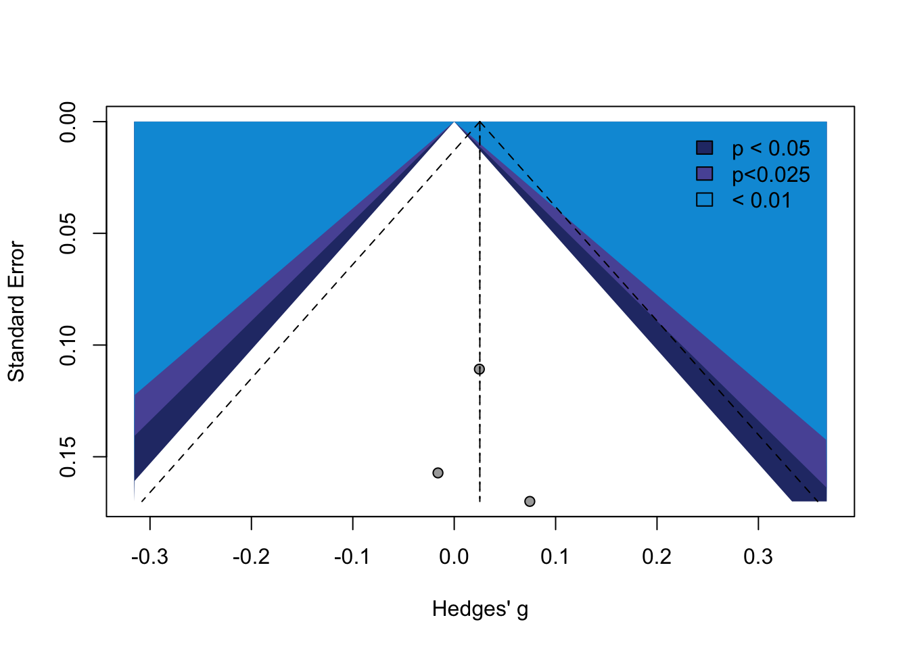
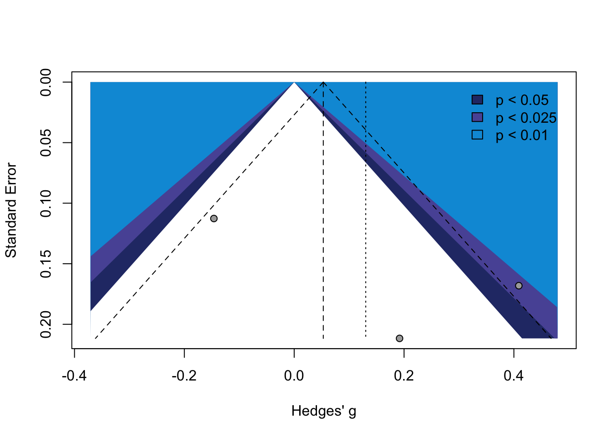
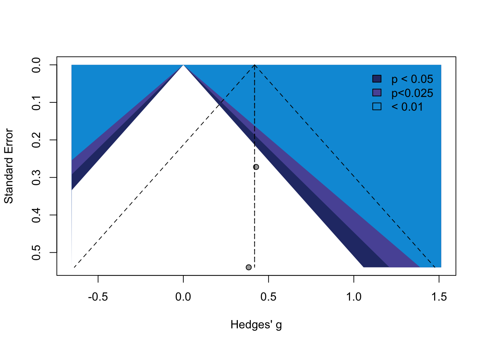
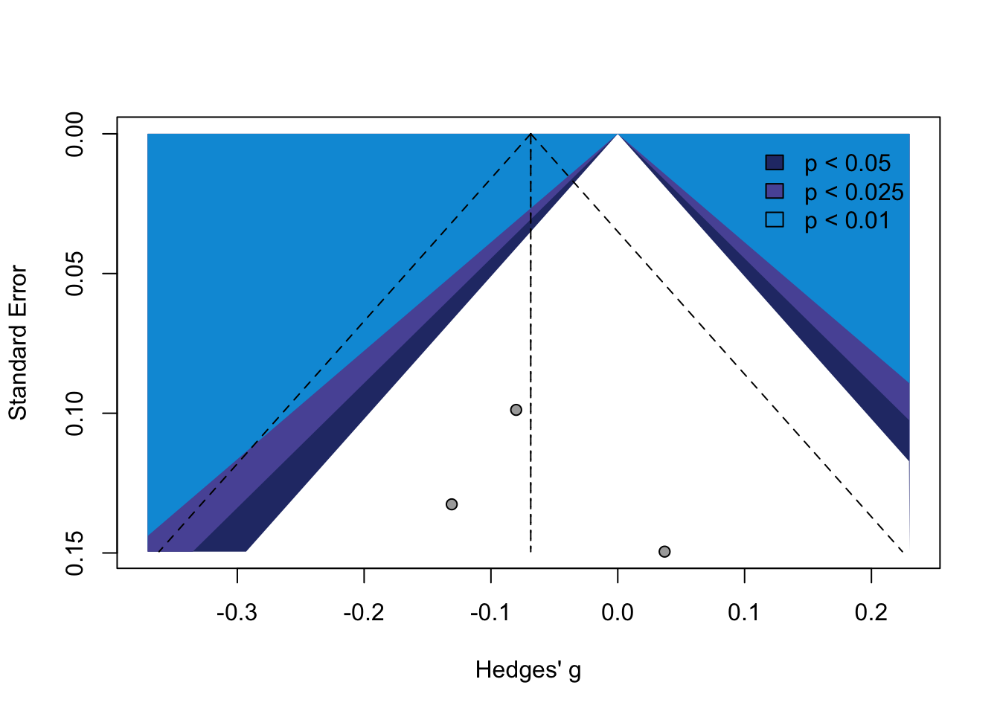
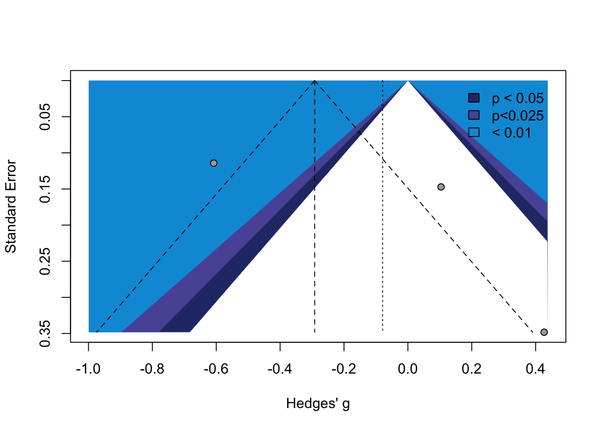
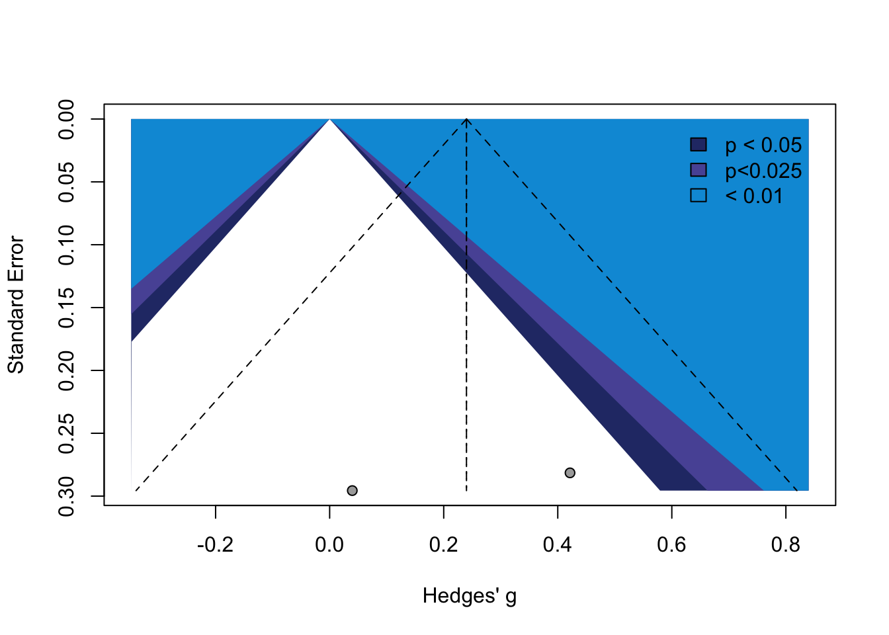
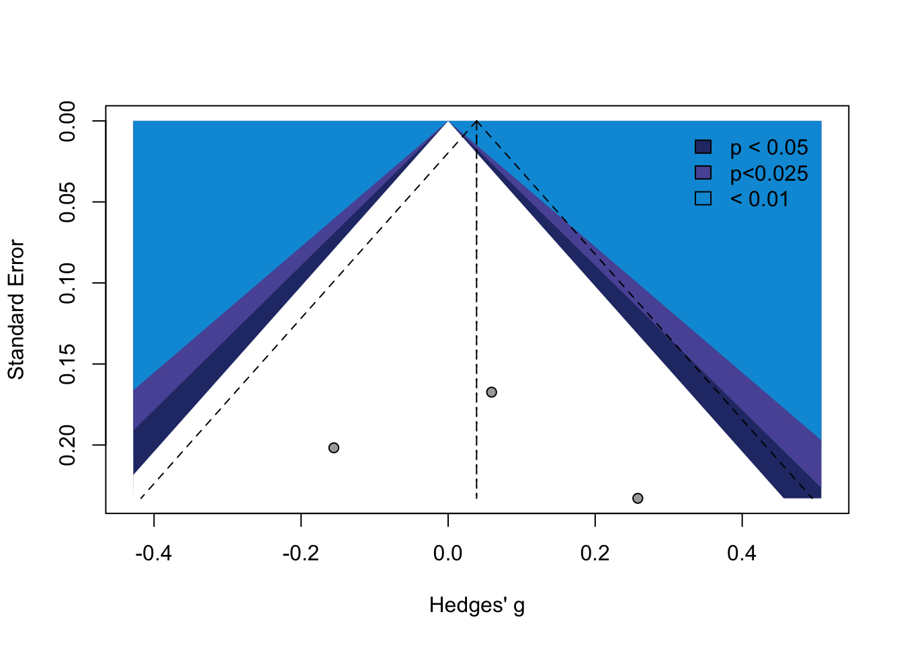
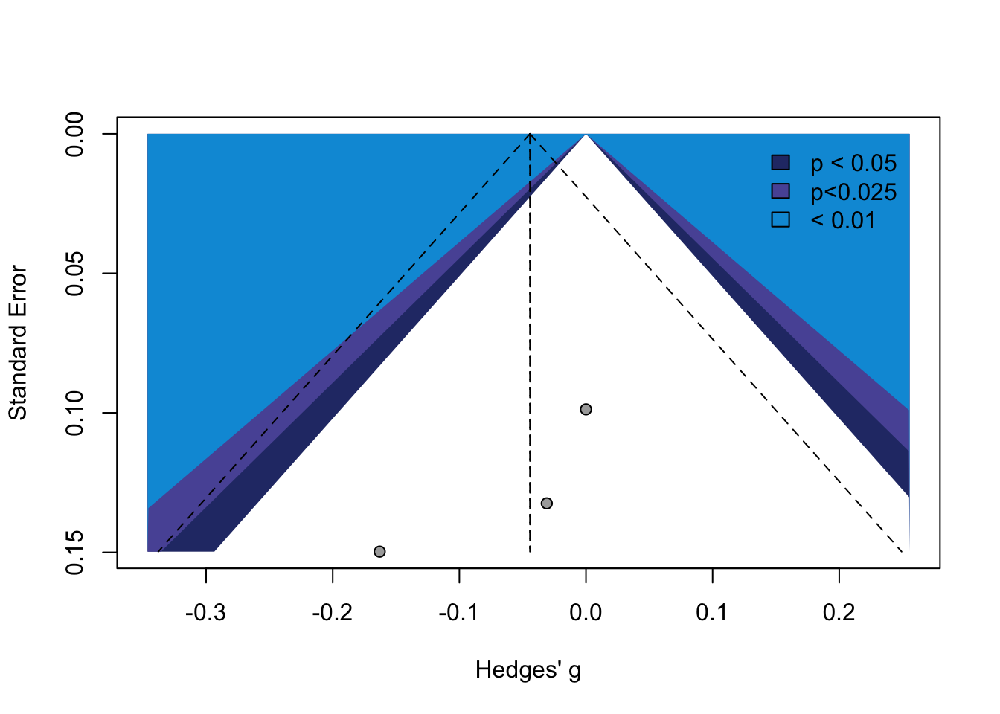
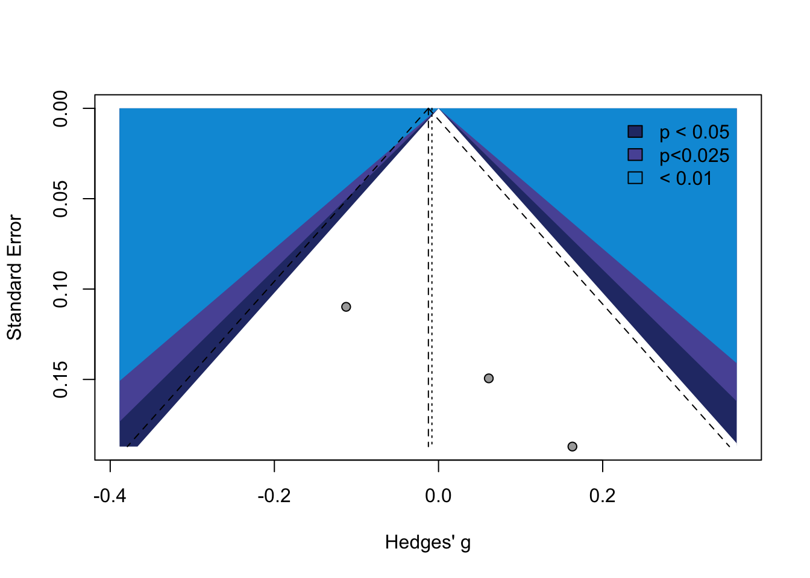

| Reference | Reason for Exclusion | Additional detail |
|---|---|---|
| Andersen (2019) | Wrong comparator | This study used a difference-in-difference regression to quantify the impact of extended care on earnings of foster care alumni. However, their comparison group did not consist of care leavers so this study was excluded for using an inappropriate comparator. |
| Courtney, Zinn, Zielewski, Bess, Malm, Stagner, et al. (2008) | Wrong population | This study involved a randomised controlled trial of a tutoring intervention for youth in foster care. It was one for our studies that formed part of the “Multi-Site Evaluation of Foster Youth Programs”, three of which were included in this review. However, this one was excluded as the popualtion was younger and not transitioning from care. |
| Courtney, Okpych, & Park (2018) | Wrong comparator | This study used non-randomised methods (instrumental variable with historical control group) in their analysis of the impact of the California Fostering Connections Act which extended care to age 21. It was excluded because the control group was not contemporaneous with the intervention group. |
| Geenen et al. (2013) | Wrong population | This study involved a randomised controlled trial of the TAKE CHARGE/Better Futures intervention, two other trials of TAKE CHARGE/Better Futures were included in this review, however this one was excluded as the population receiving the services are not transitioning from care. |
| Greeson & Thompson (2017) | Wrong outcomes | This study involved a randomised controlled trial of a mentoring intervention, however it only explored intervention acceptability and feasibility of implementing the intervention, outcomes that were not included in this review. |
| Nesmith & Christophersen (2014) | Wrong study design | This study compared outcomes for youth who received the ‘CORE model’ with a comparison site that did not. After careful consideration, we concluded that the methodology used did not meet the inclusion criteria for study design. |
Systematic review and meta-analysis of policies and interventions that improve health, psychosocial and economic outcomes for young people leaving the out-of-home care system: supplementary material
David Taylor ![]()
Bianca Albers
Georgina Mann
Philip Mendes
Geraldine Macdonald
Aron Shlonsky
1 About
This page contains supplementary material for a systematic review titled “Systematic review and meta-analysis of policies and interventions that improve health, psychosocial and economic outcomes for young people leaving the out-of-home care system”.
The following information is provided here:
- List of excluded studies — includes details of studies that might appear to meet the inclusion criteria, but which were excluded.
- Supplementary information about included interventions — including a description of the intervention, its intended outcomes, eligibility criteria and details of how it is delivered.
- Search Strategy and Results — includes search strategies and results for each published database and grey sources
- Data extraction templates and results — includes the template and information extracted from each included study used to transform into a common effect size
- Publication Bias Assessment Results — includes both funnel plots displaying the relationship between study precision and effect sizes and results of Egger’s test of the intercept for all outcomes included in a quantitative synthesis
- GRADE Assessments — summary and detailed GRADE assessments are available for outcomes included in a quantitative synthesis
- PRISMA 2020 Checklist — includes details of how this review meets the PRISMA 2020 reporting guidelines
The analysis code is available in a GitHub repository.
2 List of excluded studies
3 Supplementary information about included interventions
3.0.1 Better Futures
3.0.1.1 Description
The Better Futures program aims to empower and support young people who are in foster care and have serious mental health challenges to enter post-secondary education. The program is grounded in self-determination and involves a range of group and one-to-one interventions designed to support participants to identify and work towards their own post-secondary goals.
3.0.1.2 Intended outcomes
The primary intended outcome is that participants enroll in higher education.
3.0.1.3 Eligibility criteria
To be enrolled in Better Futures, young people need to:
- reside in the program’s catchment area,
- be in the guardianship of the state foster care system,
- be in secondary education (high school or GED program) and one or two years away from completion,
- be open to the possibility of higher or vocation education and have not yet applied,
- have been identified as experiencing significant mental health challenges (for example, be receiving mental health counselling, or be receiving special education services for an emotional disability or be on a psychotropic medication or be living in a therapeutic setting); and
- be able to attend community-based sessions (i.e. not residing in a secure facility).
3.0.1.4 Delivery
Length of support: The program lasts for approximately ten months.
Mode of delivery: The program is primarily delivered by ‘Peer Coaches’ – young people under the age of 28 enrolled in higher education with lived experience of foster care and/or mental health challenges – with support from Intervention Managers. The model comprises three components: (1) A brief residential ‘summer institute’ with an emphasis on higher education preparation for young people in foster care with mental health difficulties (e.g. through campus tours, information sessions and facilitated discussions on relevant topics, and social activities. (2) One-to-one, peer coaching sessions which focus on identifying and working towards individual post-secondary goals, as well as working through a series of experiential activities and self-determination skills. (3) Group mentoring workshops in which participants and peer coaches come together for expert-guided discussions and related practical activities on relevant topics (e.g. college applications and application writing exercises).
Intensity of support: Over the course of the program, participants have access to one residential camp (of 4 days/3 nights); followed by bi-monthly, one-to-one coaching sessions for a period of nine months; and four group workshops.
Access to implementation support: The Peer Coaches are provided with approximately 40 hours of training; an intervention protocol and access to weekly group and individual supervision from Intervention Managers.
Source: Geenen et al. (2015)
3.0.2 Extended foster care (EFC) in Illinois or Washington
3.0.2.1 Description
‘Extended foster care’ (EFC) describes the extension of the age limit for foster care, and eligibility for associated support services, from 18 to 21 years of age. In the United States, the 2008 ‘Fostering Connections to Success and Increasing Adoptions Act’ made it possible for states to implement extended foster care at state level. There is variation in EFC implementation – eligibility, funding and services provided – between states.
3.0.2.2 Intended outcomes
By enabling young people to remain in care beyond their 18th birthday and up to 21 years of age, EFC aims to improve the outcomes of foster youth into adulthood.
3.0.2.3 Eligibility criteria
To be eligible for EFC, young people need to:
- be in foster care in the state of Illinois or Washington; and
- be aged 18 to 21 years old.
Source: Courtney & Hook (2017), Lee, Courtney, & Hook (2012), Strahl, Breda, Mann-Feder, & Schröer (2020), Miller, Bales, & Hirsh (2020), Mendes & Rogers (2020)
3.0.3 ICare2CHECK
3.0.3.1 Description
The ICare2CHECK program is a brief health care education intervention, providing access to a health care booklet and companion website designed in collaboration with young people with lived experience of foster care, which aim to support young people transitioning out of foster care to navigate the health care system.
3.0.3.2 Intended outcomes
The primary goals of the program are to increase use of health care services by foster youth aged 16 and over and to decrease use of urgent care services.
3.0.3.3 Eligibility criteria
To be enrolled in the ICare2CHECK program, young people need to: * be in foster care under the custody of child protective services (CPS) for at least 12 months; * aged 16 years old or over; and * be approaching emancipation from CPS custody.
3.0.3.4 Delivery
Length of support: One-off receipt of health care education materials.
Mode of delivery: The ICare2CHECK program involves one-off receipt of health care education materials, including a pocket-sized booklet (‘ICareGuide’) and access to a companion website. The materials aim to support young people to navigate the health care system and include information on how and when to access medical support; information on appropriate hotlines; information on preventive health care including relating to pregnancy and sexually transmitted infections; and instructions on how to apply for health insurance. In addition, the website included interactive tools to assist young people in locating health care services and decision-making around what level of medical service to access.
Intensity of support: One-off receipt of a health care booklet and access to a companion website.
Access to implementation support: No information available.
Source: Beal, Nause, Lutz, & Greiner (2020)
3.0.4 Independent Living – Employment Services Program, Kern County, California
3.0.4.1 Description
The Independent Living – Employment Services (IL-ES) program, created in 1999 by the Department of Human Services in California, is designed to equip young people in foster care (or on probation), with the encouragement, skills and resources they require to secure employment.
3.0.4.2 Intended outcomes
The primary intended outcome of the IL-ES program is that participants obtain and maintain secure employment. Secondary goals include participants’ development of life skills and resources, enabling them to avoid use of public assistance in future.
3.0.4.3 Eligibility criteria
To be enrolled in the IL-ES program, young people need to:
- reside in Kern County, California, the catchment area for the program;
- be in foster care under Kern County Department of Human Services (DHS) (or have ‘aged out’ of the foster care system), be on probation or under subsidized guardianship;
- be aged 16 to 21 years old; and
- have been assessed as eligible for independent living services by their social worker.
3.0.4.4 Delivery
Length of support: Due to the voluntary nature of the program, the duration of support varies by individual participant. Some participants will receive only the initial letter, while others will receive regular, ongoing support up to the age of 21 years.
Mode of delivery: The IL-ES program comprises two main elements: (1) An introductory letter and subscription to a regular job listing alert and (2) one-to-one employment support. An introductory letter inviting the young person to participate in the program and weekly newsletters, highlighting job opportunities, are sent to all eligible young people. Young people who express interest in additional services are assessed by an IL-ES worker to identify their employment needs and goals and have access to a range of other one-to-one and group support. One-to-one support includes support in searching for jobs; support in preparing a CV or job application; financial and practical help in buying interview clothes; and support in accessing other services, as needed. Participants can also access employment skills workshops. Employment services are provided by qualified social services staff with training in employment support.
Intensity of support: Participants receive weekly newsletters. The intensity of one-to-one support varies according to a young person’s expressed goals, however, IL-ES staff maintain regular contact either via telephone or through face-to-face visits. Two to four employment-skills workshops are held per year.
Access to implementation support: No information available.
Source: Zinn & Courtney (2017), Courtney, Zinn, Koralek, & Bess (2011)
3.0.5 Independent Living Services
3.0.5.1 Description
‘Independent Living Services’ (ILS) encompasses the broad range of federally funded services offered to young people transitioning from foster care to independent living in the United States of America (USA). ILS service delivery varies between states; however, an emphasis is placed on education and employment services.
3.0.5.2 Intended outcomes
The primary goal of ILS is to support a successful transition into adulthood for young people leaving foster care in the USA. An emphasis is placed on ILS recipients completing high school or GED certification, and on securing employment.
3.0.5.3 Eligibility criteria
To access ILS, young people need to:
- Be in foster care in the USA;
- Be identified as likely to remain in foster care until the age of 18; and,
- Meet eligibility criteria at state level.
3.0.5.4 Delivery
Length of support: No information available. Varies at individual level.
Mode of delivery: ILS academic support for high-school or GED completion may include (a) tutoring, (b) homework, and (c) provision of educational resources. ILS employment-related services that aim to support young people in securing and maintaining employment may include: (a) career or vocational assessment, (b) internships, classes, or training for skills development in a particular occupation, (c) job coaching. ILS also includes mentoring services through which eligible young people are connected with mentors, who provide regular support. Financial assistance is also provided through ILS for tuition, relevant services and supplies.
Intensity of support: No information available. Varies at individual level.
Access to implementation support: No information available.
Source: Kim, Ju, Rosenberg, & Farmer (2019)
3.0.6 Interactive Healthy Lifestyle Preparation (iHeLP)
3.0.6.1 Description
Interactive Healthy Lifestyle Preparation (iHeLP) is a computer- and mobile phone-based app that dynamically adapts to a participant’s current motivation to influence their substance use. The application is based on motivational interviewing principles. Participants complete an initial computer-based screening at baseline that seeks to assess their readiness to change. Future interaction, which is tailored to information provided during the baseline assessment, takes place through text messaging on a participant’s phone.
3.0.6.2 Intended outcomes
The primary goal of iHeLP is to reduce substance misuse by supporting participants to set goals and motivate them to follow through with them.
3.0.6.3 Eligibility criteria
To be enrolled in the iHeLP trial, young people need to meet the following criteria:
- Aged between 18 and 19,
- Have left foster care no more than two years ago,
- Scored a ‘moderate’ or ‘severe’ risk on the Alcohol, Smoking, and Substance Involvement Screening Test,
- Are not currently enrolled in, or seeking, substance abuse treatment,
- Own a mobile phone, and
- Use text messaging at least weekly.
3.0.6.4 Delivery
Length of support: Service length is not time limited, although the pilot was limited to a 12-month follow up
Mode of delivery: iHeLP is a text message-based intervention
Intensity of support: Participants are sent poll questions via notifications weekly, prompting them to engage with the app
Access to implementation support: Not available
Source: Braciszewski et al. (2018)
3.0.7 Life Skills Training Program: Los Angeles County
3.0.7.1 Description
The Life Skills Training (LST) Program of Los Angeles County was created in 1987 to equip young people in state custody, either through foster care or on probation , with the skills and resources required to live independently. program participants are provided access to a five-week classroom-based life-skills course covering core competency areas set by the State: education, employment, daily living skills, survival skills, understanding choices and consequences, interpersonal skills and IT skills. The program also has an outreach component which involves active recruitment of young people into the program and short-term case-management services.
3.0.7.2 Intended outcomes
The intended outcomes of the LST program of Los Angeles County are that young people develop the skills they require for independent living, complete their high-school education and move on to higher-education or training.
3.0.7.3 Eligibility criteria
To be enrolled in the LST program, young people need to:
- reside within the program catchment area,
- be aged 16 or older at referral to the program,
- be in a foster care placement under the guardianship of the Department of Child and Family Services (DCFS) or on probation,
- be referred to the program by their transition coordinator at DCFS or the Probation Department, and
- have a goal of, or be preparing to move to, independent living.
3.0.7.4 Delivery
Length of support: The program lasts for approximately five weeks.
Mode of delivery: The LST program comprises two elements: (1) A brief classroom-based intervention offered in a convenient community college setting which covers core competency areas related to life skills and independent living. Although usually classroom-based, workshop instructors are allowed flexibility in material delivery and sessions may take the form of out-of-classroom practical activities (e.g. taking public transportation, or grocery shopping) or involve guest speakers. Pre- and post-assessments are carried out to evaluate progress in skill acquisition. Transportation, food and money are offered to remove barriers to attendance. (2) ‘Outreach’ or short-term case-management support offered by ‘Outreach Advisors’ (OAs) – typically college graduates with experience in youth work. OAs also take an active role in recruiting young people to the program, usually by visiting the young person in their home. Peer Counsellors, former foster youth and, typically, LST graduates also provide classroom assistance to the workshop instructors and general support for program operations.
Intensity of support: The classroom-based component involves 30 hours of life skills training, offered as three-hour classes, twice a week over a five-week period. One-to-one case management support is also available during this time.
Access to implementation support: OAs receive (initial and ongoing) training and an ‘Outreach Advisor Training Manual’ is also provided. Workshop instructors are provided with workshop curriculum and quarterly training.
Source: Greeson, Garcia, Kim, Thompson, & Courtney (2015), Courtney, Zinn, Zielewski, Bess, & Malm (2008)
3.0.8 Massachusetts Adolescent Outreach Program for Youths in Intensive Foster Care
3.0.8.1 Description
The ‘Massachusetts Adolescent Outreach Program for Youths in Intensive Foster Care’ (or ‘Outreach’ program) aims to support young people as they transition out of intensive foster care into independent living. Outreach workers provide one-to-one assistance, tailored to the young person’s self-identified needs and goals. program activities are geared towards providing a sense of support to the young person, through the development of a trusting relationship with their Outreach worker, while also enabling participants to develop skills and resources for independent living through hands-on assistance in practical tasks (e.g. in accessing available financial support, obtaining housing, applying for further education or employment, and facilitating referrals to appropriate services).
3.0.8.2 Intended outcomes
The primary goals of the Outreach program are to support young people leaving intensive foster care to develop the skills, connections and capital that they will need to live as an independent adult. While intended outcomes vary according to participant needs, a particular emphasis is placed on the acquisition of life skills, participation in further education and/or securing employment and the development of supportive relationships.
3.0.8.3 Eligibility criteria
To be enrolled in the Outreach program, young people need to:
- be in intensive foster care under the guardianship of Massachusetts Department of Children and Families;
- be aged 16 or older at referral to the program; and
- have a goal of living independently.
3.0.8.4 Delivery
Length of support: The program duration is not fixed, however, on average young people received support for 22 months: 16 months of hands-on assistance, followed by six months of intermittent check-ins.
Mode of delivery: The program is delivered by Outreach workers, under supervision from Outreach supervisors. Outreach workers work to (a) develop and follow a plan with the young person through initial and ongoing assessment of their needs and goals, (b) have weekly meetings during which they provide hands-on, individualized support in achieving the young person’s goals (e.g. applying for higher education or employment), and (c) refer participants to other services as appropriate. Once a young person is assessed as having met the goals set out in their personal plan, weekly ‘assistance’ meetings are concluded and the young person is moved to ‘tracking’ status for approximately six months, during which time the Outreach worker maintains intermittent contact with the young person before discharging them from the program.
Intensity of support: Outreach workers typically meet with young people on a weekly basis; however, young people can request more or less frequent meetings depending on their needs.
Access to implementation support: Outreach workers receive formal pre-service training and informal training through shadowing colleagues ‘on the job’. Ongoing training is available, and Outreach supervisors provide weekly supervision.
Source: Greeson, Garcia, Kim, & Courtney (2015), Courtney, Zinn, Johnson, & Malm (2011)
3.0.9 New York City/New York State–Initiated Third Supportive Housing Program (NYNY III)
3.0.9.1 Description
The ‘New York City/New York State-Initiated Third Supportive Housing Program’ (NYNY III) was developed in 2007 to provide supportive housing for young people at risk of becoming homeless, including youth transitioning out of the foster care system. The program is based on a “housing first” approach, which posits that provision of housing to people with unstable living conditions will ultimately improve health outcomes, even without specific health interventions.
3.0.9.2 Intended outcomes
The primary intended outcome of the NYNY III program is that young people transitioning out of the foster care system to independent living avoid homelessness and secure stable housing. In addition, the program aims to reduce sexually transmitted infections, which are associated with unstable housing experiences, among this group.
3.0.9.3 Eligibility criteria
To be enrolled in the NYNY III program, young people need to:
- Be in foster care in the New York State area; and
- Meet one of the following criteria: be preparing to leave foster care within the following six months, have left foster care within the previous two years, or have been in foster care for at least one year following their 16th birthday.
3.0.9.4 Delivery
Length of support: No information available.
Mode of delivery: The NYNY III program has two main modes of delivery: (1) provision of affordable housing and (2) access to additional supportive services to help young people live independently. Services available through NYNY III include: case management support, employment training, education-related support, and support in accessing appropriate health (physical and mental health) services
Intensity of support: No information available.
Access to implementation support: No information available.
Source: Lim, Singh, & Gwynn (2017)
3.0.10 Premier’s Youth Initiative
3.0.10.1 Description
The Premier’s Youth Initiative (PYI) was developed by the Department of Communities and Justice in New South Wales, Australia. program participants are provided access to advice and services facilitated by a team of three workers: The Personal Advisor, who is the key point of contact for the young person, the Education and Employment Mentor and the Transition Support Worker. PYI seeks to build young peoples’ material resources, independent living skills, social connections and human capital.
3.0.10.2 Intended outcomes
The primary goal of PYI is to prevent youth homelessness. Secondary goals are improving the employment, education and relationship outcomes of young people.
3.0.10.3 Eligibility criteria
To be enrolled in PYI, young people need to:
- Reside in catchments where services are provided (within the state of NSW);
- Be aged between 16.75 (16 years and 9 months) and 17.5 (17 years and 6 months) at the commencement of services;
- Meet one or more of the following criteria: leaving residential OOHC, leaving OOHC with placement instability, leaving a permanent OOHC placement, and leaving OOHC after being in care 12 months or longer; and
- Be capable of living independently.
3.0.10.4 Delivery
Length of support: Service length is not time limited.
Mode of delivery: The PYI team (Personal Advisor, Education and Employment Mentor and Transition Support Worker) work to (a) support the implementation of a leaving care plan, and b) the development of prosocial networks; the team provides (c) education and employment mentoring and (d) transitional support, including housing. Services are provided primarily at the individual level; however, some providers might undertake group activities (e.g. cooking classes). Services providers are paid professionals without clinical qualifications.
Intensity of support: There is no guidance on the intensity of support beyond that it should be ‘directed by the individual’ engaging with the service.
Access to implementation support: program guidelines only.
Source: Taylor et al. (2020)
3.0.11 TAKE CHARGE
3.0.11.1 Description
The TAKE CHARGE program is a coaching and workshop-based intervention, designed to enhance self-determination and improve outcomes for vulnerable young people in the transition to adulthood. Though originally developed for all young people, the model was designed to be accessible for young people with disabilities and was adapted specifically for young people who are both in foster care and receiving special education support.
3.0.11.2 Intended outcomes
The intended outcomes of the TAKE CHARGE program are that participants enhance their ‘self-determination’ skills and are able to identify and work towards self-identified ‘transition’ goals.
3.0.11.3 Eligibility criteria
To be enrolled in the TAKE CHARGE RCT, young people need to:
- reside in the program catchment area;
- be receiving special education support;
- be in foster care (for at least 90 days) under the guardianship of Oregon Department of Human Services (DHS); and
- be aged 16.5 to 17.5 years.
3.0.11.4 Delivery
Length of support: The program lasts for approximately 12 months.
Mode of delivery: The program model comprises two elements: (1) weekly coaching and (2) group workshops. Weekly one-on-one coaching sessions aim to support young people to develop self-determination skills (e.g. goal setting, problem solving, partnership development and self-regulation); to identify their own ‘transition-related’ goals; and to work towards achieving their goals over the course of a year (through practical support and encouragement). Direct practical support (e.g. making phone calls to relevant services) is gradually faded out as the participant demonstrates increasing skill level and motivation. Participants receive a ‘Self-help guide’ which outlines the skill areas covered in their coaching sessions and is designed to guide them through the transition planning process. The timing of sessions is flexible to suit the needs of participants. A number of adaptations were made to TAKE CHARGE to suit the needs of young people in foster care – including flexibility in the sequence of coaching sessions and the revision of the guide to incorporate information relevant to foster youth and the transition to independence. Coaches also liaise closely with foster parents, through monthly updates, to engage them in the process. ‘Mentoring workshops’ are held on a quarterly basis and focused on topics such as education, employment and transitioning out of foster care. The workshops provide an opportunity for participants to meet with other young people participating in the program and ‘mentors’ – TAKE CHARGE graduates with lived experience of foster care, 3 to 4 years older, who are enrolled in higher education, employed or had experience in overcoming barriers during their own transition from foster care.
Intensity of support: Coaching is one-to-one and carried out weekly. Four ‘Mentoring Workshops’ are held, one per quarter, over the 12-month program. Coaches provide monthly updates to Foster Parents.
Access to implementation support: ‘Mentors’ received training prior to the workshops. No information was available on training or support to TAKE CHARGE Coaches.
Source: Powers et al. (2012)
3.0.12 True North
3.0.12.1 Description
True North is a multi-component intervention where participants are engaged in group workshops and individual sessions on relationship skills and financial stability, and also receive employment assistance and mentoring.
3.0.12.2 Intended outcomes
In the short to medium term the intervention seeks to improve relationships and job readiness for participants. Longer-term, it seeks to improve financial stability and overall well-being.
3.0.12.3 Eligibility criteria
To be enrolled in the True North, young people need to:
- age 17 and currently in foster care;
- young adults ages 17-23 currently in extended foster care;
- young adults who were involved in foster care at some point in their lives; and
- residing in Broward County at the time of enrollment.
3.0.12.4 Delivery
Length of support: The intervention lasts for approximately 12 months.
Mode of delivery: The model comprises three content modules that are delivered by trained staff: a) healthy relationships, b) economic stability and c) mentoring. Healthy relationships are supported through implementation of the ‘Love Notes Healthy Relationships Curriculum’, which is delivered as part of group workshops and individual sessions. Economic stability is covered through teaching financial literacy and job readiness in both group workshops and individual sessions. Job and internships opportunities are also available. Individual mentoring is provided using a strengths-based and motivational interviewing approach.
Intensity of support: Intensity depends on the module. For healthy relationships: 13 hours of group workshops and 7 hours of individual sessions are provided. For economic stability: 4 hours of group workshops and 7 hours of individual sessions are provided. If a participant has an internship, then they meet with there supervisor once a month and receive 1-4 hours of job coaching per month. For mentoring: participants receive 7 hours of individual sessions.
Access to implementation support: Level of support depended on the module. For healthy relationships: facilitators needed to have completed a bachelors degree and the Love Notes training from the intervention originator prior to delivering services. A day of refresher training was provided annually. For economic stability: financial coaches needed to have completed a bachelors degree prior to delivering services. Self-directed training on financial and vocational tools and resources was required on an ongoing basis. For mentoring: staff received strengths-based case management and motivation interviewing training prior to delivering services before providing services and on an annual basis.
Source: Leip (2020)
3.0.13 Youth Villages LifeSet (YVLifeSet)
3.0.13.1 Description
The Youth Villages LifeSet (YVLifeSet) program was originally developed in 1999 by ‘Youth Villages’, a non-profit organisation operating a variety of residential and community-based youth programs across the United States. The manualized program is intended to help young people who are leaving foster care or juvenile justice custody to successfully transition to independent living by providing weekly, individualized, and clinically focused case management, counselling and support. Support is tailored to each young person’s needs, however, issues commonly addressed include education, employment and finances, stable housing, life skills development, management of relationships, and mental health and substance use.
3.0.13.2 Intended outcomes
The primary goal of YVLifeSet is to support young people to make a successful transition to independent living from foster care or juvenile justice custody. Due to the individualized nature of the program, targeted outcomes are wide-ranging and tailored to the particular needs and goals of each young person. Particular emphasis is placed on maintenance of stable housing; avoidance of involvement with the criminal justice system and a reduction in risky behaviours; participation in education or vocational training; obtaining formal employment; and having improved mental health and access to social support.
3.0.13.3 Eligibility criteria
To be enrolled in YVLifeSet RCT, young people need to:
- be in the custody of the child welfare system, either in foster care or in the juvenile justice system and approaching independence from state custody;
- be contactable and interested in program services;
- be aged 17 to 24;
- not have a history of severe violence, mental health problems, drug use, and/or developmental delays; and
- be assessed by program staff as capable of living independently.
3.0.13.4 Delivery
Length of support: The program lasts between nine and twelve months.
Mode of delivery: The program is delivered by ‘Transitional Living specialists’ (‘TL specialists’) with supervision from clinical supervisors, and clinical consultants. The program starts with an assessment and the development of a treatment plan based on the young person’s needs and goals. TL specialists meet with the participants on a weekly basis, in their home or in convenient community locations, and engage in activities related to their personal plan. One-to-one sessions are based on three methodologies: (a) the use of evidence-informed tools (including curricula on topics such as money management and behavioural treatment strategies for issues including substance abuse); (b) counselling (oriented towards supporting the young person achieving their stated goals); and (c) appropriate action-oriented activities (e.g. taking a young person to a bank to open an account). TL specialists may also refer young people to other relevant community-based services and encourage participants to attend group social and learning activities with other program participants. An ‘educational/vocational coordinator’ is available to provide additional support to young people who want to go to college, enrol in vocational training or find a job. All program participants are screened for trauma and, where appropriate, have access to (12-20 weeks’) therapy by trained staff. TL specialists are not typically clinically qualified but have (as a minimum) a bachelor’s degree in a relevant field.
Intensity of support: TL specialists typically have a caseload of eight young people. Participants meet for one-hour, one-to-one meetings on a weekly basis. Young people may also attend monthly group sessions with other program participants.
Access to implementation support: TL specialists are provided with a program treatment manual which outlines the methodologies that they are expected to employ when working with young people. Training is provided in evidence-based clinical practices (e.g. motivational interviewing). Clinical supervisors provide weekly group supervision to four or five TL specialists and, in turn, clinical supervisors receive supervision from clinical consultants.
Source: Courtney, Valentine, & Skemer (2019), Valentine, Skemer, & Courtney (2015), Skemer & Valentine (2016), Manno, Jacobs, Alson, & Skemer (2014)
4 Search Strategy and Results
This section details the results of our search strategy of databases.
4.1 Overview of electronic databases
| Database | Platform | Start of search coverage | End of search coverage | Search strategy |
|---|---|---|---|---|
| Cochrane Controlled Register of Trials | Ovid | 1991 | 2022-08-04 | See Table 3 |
| CINAHL | EBSCO | 1937 | 2022-08-03 | See Table 4 |
| ERIC | Proquest | 1966 | 2022-08-02 | See Table 5 |
| PsycINFO | Ovid | 1806 | 2022-08-03 | See Table 6 |
| MEDLINE | Ovid | 1946 | 2022-08-03 | See Table 7 |
| EMBASE | Ovid | 1974 | 2022-08-01 | See Table 8 |
| Sociological Abstracts | Proquest | 1952 | 2022-08-02 | See Table 9 |
| Social Services Abstracts | Proquest | 1980 | 2022-08-02 | See Table 10 |
| SocIndex | EBSCO | 1895 | 2022-08-04 | See Table 11 |
| NHS Economic Evaluation Database | Ovid | 1995 | 2022-08-04 | See Table 12 |
| Health Technology Assessment | Ovid | 2001 | 2022-08-04 | See Table 13 |
4.2 Results of electronic database searches
4.2.1 Cochrane Controlled Register of Trials via Ovid
| No. | Search Terms | Result |
|---|---|---|
| 1 | child welfare/ or foster home care/ | 479 |
| 2 | (foster adj2 (youth or child* or care)).ti. | 224 |
| 3 | (foster adj2 (youth or child* or care)).ab. | 351 |
| 4 | Independent Living/ | 686 |
| 5 | independent living.ti. | 49 |
| 6 | independent living.ab. | 457 |
| 7 | Self Care/ | 4339 |
| 8 | (extend* adj2 (care or foster* or out of home care or OOHC or looked after)).mp. | 264 |
| 9 | (leav* adj2 (care or foster* or out of home care or OOHC or looked after)).mp. | 59 |
| 10 | (transit* adj2 (care or foster* or out of home care or OOHC or looked after)).mp. | 1076 |
| 11 | (ag* out adj2 (care or foster* or out of home care or OOHC or looked after)).mp. | 5 |
| 12 | (emancipat* adj2 (care or foster* or out of home care or OOHC or looked after)).mp. | 1 |
| 13 | 1 or 2 or 3 | 806 |
| 14 | 4 or 5 or 6 or 7 or 8 or 9 or 10 or 11 or 12 | 6808 |
| 15 | 13 and 14 | 19 |
| 16 | (RCT or Trial* or randomi* or random* allocat* or random* assign* or (control* adj1 Intervention) or (treatment adj1 control) or evaluat study 534693 or control group* or control condition* or comparison group* or comparison condition* or time series or (before adj1 after) or pre post or longitudinal or repeated measures or effect size* or comparative effective* or experiment* or pre-experiment* or difference in difference* or instrumental variable* or Propensity score or (control* adj1 treat) or wait list or quasi ex* or quasiexperiment* or matched control or matched comparison).ti. | 534693 |
| 17 | (RCT or Trial* or randomi* or random* allocat* or random* assign* or (control* adj1 Intervention) or (treatment adj1 control) or evaluat study 534693 or control group* or control condition* or comparison group* or comparison condition* or time series or (before adj1 after) or pre post or longitudinal or repeated measures or effect size* or comparative effective* or experiment* or pre-experiment* or difference in difference* or instrumental variable* or Propensity score or (control* adj1 treat) or wait list or quasi ex* or quasiexperiment* or matched control or matched comparison).ab. | 1165124 |
| 18 | (Clinical Trial or Empirical Study or Experimental Replication or Followup Study or Longitudinal Study or Prospective Study or Retrospective 636912 Study or Quantitative Study or Treatment Outcome or Field Study or Mathematical Modeling).mp. | 636912 |
| 19 | 16 or 17 or 18 | 1417296 |
| 20 | 15 and 19 | 13 |
4.2.2 CINAHL via EBSCO
| No. | Search Terms | Result |
|---|---|---|
| S1 | (MM Foster Home Care) OR (MH Foster Parents) OR (MH Child, Foster) | 5425 |
| S2 | (MH “Child Welfare+”) | 40648 |
| S3 | TI foster n2 child* OR TI foster n2 youth OR TI foster n2 parent* OR TI foster n2 care* OR TI foster n2 home | 2877 |
| S4 | AB foster n2 child* OR AB foster n2 youth OR AB foster n2 parent* OR AB foster n2 care* OR AB foster n2 home | 3918 |
| S5 | (TI (extend* n2 care or foster)) OR (AB (extend n2 care or foster*)) | 28212 |
| S6 | (TI (leav* n2 care or foster)) OR (AB (leav n2 care or foster*)) | 27294 |
| S7 | (TI (transit* n2 care or foster)) OR (AB (transit n2 care or foster*)) | 33282 |
| S8 | (TI (ag* out n2 care or foster)) OR (AB (ag out n2 care or foster*)) | 26574 |
| S9 | S1 OR S2 OR S3 OR S4 | 45385 |
| S10 | S5 OR S6 OR S7 OR S8 | 35980 |
| S11 | S9 AND S10 | 5797 |
| S12 | MH “Randomized Controlled Trials” OR MH “Clinical Trials” | 302687 |
| S13 | MH “Evaluation” OR “MH Program Evaluation” | 2282 |
| S14 | TI “Randomized Controlled Trials” OR TI “Clinical Trials” | 20730 |
| S15 | MH “Quasi-Experimental Studies+” | 18097 |
| S16 | (MH “Quasi-Experimental Studies”) OR (MH “Nonequivalent Control Group”) OR (MH “Time Series”) OR (MH “Repeated Measures”) OR (MH “Retrospective Design”) OR (MH “Time and Motion Studies”) | 392811 |
| S17 | (quasi-experiment* OR quasiexperiment* OR “propensityscore” OR “controlgroup” OR “control condition” OR “treatment group” OR “comparison group” OR “wait-list” OR “waiting list” OR “intervention group” OR “experimental group” OR “matched control” OR “matched groups” OR “matched comparison” OR “experimental trial” OR “experimental design” OR “experimental method” OR “experimental stud” OR “experimental evaluation” OR “experimental test” OR “experimental assessment” OR “comparison sample” OR “propensity matched” OR “control sample” OR “control subject” OR “intervention sample” OR OR “no treatment group” OR “nontreatment control” OR “pseudo experimental” OR “pseudo randomi?ed” OR “quasi-RCT” OR “quasi-randomi?ed” OR “compared with control” OR “compared to control” OR ”compared to a control” OR “non-randomi?ed controlled stud” OR “nonrandom assign*”) | 295386 |
| S18 | S12 OR S13 OR S14 OR S15 OR S16 OR S17 | 883730 |
| S19 | S11 AND S18 | 569 |
4.2.3 ERIC via Proquest
| No. | Search Terms | Result |
|---|---|---|
| S1 | MAINSUBJECT.EXACT(“Child Safety”) OR MAINSUBJECT.EXACT(“Child Welfare”) OR MAINSUBJECT.EXACT(“Foster Care”) | 8962 |
| S2 | ti(foster N/2 child) OR ti(foster N/2 parent) OR ti(foster N/2 care) OR ti(foster N/2 home)) OR (ab(foster N/2 child) OR ab(foster N/2 parent) OR ab(foster N/2 care*) OR ab(foster N/2 home) | 1098 |
| S3 | MAINSUBJECT.EXACT(“Independent living”) OR MAIN SUBJECT.EXACT(“Daily living”) OR ((extend* NEAR/2 (care OR foster)) OR (leav NEAR/2 (care OR foster)) OR (transit NEAR/2 (care OR foster)) OR (ag out NEAR/2 (care OR foster*))) OR su(“Transitional programs”) | 8894 |
| S4 | S1 OR S2 | 9191 |
| S5 | S3 AND S4 | 354 |
| S6 | RCT OR Trial* OR randomi* OR ‘random* allocat’ OR ‘random assign’ OR (control n/1 intervention) OR (treatment n/1 control) OR ‘evaluat study’ OR ‘control group’ OR ‘control condition’ OR ‘comparison group’ OR ‘comparison condition’ OR ‘time series’ OR ‘before after’) OR (‘pre post’ OR longitudinal OR ‘repeated measures’ OR ‘effect size’ OR ‘comparative effective’ OR experiment* OR pre-experiment* OR ‘difference?in?difference’ OR ‘instrumental variable’ OR ‘propensity score’ OR (control n/1 treat) OR ‘wait list’ OR ‘quasi ex’ or quasiexperiment OR ‘matched control’ OR ‘matched comparison’ | 256539 |
| S7 | (MAINSUBJECT.EXACT(‘Control Groups’) OR MAINSUBJECT.EXACT(‘Matched Groups’) OR MAINSUBJECT.EXACT(‘Quasiexperimental Design’) OR MAINSUBJECT.EXACT(‘Randomized Controlled Trials’) OR MAINSUBJECT.EXACT(‘Program Evaluation’) OR MAINSUBJECT.EXACT(‘Outcomes of Treatment’) OR MAINSUBJECT.EXACT(‘Medical Care Evaluation’) OR MAINSUBJECT.EXACT(‘Replication (Evaluation)’) OR MAINSUBJECT.EXACT(‘Evaluation Research’) OR MAINSUBJECT.EXACT(‘Scientific Research’) OR MAINSUBJECT.EXACT(‘Therapy’) OR MAINSUBJECT.EXACT(‘Cost Effectiveness’) OR MAINSUBJECT.EXACT(‘Medical Evaluation’) OR MAINSUBJECT.EXACT(‘Program Effectiveness’) OR MAINSUBJECT.EXACT(‘Outcome Measures’) OR MAINSUBJECT.EXACT(‘Experimental Groups’) OR MAINSUBJECT.EXACT(‘Experimental Programs’) OR MAINSUBJECT.EXACT(‘Data Analysis’) OR MAINSUBJECT.EXACT(‘Comparative Analysis’) OR MAINSUBJECT.EXACT(‘Intervention’)) | 279028 |
| S8 | S6 OR S7 | 443083 |
| S9 | S5 AND S8 | 132 |
4.2.4 PsycINFO via Ovid
| No. | Search Terms | Result |
|---|---|---|
| 1 | foster care/ or child welfare/ or foster children/ or foster parents/ or protective services/ | 17840 |
| 2 | (foster adj2 (youth or child* or care)).ti. | 3656 |
| 3 | (foster adj2 (youth or child* or care)).ab. | 7503 |
| 4 | independent living programs/ | 410 |
| 5 | independent living.ti. | 557 |
| 6 | independent living.ab. | 2922 |
| 7 | self-care skills/ | 4901 |
| 8 | self-determination/ | 5780 |
| 9 | (extend* adj2 (care or foster* or out of home care or OOHC or looked after)).mp. | 757 |
| 10 | (leav* adj2 (care or foster* or out of home care or OOHC or looked after)).mp. | 804 |
| 11 | (transit* adj2 (care or foster* or out of home care or OOHC or looked after)).mp. | 2095 |
| 12 | (ag* out adj2 (care or foster* or out of home care or OOHC or looked after)).mp. | 276 |
| 13 | (emancipat* adj2 (care or foster* or out of home care or OOHC or looked after)).mp. | 137 |
| 14 | 1 or 2 or 3 | 19936 |
| 15 | 4 or 5 or 6 or 7 or 8 or 9 or 10 or 11 or 12 or 13 | 16709 |
| 16 | 14 and 15 | 1035 |
| 17 | (Clinical Trial or Empirical Study or Experimental Replication or Followup Study or Longitudinal Study or Prospective Study or Retrospective Study or Quantitative Study or Treatment Outcome or Field Study or Mathematical Modeling).md. | 2784795 |
| 18 | (RCT or Trial* or randomi* or random* allocat* or random* assign* or (control* adj1 Intervention) or (treatment adj1 control) or evaluat study or control group* or control condition* or comparison group* or comparison condition* or time series or (before adj1 after) or pre post or longitudinal or repeated measures or effect size* or comparative effective* or experiment* or pre-experiment* or difference in difference* or instrumental variable* or propensity score or (control* adj1 treat) or wait list or quasi ex* or quasiexperiment* or matched control or matched comparison).ti. | 134499 |
| 19 | (RCT or Trial* or randomi* or random* allocat* or random* assign* or (control* adj1 Intervention) or (treatment adj1 control) or evaluat study or control group* or control condition* or comparison group* or comparison condition* or time series or (before adj1 after) or pre post or longitudinal or repeated measures or effect size* or comparative effective* or experiment* or pre-experiment* or difference in difference* or instrumental variable* or propensity score or (control* adj1 treat) or wait list or quasi ex* or quasiexperiment* or matched control or matched comparison).ab. | 869427 |
| 20 | 17 or 18 or 19 | 3064221 |
| 21 | 16 and 20 | 742 |
4.2.5 MEDLINE via Ovid
| No. | Search Terms | Result |
|---|---|---|
| 1 | exp Foster Home Care/ or exp Child Welfare/ or exp Child, Foster/ or foster care.mp. | 35109 |
| 2 | child protective services.mp. or Child protective services/ | 1488 |
| 3 | (foster adj2 (youth or child* or care)).ti. | 1281 |
| 4 | (foster adj2 (youth or child* or care)).ab. | 2445 |
| 5 | exp Independent living/ or exp self care/ or exp self-neglect/ or exp social participation/ | 73410 |
| 6 | independent living.ti. | 468 |
| 7 | independent living.ab. | 2478 |
| 8 | (extend* adj2 (care or foster* or out of home care or OOHC or looked after)).mp. | 2021 |
| 9 | (leav* adj2 (care or foster* or out of home care or OOHC or looked after)).mp. | 539 |
| 10 | (transit* adj2 (care or foster* or out of home care or OOHC or looked after)).mp. | 6558 |
| 11 | (ag* out adj2 (care or foster* or out of home care or OOHC or looked after)).mp. | 52 |
| 12 | (emancipat* adj2 (care or foster* or out of home care or OOHC or looked after)).mp. | 40 |
| 13 | 1 or 2 or 3 or 4 | 36387 |
| 14 | 5 or 6 or 7 or 8 or 9 or 10 or 11 or 12 | 84368 |
| 15 | 13 and 14 | 403 |
| 16 | (RCT or Trial* or randomi* or random* allocat* or random* assign* or (control* adj1 Intervention) or (treatment adj1 control) or evaluat study or control group* or control condition* or comparison group* or comparison condition* or time series or (before adj1 after) or pre post or longitudinal or repeated measures or effect size* or comparative effective* or experiment* or pre-experiment* or difference in difference* or instrumental variable* or Propensity score or (control* adj1 treat) or wait list or quasi ex* or quasiexperiment* or matched control or matched comparison).ti. | 742535 |
| 17 | (RCT or Trial* or randomi* or random* allocat* or random* assign* or (control* adj1 Intervention) or (treatment adj1 control) or evaluat study or control group* or control condition* or comparison group* or comparison condition* or time series or (before adj1 after) or pre post or longitudinal or repeated measures or effect size* or comparative effective* or experiment* or pre-experiment* or difference in difference* or instrumental variable* or Propensity score or (control* adj1 treat) or wait list or quasi ex* or quasiexperiment* or matched control or matched comparison).ti. | 3482690 |
| 18 | clinical trial/ or observational study/ or comparative study/ or evaluation study/ | 2625742 |
| 19 | case-control studies/ or cohort studies/ or follow-up studies/ or longitudinal studies/ or prospective studies/ or retrospective studies/ or controlled before-after studies/ or cross- sectional studies/ or historically controlled study/ or interrupted time series analysis/ or feasibility studies/ | 3020526 |
| 20 | 16 or 17 or 18 or 19 | 7735529 |
| 21 | 15 and 20 | 126 |
4.2.6 EMBASE via Ovid
| No. | Search Terms | Result |
|---|---|---|
| 1 | foster care/ or foster child/ | 5513 |
| 2 | child welfare/ or child protection/ | 19738 |
| 3 | (foster adj2 (youth or child* or care)).ti. | 1591 |
| 4 | (foster adj2 (youth or child* or care)).ab. | 3392 |
| 5 | independent living/ or independent living program.mp. | 6559 |
| 6 | independent living.ti. | 658 |
| 7 | independent living.ab. | 3994 |
| 8 | (extend* adj2 (care or foster* or out of home care or OOHC or looked after)).mp. | 3157 |
| 9 | (leav* adj2 (care or foster* or out of home care or OOHC or looked after)).mp. | 810 |
| 10 | (transit* adj2 (care or foster* or out of home care or OOHC or looked after)).mp. | 13486 |
| 11 | (ag* out adj2 (care or foster* or out of home care or OOHC or looked after)).mp. | 61 |
| 12 | (emancipat* adj2 (care or foster* or out of home care or OOHC or looked after)).mp. | 50 |
| 13 | self care/ or self care skills.mp. | 69997 |
| 14 | 1 or 2 or 3 or 4 | 25075 |
| 15 | 5 or 6 or 7 or 8 or 9 or 10 or 11 or 12 or 13 | 95347 |
| 16 | 14 and 15 | 382 |
| 17 | (RCT or Trial* or randomi* or random* allocat* or random* assign* or (control* adj1 Intervention) or (treatment adj1 control) or evaluat study or control group* or control condition* or comparison group* or comparison condition* or time series or (before adj1 after) or pre post or longitudinal or repeated measures or effect size* or comparative effective* or experiment* or pre-experiment* or difference in difference* or instrumental variable* or propensity score or (control* adj1 treat) or wait list or quasi ex* or quasiexperiment* or matched control or matched comparison).ti. | 1099373 |
| 18 | (RCT or Trial* or randomi* or random* allocat* or random* assign* or (control* adj1 Intervention) or (treatment adj1 control) or evaluat study or control group* or control condition* or comparison group* or comparison condition* or time series or (before adj1 after) or pre post or longitudinal or repeated measures or effect size* or comparative effective* or experiment* or pre-experiment* or difference in difference* or instrumental variable* or propensity score or (control* adj1 treat) or wait list or quasi ex* or quasiexperiment* or matched control or matched comparison).ab. | 5541851 |
| 19 | clinical study/ or case control study/ or intervention study/ or longitudinal study/ or major clinical study/ or prospective study/ or retrospective study/ or comparative study/ or controlled study/ or experimental study/ or feasibility study/ or observational study/ or quasi experimental study/ or replication study/ or cross-sectional study/ or controlled clinical trial/ or pretest posttest control group design/ or static group comparison/ or cross-sectional study/ or outcome assessment/ | 13303097 |
| 20 | 17 or 18 or 19 | 16229924 |
| 21 | 16 and 20 | 163 |
4.2.7 Sociological Abstracts via Proquest
| No. | Search Terms | Result |
|---|---|---|
| S1 | SU.EXACT.EXPLODE(“Foster Children”) OR SU.EXACT(“Child Welfare Services”) OR SU.EXACT.EXPLODE(“Foster Care”) OR SU.EXACT(“Surrogate Parents”) | 3801 |
| S2 | (ti(foster N/2 child) OR ti(foster N/2 parent) OR ti(foster N/2 care) OR ti(foster N/2 home)) OR (ab(foster N/2 child) OR ab(foster N/2 parent) OR ab(foster N/2 care) OR ab(foster N/2 home)) | 2225 |
| S3 | S1 OR S2 | 4572 |
| S4 | MAINSUBJECT.EXACT(“Self Care”) OR MAINSUBJECT.EXACT(“Deinstitutionalization”) OR MAINSUBJECT.EXACT.EXPLODE(“Independent Living”) OR MAINSUBJECT.EXACT(“Independence”) | 3836 |
| S5 | (extend* NEAR/2 (care or foster*)) | 1628 |
| S6 | (leav* NEAR/2 (care OR foster*)) | 2169 |
| S7 | (transit* NEAR/2 (care OR foster*)) | 1686 |
| S8 | (ag* out NEAR/2 (care OR foster*)) | 3239 |
| S9 | S4 OR S5 OR S6 OR S7 OR S8 | 10088 |
| S10 | S3 AND S9 | 510 |
| S11 | MAINSUBJECT.EXACT(“Empirical Methods”) OR MAINSUBJECT.EXACT(“Treatment”) OR MAINSUBJECT.EXACT(“Quantitative Methods”) OR MAINSUBJECT.EXACT(“Evaluation”) OR MAINSUBJECT.EXACT(“Statistical Significance”) OR MAINSUBJECT.EXACT(“Treatment Programs”) OR MAINSUBJECT.EXACT(“Placebo Effect”) OR MAINSUBJECT.EXACT(“Research Methodology”) OR MAINSUBJECT.EXACT(“Treatment Outcomes”) OR MAINSUBJECT.EXACT(“Effectiveness”) OR MAINSUBJECT.EXACT (“RANDOMNESS”) | 28149 |
| S12 | (quasi-experimental OR quasi-experiment or quasiexperiment OR “propensity score” OR “control group” OR “control condition” OR “treatment group” OR ”comparison group” OR “wait-list” OR ”waiting list” OR “intervention group” OR ”experimental group” OR “matched control” OR “matched group” OR ”matched comparison” OR ”experimental trial” OR ”experimental design” OR ”experimental method” OR “experimental stud” OR ”experimental evaluation” OR ”experimental test” OR “experimental assessment” OR “comparison sample” OR “propensity matched” OR “control sample” OR “control subject” OR “intervention sample” OR “no treatment group” OR “nontreatment control” OR “pseudo experimental” OR “pseudo randomi?ed” OR “quasi-RCT” OR “quasi-randomi?ed” OR “compared with control” OR “compared to control” OR ” compared to a control” OR “non-randomi?ed controlled stud*” OR “nonrandomly assigned”) | 36813 |
| S13 | ti((RCT OR Trial* OR randomi* OR “random* allocat” OR “random assign” OR (control n/1 intervention) OR (treatment n/1 control) OR “evaluat study” OR “control group” OR “control condition” OR “comparison group” OR “comparison condition” OR “time series” OR “before after”) OR (“pre post” OR longitudinal OR “repeated measures” OR “effect size” OR “comparative effective” OR experiment* OR pre-experiment* OR “difference in difference” OR “instrumental variable” OR “propensity score” OR (control* n/1 treat*) OR “wait* list” OR “quasi ex” OR quasiexperiment OR “matched control” OR “matched comparison”)) | 19271 |
| S14 | ab((RCT OR Trial* OR randomi* OR “random* allocat” OR “random assign” OR (control n/1 intervention) OR (treatment n/1 control) OR “evaluat study” OR “control group” OR “control condition” OR “comparison group” OR “comparison condition” OR “time series” OR “before after”) OR (“pre post” OR longitudinal OR “repeated measures” OR “effect size” OR “comparative effective” OR experiment* OR pre-experiment* OR “difference in difference” OR “instrumental variable” OR “propensity score” OR (control* n/1 treat*) OR “wait* list” OR “quasi ex” OR quasiexperiment OR “matched control” OR “matched comparison”)) | 97479 |
| S15 | S11 OR S12 OR S13 OR S14 | 147407 |
| S16 | S10 AND S15 | 143 |
4.2.9 SocIndex via EBSCO
| No. | Search Terms | Result |
|---|---|---|
| S1 | ((DE “FOSTER home care”) OR (DE “FOSTER mothers”) OR (DE “FOSTER parents”) OR (DE “FOSTER children”) OR (DE “FOSTER grandparents”) OR (DE “CHILD protection services”)) | 7986 |
| S2 | TI foster n2 child* OR TI foster n2 youth OR TI foster n2 parent* OR TI foster n2 care* OR TI foster n2 home OR TI “foster famil” OR TI “fostering orphan” OR TI “looked after children” OR TI “out of home care” OR TI “out of home placement” OR TI “substitute care” OR TI “looked after youth*” | 3868 |
| S3 | AB foster n2 child* OR AB foster n2 youth OR AB foster n2 parent* OR AB foster n2 care* OR AB foster n2 home OR AB “foster famil” OR AB “fostering orphan” OR AB “looked after children” OR AB “out of home care” OR AB “out of home placement” OR AB “substitute care” OR AB “looked after youth*” | 8505 |
| S4 | (extend* n2 (care or foster*)) | 1463 |
| S5 | (leav* n2 (care or foster*)) | 1378 |
| S6 | (transit* n2 (care or foster*)) | 997 |
| S7 | (ag* out n2 (care or foster*)) | 239 |
| S8 | DE “LIFE skills” | 1755 |
| S9 | S1 OR S2 OR S3 | 12686 |
| S10 | S4 OR S5 OR S6 OR S7 OR S8 | 5568 |
| S11 | S9 AND S10 | 696 |
| S12 | DE “CLINICAL trials” OR DE “RANDOMIZED controlled trials” OR DE “OUTCOME assessment (Social services)” OR DE “SOCIAL services – Evaluation” OR DE “FOLLOW- up studies (Medicine)” OR DE “PLACEBOS (Medicine)” OR DE “BLIND experiment” OR placebo* OR random* OR “comparative stud” OR clinical NEAR/3 trial OR research NEAR/3 design OR evaluat* NEAR/3 stud* OR prospectiv* NEAR/3 stud* OR (singl* OR doubl* OR trebl* OR tripl) NEAR/3 (blind OR mask*) | 74743 |
| S13 | TI cohort* OR AB cohort* OR TI case-control* OR AB case-control* OR TI cross-section* OR AB cross-section* OR TI comparative* OR AB comparative* OR TI “validation stud” OR AB “validation stud” OR TI “evaluation stud” OR AB “evaluation stud” OR TI random* OR TI longitudinal* OR AB longitudinal* OR TI follow-up OR AB follow-up OR TI prospective OR AB prospective OR TI retrospective OR AB retrospective OR TI experimental OR AB experimental OR AB random* | 189422 |
| S14 | (quasi-experimental OR quasi-experiment OR quasiexperiment* OR “propensity score” OR “control group” OR “control condition” OR “treatment group” OR”wait-list” OR “waiting list“” OR “intervention group” OR “experimental group” OR “matched control” OR “matched groups” OR “matched comparison” OR “experimental trial” OR “experimental design” OR “experimental method” OR “experimental stud” OR “experimental evaluation” OR “experimental test” OR “experimental assessment” OR “comparison sample” OR “propensity matched” OR “control sample” OR “control subject” OR “intervention sample” OR “no treatment group” OR” nontreatment control” OR “pseudo experimental” OR “pseudo randomi?ed” OR “quasi-RCT” OR “quasi-randomi?ed” OR “compared with control” OR “compared to control” OR “compared to a control” OR “non-randomized controlled stud” OR “nonrandomly assigned”) | 16696 |
| S15 | S12 OR S13 OR S14 | 219049 |
| S16 | S11 AND S15 | 116 |
4.2.10 NHS Economic Evaluation Database via Ovid
| No. | Search Terms | Result |
|---|---|---|
| 1 | Child welfare/ | 19 |
| 2 | (foster adj2 (youth or child* or care)).mp. | 5 |
| 3 | independent living.ti. | 3 |
| 4 | Self Care/ | 128 |
| 5 | (extend* adj2 (care or foster* or out of home care or OOHC or looked after)).mp. | 11 |
| 6 | (leav* adj2 (care or foster* or out of home care or OOHC or looked after)).mp. | 3 |
| 7 | (transit* adj2 (care or foster* or out of home care or OOHC or looked after)).mp. | 18 |
| 8 | (ag* out adj2 (care or foster* or out of home care or OOHC or looked after)).mp. | 0 |
| 9 | (empancipat* adj2 (care or foster* or out of home care or OOHC or looked after)).mp. | 0 |
| 10 | 1 or 2 | 23 |
| 11 | 3 or 4 or 5 or 6 or 7 or 8 or 9 | 163 |
| 12 | 10 and 11 | 3 |
4.2.11 Health Technology Assessment via Ovid
| No. | Search Terms | Result |
|---|---|---|
| 1 | Foster Home Care/ | 2 |
| 2 | Child Welfare/ | 8 |
| 3 | (foster adj2 (youth or child or care)).mp. | 3 |
| 4 | independent living.mp. | 4 |
| 5 | (extend* adj2 (care or foster* or out of home care or OOHC or looked after)).mp. | 1 |
| 6 | (leav* adj2 (care or foster* or out of home care or OOHC or looked after)).mp. | 1 |
| 7 | (transit* adj2 (care or foster* or out of home care or OOHC or looked after)).mp. | 6 |
| 8 | (ag* out adj2 (care or foster* or out of home care or OOHC or looked after)).mp. | 0 |
| 9 | (empancipat* adj2 (care or foster* or out of home care or OOHC or looked after)).mp. | 0 |
| 10 | self care/ | 60 |
| 11 | 1 or 2 or 3 | 11 |
| 12 | 4 or 5 or 6 or 7 or 8 or 9 or 10 | 72 |
| 13 | 11 and 12 | 0 |
4.3 Overview of Grey Literature sources
| Source | Date searched | Search Strategy |
|---|---|---|
| Australian Institute of Family Studies | 2022-10-06 | Search string: “foster c” or ”out of home” and ”transition” or “leav*” and “evaluation” |
| California Evidence-Based Clearinghouse for Child Welfare | 2022-09-29 | Reviewed all entries included in the. topic area: “Youth Transitioning into Adulthood Programs” |
| Chapin Hall at the University of Chicago | 2022-10-06 | Reviewed all publications under: “Youth Homelessness”, “Foster Care”, “Transition Age Youth” & “Youth Homelessness Capacity Building” |
| International Research Network on Transitions to Adulthood from Care | 2022-08-11 | Reviewed all publications listed in shared “recent publications” GoogleSheet |
| Social Care Online | 2022-10-13 | Search string: 1. “foster care” OR “child abuse” OR “child welfare” OR “child maltreatment”; 2. independent OR independence OR transition OR extend OR “self determination” OR “living”; 3. 1 & 2; 4. RCT or Trial* or randomi* or random* allocat* or “random* assign” or ”control” or ”treatment” or “evaluat” or ”control group” or “control condition” or ”comparison group” or “comparison condition” or ”time series” or ”before after” or ”pre post” or longitudinal or ”repeated measures” or ”effect size” or “comparative effective” or experiment or”pre-experiment” or “difference in difference” or ”instrumental variable” or “propensity score” or control or “wait* list” or “quasi ex” or quasiexperiment or”matched control” or “matched comparison”; 5. 3 & 4 |
| Analysis and Policy Observatory | 2022-10-06 | Search string: “foster care” |
| Washington State for Public Policy | 2022-08-11 | Reviewed all ’Publications” |
| Chidren’s Social Care Innovation Programme | 2022-10-07 | Reviewed all programmes funded under the Children’s Social Care Innovation Programme |
4.4 Results of Grey Literature searches
| Source | Titles reviewed | Duplicates excluded | Full texts reviewed | Full Texts Excluded | Literature included |
|---|---|---|---|---|---|
| Australian Institute of Family Studies | 460 | 10 | 26 | 25 | 1 |
| California Evidence-Based Clearinghouse for Child Welfare | 21 | 6 | 14 | 14 | 0 |
| Chapin Hall at the University of Chicago | 83 | 1 | 28 | 26 | 2 |
| International Research Network on Transitions to Adulthood from Care | 252 | NA | 0 | 0 | 0 |
| Social Care Online | 45 | 20 | 0 | 0 | 0 |
| Analysis and Policy Observatory | 242 | 0 | 0 | 0 | 0 |
| Washington State for Public Policy | 596 | 0 | 14 | 13 | 1 |
| Chidren’s Social Care Innovation Programme | 112 | 0 | 12 | 12 | 0 |
| Total | 1811 | 37 | 94 | 90 | 4 |
5 Data extraction templates and results
| author | study | outcome | outcome_timing | meta | esc_type | grp1n | grp2n | prop1event | prop2event | grp1m | grp1sd | grp1se | grp2m | grp2sd | grp2se | or | se | totaln | beta | sdy | chisq | t | t_pvalue | f | disp | intercept | intercept_se | beta_se | comment |
|---|---|---|---|---|---|---|---|---|---|---|---|---|---|---|---|---|---|---|---|---|---|---|---|---|---|---|---|---|---|
| Greeson, Garcia, Kim & Courtney (2015) | Massachusetts Adolescent Outreach Program for Youths in Intensive Foster Care | Homelessness | 24 months | yes | binary_proportions | 88 | 91 | 0.023 | 0.033 | ||||||||||||||||||||
| Greeson, Garcia, Kim & Courtney (2015) | Massachusetts Adolescent Outreach Program for Youths in Intensive Foster Care | Number of residential moves | 24 months | yes | esc_mean_sd | 88 | 91 | 0.600 | 1.77 | 0.680 | 1.51 | ||||||||||||||||||
| Greeson, Garcia, Kim & Courtney (2015) | Life Skills Training Program: Los Angeles County | Homelessness | 24 months | yes | binary_proportions | 196 | 215 | 0.128 | 0.167 | ||||||||||||||||||||
| Greeson, Garcia, Kim & Courtney (2015) | Life Skills Training Program: Los Angeles County | Number of residential moves | 24 months | yes | esc_mean_sd | 196 | 215 | 1.500 | 2.10 | 1.400 | 2.00 | ||||||||||||||||||
| Zinn & Courtney (2017) | Independent Living – Employment Services Program, Kern County, CA | Homelessness | 24 months | yes | binary_proportions | 122 | 107 | 0.057 | 0.093 | ||||||||||||||||||||
| Zinn & Courtney (2017) | Independent Living – Employment Services Program, Kern County, CA | Number of residential moves | 24 months | yes | esc_mean_sd | 122 | 107 | 0.790 | 1.59 | 1.020 | 1.90 | ||||||||||||||||||
| Courtney, Valentine and Skemer (2019) | YVLifeSet | Housing instability scale | 12 months | no | esc_t | 659 | 455 | 1.000 | 1.200 | 0.005 | |||||||||||||||||||
| Courtney, Valentine and Skemer (2019) | YVLifeSet | Homelessness | 12 months | no | binary_proportions | 659 | 455 | 0.211 | 0.272 | ||||||||||||||||||||
| Courtney, Valentine and Skemer (2019) | YVLifeSet | Couch-surfed | 12 months | no | binary_proportions | 659 | 455 | 0.357 | 0.441 | ||||||||||||||||||||
| Courtney, Valentine and Skemer (2019) | YVLifeSet | Unable to pay rent | 12 months | no | binary_proportions | 659 | 455 | 0.260 | 0.300 | ||||||||||||||||||||
| Courtney, Valentine and Skemer (2019) | YVLifeSet | Lost housing due to inability to pay rent | 12 months | no | binary_proportions | 659 | 455 | 0.156 | 0.183 | ||||||||||||||||||||
| Lim, Singh, & Gwynn (2017) | New York City/New York State-Initiated Third Supportive Housing Program (NYNY III) | Stable housing | 24 months | no | binary_proportions | 251 | 644 | 0.370 | 0.190 | ||||||||||||||||||||
| Miller, Bales & Hirsh (2020) | Extended foster care in Washington | Homelessness | 36 months | no | binary_proportions | 1436 | 3239 | 0.160 | 0.450 | 4675 | Treatment and control group size are not reported, estimated using proportions reported from total sample i.e., treatment group (n=1751, 0.307), comparison group (n=3948, 0.693). | ||||||||||||||||||
| Miller, Bales & Hirsh (2020) | Extended foster care in Washington | Homelessness | 60 months | no | binary_proportions | 1183 | 2666 | 0.220 | 0.380 | 3849 | Treatment and control group size are not reported, estimated using proportions reported from total sample i.e., treatment group (n=1751, 0.307), comparison group (n=3948, 0.693). | ||||||||||||||||||
| Miller, Bales & Hirsh (2020) | Extended foster care in Washington | Average months homeless per year | 36 months | no | esc_mean_se | 1436 | 3239 | 0.337 | 0.047 | 1.220 | 0.039 | 4675 | Treatment and control group size are not reported, estimated using proportions reported from total sample i.e., treatment group (n=1751, 0.307), comparison group (n=3948, 0.693). | ||||||||||||||||
| Miller, Bales & Hirsh (2020) | Extended foster care in Washington | Average months homeless per year | 60 months | no | esc_mean_se | 1183 | 2666 | 0.930 | 0.139 | 2.027 | 0.059 | 3849 | Treatment and control group size are not reported, estimated using proportions reported from total sample i.e., treatment group (n=1751, 0.307), comparison group (n=3948, 0.693). | ||||||||||||||||
| Dworsky, Napolitano & Courtney (2013) | Extended care in Illinois (Midwest Evaluation of the Adult Functioning of Former Foster Youth) | Homeless between age 19 & 21 | 36 months | no | convert_or2d | 2.801 | 1.8778061 | 624 | 46.90758 | Standard error estimated from reported CI. Standard deviation estimated from standard error by multiplying se by the square root of the sample size. | |||||||||||||||||||
| Dworsky, Napolitano & Courtney (2013) | Extended care in Illinois (Midwest Evaluation of the Adult Functioning of Former Foster Youth) | Homeless between age 21 & 23 | 60 months | no | convert_or2d | 0.776 | 0.5517857 | 624 | 13.78360 | Standard error estimated from reported CI. Standard deviation estimated from standard error by multiplying se by the square root of the sample size. | |||||||||||||||||||
| Dworsky, Napolitano & Courtney (2013) | Extended care in Illinois (Midwest Evaluation of the Adult Functioning of Former Foster Youth) | Homeless between age 23 & 24 | 72 months | no | convert_or2d | 1.116 | 0.7579082 | 624 | 18.93254 | Standard error estimated from reported CI. Standard deviation estimated from standard error by multiplying se by the square root of the sample size. |
| author | study | outcome | outcome_timing | meta | esc_type | grp1n | grp2n | prop1event | prop2event | grp1m | grp1sd | grp1se | grp2m | grp2sd | grp2se | or | se | totaln | beta | sdy | chisq | t | t_pvalue | f | disp | intercept | intercept_se | beta_se | comment |
|---|---|---|---|---|---|---|---|---|---|---|---|---|---|---|---|---|---|---|---|---|---|---|---|---|---|---|---|---|---|
| Beal et al. (2020) | ICare2Check | Total health care use (visits per year) | 12 months | no | count_es_neg_binom_without_zero | 151 | 151 | 0.87 | 1.07 | 6.40 | 0.21 | 0.84 | |||||||||||||||||
| Beal et al. (2020) | ICare2Check | Mandated foster care visits (per year) | 12 months | no | count_es_poisson_without_zero | 151 | 151 | 0.33 | 5.14 | 0.28 | 0.98 | ||||||||||||||||||
| Beal et al. (2020) | ICare2Check | Scheduled visits (per year) | 12 months | no | count_es_neg_binom_without_zero | 151 | 151 | 1.13 | 0.39 | 5.39 | 0.33 | 1.28 | |||||||||||||||||
| Geenen, Powers & Phillips (2015) | Better Futures | Quality of Life Scale | 16 months | yes | esc_mean_sd | 36 | 31 | 93.860 | 10.86 | 85.400 | 10.720 | ||||||||||||||||||
| Powers L, Geenen, Powers J et al (2012) | TAKE CHARGE | Quality of Life Scale | 24 months | yes | esc_mean_sd | 33 | 36 | 87.630 | 12.78 | 78.000 | 12.540 | ||||||||||||||||||
| Courtney, Valentine and Skemer (2019) | YVLifeSet | Mental health (DASS-21) | 12 months | no | esc_t | 659 | 455 | 9.800 | 11.200 | 0.025 | |||||||||||||||||||
| Lim, Singh, & Gwynn (2017) | New York City/New York State-Initiated Third Supportive Housing Program (NYNY III) | Sextually transmitted infections | 24 months | no | binary_proportions | 251 | 644 | 0.204 | 0.602 | ||||||||||||||||||||
| Leip (2020) | True North, Broward County FL | Overall wellbeing | 8 months | no | esc_mean_sd | 130 | 125 | 3.220 | 0.79 | 3.230 | 0.824 | ||||||||||||||||||
| Miller et al (2020) | Extended foster care in Washington | Anxiety | 36 months | no | binary_proportions | 1281 | 2889 | 0.400 | 0.390 | 4170 | Treatment and control group size are not reported, estimated using proportions reported from total sample i.e., treatment group (n=1751, 0.307), comparison group (n=3948, 0.693). | ||||||||||||||||||
| Miller et al (2020) | Extended foster care in Washington | Depression | 36 months | no | binary_proportions | 1281 | 2889 | 0.390 | 0.400 | 4170 | Treatment and control group size are not reported, estimated using proportions reported from total sample i.e., treatment group (n=1751, 0.307), comparison group (n=3948, 0.693). | ||||||||||||||||||
| Miller et al (2020) | Extended foster care in Washington | Any mental illness | 36 months | no | binary_proportions | 1281 | 2889 | 0.580 | 0.570 | 4170 | Treatment and control group size are not reported, estimated using proportions reported from total sample i.e., treatment group (n=1751, 0.307), comparison group (n=3948, 0.693). | ||||||||||||||||||
| Miller et al (2020) | Extended foster care in Washington | Mental health treatment — outpatient | 36 months | no | binary_proportions | 1281 | 2889 | 0.410 | 0.430 | 4170 | Treatment and control group size are not reported, estimated using proportions reported from total sample i.e., treatment group (n=1751, 0.307), comparison group (n=3948, 0.693). | ||||||||||||||||||
| Miller et al (2020) | Extended foster care in Washington | Mental health treatment — inpatient | 36 months | no | binary_proportions | 1281 | 2889 | 0.030 | 0.050 | 4170 | Treatment and control group size are not reported, estimated using proportions reported from total sample i.e., treatment group (n=1751, 0.307), comparison group (n=3948, 0.693). | ||||||||||||||||||
| Miller et al (2020) | Extended foster care in Washington | Diagnosed substance abuse disorder — alcohol or drug | 36 months | no | binary_proportions | 1281 | 2889 | 0.190 | 0.310 | 4170 | Treatment and control group size are not reported, estimated using proportions reported from total sample i.e., treatment group (n=1751, 0.307), comparison group (n=3948, 0.693). | ||||||||||||||||||
| Miller et al (2020) | Extended foster care in Washington | Diagnosed substance abuse disorder — alcohol | 36 months | no | binary_proportions | 1281 | 2889 | 0.100 | 0.150 | 4170 | Treatment and control group size are not reported, estimated using proportions reported from total sample i.e., treatment group (n=1751, 0.307), comparison group (n=3948, 0.693). | ||||||||||||||||||
| Miller et al (2020) | Extended foster care in Washington | Diagnosed substance abuse disorder — drug | 36 months | no | binary_proportions | 1281 | 2889 | 0.140 | 0.270 | 4170 | Treatment and control group size are not reported, estimated using proportions reported from total sample i.e., treatment group (n=1751, 0.307), comparison group (n=3948, 0.693). | ||||||||||||||||||
| Miller et al (2020) | Extended foster care in Washington | Substance abuse treatment — outpatient | 36 months | no | binary_proportions | 1281 | 2889 | 0.070 | 0.120 | 4170 | Treatment and control group size are not reported, estimated using proportions reported from total sample i.e., treatment group (n=1751, 0.307), comparison group (n=3948, 0.693). | ||||||||||||||||||
| Miller et al (2020) | Extended foster care in Washington | Substance abuse treatment — inpatient | 36 months | no | binary_proportions | 1281 | 2889 | 0.020 | 0.050 | 4170 | Treatment and control group size are not reported, estimated using proportions reported from total sample i.e., treatment group (n=1751, 0.307), comparison group (n=3948, 0.693). | ||||||||||||||||||
| Miller et al (2020) | Extended foster care in Washington | Emergency department visits (aged 18-21) | 36 months | no | esc_mean_se | 1436 | 3239 | 0.653 | 0.025 | 0.951 | 0.026 | 4675 | Treatment and control group size are not reported, estimated using proportions reported from total sample i.e., treatment group (n=1751, 0.307), comparison group (n=3948, 0.693). | ||||||||||||||||
| Miller et al (2020) | Extended foster care in Washington | Emergency department visits (aged 21-23) | 60 months | no | esc_mean_se | 1183 | 2666 | 0.541 | 0.029 | 0.800 | 0.030 | 3849 | Treatment and control group size are not reported, estimated using proportions reported from total sample i.e., treatment group (n=1751, 0.307), comparison group (n=3948, 0.693). |
| author | study | outcome | outcome_timing | meta | esc_type | grp1n | grp2n | prop1event | prop2event | grp1m | grp1sd | grp1se | grp2m | grp2sd | grp2se | or | se | totaln | beta | sdy | chisq | t | t_pvalue | f | disp | intercept | intercept_se | beta_se | comment |
|---|---|---|---|---|---|---|---|---|---|---|---|---|---|---|---|---|---|---|---|---|---|---|---|---|---|---|---|---|---|
| Greeson, Garcia, Kim & Courtney (2015) | Massachusetts Adolescent Outreach Program for Youths in Intensive Foster Care | High school diploma or GED | 24 months | yes | binary_proportions | 88 | 91 | 0.636 | 0.604 | ||||||||||||||||||||
| Greeson, Garcia, Kim & Courtney (2015) | Massachusetts Adolescent Outreach Program for Youths in Intensive Foster Care | Attended college | 24 months | yes | binary_proportions | 88 | 91 | 0.557 | 0.374 | ||||||||||||||||||||
| Greeson, Garcia, Kim & Courtney (2015) | Massachusetts Adolescent Outreach Program for Youths in Intensive Foster Care | College persistence | 24 months | yes | binary_proportions | 88 | 91 | 0.489 | 0.308 | ||||||||||||||||||||
| Greeson, Garcia, Kim, Thompson & Courtney (2015) | Life Skills Training Program: Los Angeles County | High school diploma or GED | 24 months | yes | binary_proportions | 196 | 215 | 0.597 | 0.586 | ||||||||||||||||||||
| Greeson, Garcia, Kim, Thompson & Courtney (2015) | Life Skills Training Program: Los Angeles County | Attended college | 24 months | yes | binary_proportions | 196 | 215 | 0.347 | 0.409 | ||||||||||||||||||||
| Zinn & Courtney (2017) | Independent Living – Employment Services Program, Kern County, CA | High school diploma or GED | 24 months | yes | binary_proportions | 122 | 107 | 0.311 | 0.318 | ||||||||||||||||||||
| Zinn & Courtney (2017) | Independent Living – Employment Services Program, Kern County, CA | Attended college | 24 months | yes | binary_proportions | 122 | 107 | 0.164 | 0.121 | ||||||||||||||||||||
| Geenen, Powers & Phillips (2015) | Better Futures | Undertook postsecondary education | 16 months | yes | binary_proportions | 21 | 17 | 0.714 | 0.353 | ||||||||||||||||||||
| Powers L, Geenen, Powers J et al (2012) | TAKE CHARGE | Undertook postsecondary education | 24 months | yes | binary_proportions | 33 | 36 | 0.303 | 0.167 | ||||||||||||||||||||
| Geenen, Powers & Phillips (2015) | Better Futures | High school diploma or GED | 16 months | yes | binary_proportions | 21 | 17 | 0.905 | 0.824 | ||||||||||||||||||||
| Powers L, Geenen, Powers J et al (2012) | TAKE CHARGE | High school diploma or GED | 24 months | yes | binary_proportions | 33 | 36 | 0.633 | 0.444 | ||||||||||||||||||||
| Courtney, Valentine and Skemer (2019) | YVLifeSet | High school diploma | 12 months | no | binary_proportions | 659 | 455 | 0.557 | 0.525 | ||||||||||||||||||||
| Courtney, Valentine and Skemer (2019) | YVLifeSet | GED | 12 months | no | binary_proportions | 659 | 455 | 0.159 | 0.172 | ||||||||||||||||||||
| Courtney, Valentine and Skemer (2019) | YVLifeSet | High school diploma or GED | 13 months | no | binary_proportions | 659 | 455 | 0.716 | 0.697 | ||||||||||||||||||||
| Courtney, Valentine and Skemer (2019) | YVLifeSet | Participated in vocational training | 12 months | no | binary_proportions | 659 | 455 | 0.118 | 0.089 | ||||||||||||||||||||
| Courtney, Valentine and Skemer (2019) | YVLifeSet | Enrolled in post secondary institution | 12 months | no | binary_proportions | 659 | 455 | 0.189 | 0.184 | ||||||||||||||||||||
| Courtney, Valentine and Skemer (2019) | YVLifeSet | Enrolled in 2-year college | 12 months | no | binary_proportions | 659 | 455 | 0.130 | 0.113 | ||||||||||||||||||||
| Courtney, Valentine and Skemer (2019) | YVLifeSet | Enrolled in 4-year college | 12 months | no | binary_proportions | 659 | 455 | 0.071 | 0.075 | ||||||||||||||||||||
| Kim et al (2019) | Independent Living Services (National Youth in Transition Database) | High school diploma or GED | 48 months | no | convert_or2d | 1.2500000 | 0.1300 | 4206 | |||||||||||||||||||||
| Kim et al (2019) | Independent Living Services (National Youth in Transition Database) | Undertook postsecondary education | 48 months | no | convert_or2d | 1.2000000 | 0.1000 | 4206 | |||||||||||||||||||||
| Miller et al (2020) | Extended foster care in Washington | High school diploma or GED | 36 months | no | binary_proportions | 891 | 2701 | 0.620 | 0.320 | ||||||||||||||||||||
| Miller et al (2020) | Extended foster care in Washington | Undertook postsecondary education | 36 months | no | binary_proportions | 891 | 2701 | 0.550 | 0.370 | ||||||||||||||||||||
| Courtney and Hook (2017) | Extended care in Illinois (Midwest Evaluation of the Adult Functioning of Former Foster Youth) | Educational attainment (high school completion or one year of college or more) | 96 months | no | convert_or2d | 418 | 232 | 1.1259195 | 0.0518 | 650 | 0.1186 | OR = EXP(beta): Converts reported beta from logit (log odds) to odds ratio. | |||||||||||||||||
| Okpych and Courtney (2020) | Extended care in Illinois (Midwest Evaluation of the Adult Functioning of Former Foster Youth) | College enrolment by 21 | 36 months | no | convert_or2d | 1.1151624 | 0.0240 | 713 | 0.1090 | OR = EXP(beta): Converts reported beta from logit (log odds) to odds ratio. | |||||||||||||||||||
| Okpych and Courtney (2020) | Extended care in Illinois (Midwest Evaluation of the Adult Functioning of Former Foster Youth) | College enrolment by 29/30 | 132 months | no | convert_or2d | 1.0283957 | 0.0250 | 702 | 0.0280 | OR = EXP(beta): Converts reported beta from logit (log odds) to odds ratio. | |||||||||||||||||||
| Okpych and Courtney (2020) | Extended care in Illinois (Midwest Evaluation of the Adult Functioning of Former Foster Youth) | Two semester college persistence | 36 months | no | convert_or2d | 1.0703653 | 0.0560 | 228 | 0.0680 | OR = EXP(beta): Converts reported beta from logit (log odds) to odds ratio. | |||||||||||||||||||
| Okpych and Courtney (2020) | Extended care in Illinois (Midwest Evaluation of the Adult Functioning of Former Foster Youth) | Two-/four-Year Degree completion by Age 29/30 | 132 months | no | convert_or2d | 0.9559975 | 0.0290 | 319 | -0.0450 | OR = EXP(beta): Converts reported beta from logit (log odds) to odds ratio. |
| author | study | outcome | outcome_timing | meta | esc_type | grp1n | grp2n | prop1event | prop2event | grp1m | grp1sd | grp1se | grp2m | grp2sd | grp2se | or | se | totaln | beta | sdy | chisq | t | t_pvalue | f | disp | intercept | intercept_se | beta_se | comment |
|---|---|---|---|---|---|---|---|---|---|---|---|---|---|---|---|---|---|---|---|---|---|---|---|---|---|---|---|---|---|
| Greeson, Garcia, Kim & Courtney (2015) | Massachusetts Adolescent Outreach Program for Youths in Intensive Foster Care | Currently employed | 24 months | yes | binary_proportions | 88 | 91 | 0.443 | 0.484 | ||||||||||||||||||||
| Greeson, Garcia, Kim & Courtney (2015) | Massachusetts Adolescent Outreach Program for Youths in Intensive Foster Care | Earnings is past 12 months | 24 months | yes | esc_mean_sd | 88 | 91 | 3050.00 | 5610 | 2850.00 | 5170 | ||||||||||||||||||
| Greeson, Garcia, Kim & Courtney (2015) | Massachusetts Adolescent Outreach Program for Youths in Intensive Foster Care | Net worth | 24 months | yes | esc_mean_sd | 88 | 91 | 2300.00 | 4900 | 2640.00 | 7170 | ||||||||||||||||||
| Greeson, Garcia, Kim & Courtney (2015) | Massachusetts Adolescent Outreach Program for Youths in Intensive Foster Care | Received any financial assistance | 24 months | yes | binary_proportions | 88 | 91 | 0.089 | 0.048 | ||||||||||||||||||||
| Greeson, Garcia, Kim, Thompson & Courtney (2015) | Life Skills Training Program: Los Angeles County | Currently employed | 24 months | yes | binary_proportions | 196 | 215 | 0.454 | 0.498 | ||||||||||||||||||||
| Greeson, Garcia, Kim, Thompson & Courtney (2015) | Life Skills Training Program: Los Angeles County | Earnings is past 12 months | 24 months | yes | esc_mean_sd | 196 | 215 | 3800.00 | 8500 | 4400.00 | 6400 | ||||||||||||||||||
| Greeson, Garcia, Kim, Thompson & Courtney (2015) | Life Skills Training Program: Los Angeles County | Net worth | 24 months | yes | esc_mean_sd | 196 | 215 | 3100.00 | 7700 | 2500.00 | 5700 | ||||||||||||||||||
| Greeson, Garcia, Kim, Thompson & Courtney (2015) | Life Skills Training Program: Los Angeles County | Received any financial assistance | 24 months | yes | binary_proportions | 196 | 215 | 0.439 | 0.701 | ||||||||||||||||||||
| Zinn & Courtney (2017) | Independent Living – Employment Services Program, Kern County, CA | Currently employed | 24 months | yes | binary_proportions | 122 | 107 | 0.410 | 0.393 | ||||||||||||||||||||
| Zinn & Courtney (2017) | Independent Living – Employment Services Program, Kern County, CA | Earnings is past 12 months | 24 months | yes | esc_mean_sd | 122 | 107 | 1490.00 | 3010 | 1950.00 | 3990 | ||||||||||||||||||
| Zinn & Courtney (2017) | Independent Living – Employment Services Program, Kern County, CA | Net worth | 24 months | yes | esc_mean_sd | 122 | 107 | 2050.00 | 5810 | 1600.00 | 3870 | ||||||||||||||||||
| Zinn & Courtney (2017) | Independent Living – Employment Services Program, Kern County, CA | Received any financial assistance | 24 months | yes | binary_proportions | 122 | 107 | 0.467 | 0.421 | ||||||||||||||||||||
| Geenen, Powers & Phillips (2015) | Better Futures | Employed at follow-up (12-months or more) | 16 months | yes | binary_proportions | 36 | 31 | 0.306 | 0.290 | ||||||||||||||||||||
| Powers L, Geenen, Powers J et al (2012) | TAKE CHARGE | Employed at follow-up (12-months or more) | 24 months | yes | binary_proportions | 33 | 36 | 0.455 | 0.278 | ||||||||||||||||||||
| Courtney, Valentine and Skemer (2019) | YVLifeSet | Earnings (average) | 12 months | no | esc_t | 659 | 455 | 4099.00 | 3488.00 | 0.043 | |||||||||||||||||||
| Courtney, Valentine and Skemer (2019) | YVLifeSet | Ever employed | 12 months | no | binary_proportions | 659 | 455 | 0.701 | 0.653 | ||||||||||||||||||||
| Courtney, Valentine and Skemer (2019) | YVLifeSet | Full time employment | 12 months | no | binary_proportions | 659 | 455 | 0.470 | 0.465 | ||||||||||||||||||||
| Courtney, Valentine and Skemer (2019) | YVLifeSet | Part time employment | 12 months | no | binary_proportions | 659 | 455 | 0.230 | 0.184 | ||||||||||||||||||||
| Courtney, Valentine and Skemer (2019) | YVLifeSet | Score on economic hardship scale | 12 months | no | esc_t | 659 | 455 | 1.30 | 1.50 | 0.022 | |||||||||||||||||||
| Kim et al (2019) | Independent Living Programs | Full time employment | 48 months | no | convert_or2d | 1.24 | 0.13 | 2793 | |||||||||||||||||||||
| Miller et al (2020) | Extended foster care in Washington | Any earnings, aged 18-21 | 36 months | no | binary_proportions | 1436 | 3239 | 0.730 | 0.620 | 4675 | Treatment and control group size are not reported, estimated using proportions reported from total sample i.e., treatment group (n=1751, 0.307), comparison group (n=3948, 0.693). | ||||||||||||||||||
| Miller et al (2020) | Extended foster care in Washington | Any earnings, aged 21-23 | 60 months | no | binary_proportions | 1183 | 2666 | 0.760 | 0.620 | 3849 | Treatment and control group size are not reported, estimated using proportions reported from total sample i.e., treatment group (n=1751, 0.307), comparison group (n=3948, 0.693). | ||||||||||||||||||
| Miller et al (2020) | Extended foster care in Washington | Wages, aged 18-21 | 36 months | no | esc_mean_se | 1436 | 3239 | 4228.00 | 307.00 | 2729.00 | 98.00 | 4675 | Treatment and control group size are not reported, estimated using proportions reported from total sample i.e., treatment group (n=1751, 0.307), comparison group (n=3948, 0.693). | ||||||||||||||||
| Miller et al (2020) | Extended foster care in Washington | Wages, aged 21-23 | 60 months | no | esc_mean_se | 1183 | 2666 | 8604.00 | 640.00 | 4431.00 | 154.00 | 3849 | Treatment and control group size are not reported, estimated using proportions reported from total sample i.e., treatment group (n=1751, 0.307), comparison group (n=3948, 0.693). | ||||||||||||||||
| Miller et al (2020) | Extended foster care in Washington | Any Supplemental Nutrition Assistance Program, aged 18-21 | 36 months | no | binary_proportions | 1436 | 3239 | 0.470 | 0.730 | 4675 | Treatment and control group size are not reported, estimated using proportions reported from total sample i.e., treatment group (n=1751, 0.307), comparison group (n=3948, 0.693). | ||||||||||||||||||
| Miller et al (2020) | Extended foster care in Washington | Any Supplemental Nutrition Assistance Program, aged 21-23 | 60 months | no | binary_proportions | 1183 | 2666 | 0.590 | 0.690 | 3849 | Treatment and control group size are not reported, estimated using proportions reported from total sample i.e., treatment group (n=1751, 0.307), comparison group (n=3948, 0.693). | ||||||||||||||||||
| Miller et al (2020) | Extended foster care in Washington | Average months SNAP per year, aged 18-21 | 36 months | no | esc_mean_se | 1436 | 3239 | 1.65 | 0.11 | 3.39 | 0.05 | 4675 | Treatment and control group size are not reported, estimated using proportions reported from total sample i.e., treatment group (n=1751, 0.307), comparison group (n=3948, 0.693). | ||||||||||||||||
| Miller et al (2020) | Extended foster care in Washington | Average months SNAP per year, aged 21-23 | 60 months | no | esc_mean_se | 1183 | 2666 | 3.20 | 0.23 | 4.22 | 0.07 | 3849 | Treatment and control group size are not reported, estimated using proportions reported from total sample i.e., treatment group (n=1751, 0.307), comparison group (n=3948, 0.693). | ||||||||||||||||
| Miller et al (2020) | Extended foster care in Washington | Any Temporary Assistance to Needy Families, aged 18-21 | 36 months | no | binary_proportions | 1436 | 3239 | 0.120 | 0.270 | 4675 | Treatment and control group size are not reported, estimated using proportions reported from total sample i.e., treatment group (n=1751, 0.307), comparison group (n=3948, 0.693). | ||||||||||||||||||
| Miller et al (2020) | Extended foster care in Washington | Any Temporary Assistance to Needy Families, aged 21-23 | 60 months | no | binary_proportions | 1183 | 2666 | 0.070 | 0.160 | 3849 | Treatment and control group size are not reported, estimated using proportions reported from total sample i.e., treatment group (n=1751, 0.307), comparison group (n=3948, 0.693). | ||||||||||||||||||
| Miller et al (2020) | Extended foster care in Washington | Average months TANF per year, aged 18-21 | 36 months | no | esc_mean_se | 1436 | 3239 | 0.28 | 0.05 | 0.93 | 0.04 | 4675 | Treatment and control group size are not reported, estimated using proportions reported from total sample i.e., treatment group (n=1751, 0.307), comparison group (n=3948, 0.693). | ||||||||||||||||
| Miller et al (2020) | Extended foster care in Washington | Average months TANF per year, aged 21-23 | 60 months | no | esc_mean_se | 1183 | 2666 | 0.30 | 0.07 | 0.81 | 0.04 | 3849 | Treatment and control group size are not reported, estimated using proportions reported from total sample i.e., treatment group (n=1751, 0.307), comparison group (n=3948, 0.693). |
| author | study | outcome | outcome_timing | meta | esc_type | grp1n | grp2n | prop1event | prop2event | grp1m | grp1sd | grp1se | grp2m | grp2sd | grp2se | or | se | totaln | beta | sdy | chisq | t | t_pvalue | f | disp | intercept | intercept_se | beta_se | comment |
|---|---|---|---|---|---|---|---|---|---|---|---|---|---|---|---|---|---|---|---|---|---|---|---|---|---|---|---|---|---|
| Greeson, Garcia, Kim & Courtney (2015) | Massachusetts Adolescent Outreach Program for Youths in Intensive Foster Care | Number of delinquent behaviours | 24 months | yes | esc_mean_sd | 88 | 91 | 2.14 | 3.01 | 2.06 | 2.88 | ||||||||||||||||||
| Greeson, Garcia, Kim, Thompson & Courtney (2015) | Life Skills Training Program: Los Angeles County | Number of delinquent behaviours | 24 months | yes | esc_mean_sd | 196 | 215 | 0.81 | 1.45 | 0.79 | 1.76 | ||||||||||||||||||
| Zinn & Courtney (2017) | Independent Living – Employment Services Program, Kern County, CA | Number of delinquent behaviours | 24 months | yes | esc_mean_sd | 122 | 107 | 1.59 | 2.45 | 2.06 | 3.71 | ||||||||||||||||||
| Courtney, Valentine and Skemer (2019) | YVLifeSet | Spent at least 1 night in jail/prison | 12 months | no | binary_proportions | 659 | 455 | 0.231 | 0.252 | ||||||||||||||||||||
| Courtney, Valentine and Skemer (2019) | YVLifeSet | Arrested | 12 months | no | binary_proportions | 659 | 455 | 0.243 | 0.259 | ||||||||||||||||||||
| Courtney, Valentine and Skemer (2019) | YVLifeSet | Convicted of crime | 12 months | no | binary_proportions | 659 | 455 | 0.171 | 0.148 | ||||||||||||||||||||
| Courtney, Valentine and Skemer (2019) | YVLifeSet | Score on criminal behaviour scale | 12 months | no | esc_t | 659 | 455 | 0.60 | 0.60 | 0.664 | |||||||||||||||||||
| Miller et al (2020) | Extended foster care in Washington | Convicted of crime | 36 months | no | binary_proportions | 1436 | 3239 | 0.140 | 0.310 | 4675 | |||||||||||||||||||
| Miller et al (2020) | Extended foster care in Washington | Convicted of crime | 60 months | no | binary_proportions | 1183 | 2666 | 0.130 | 0.250 | 3849 | |||||||||||||||||||
| Lee, Courtney & Hook (2012) | Extended care in Illinois (Midwest Evaluation of the Adult Functioning of Former Foster Youth) | Involvement with the legal system (arrested) — Female | 48 months | no | convert_or2d | 0.48 | 0.14 | 367 | 2.682014 | Standard deviation estimated from standard error by multiplying se by the square root of the sample size. | |||||||||||||||||||
| Lee, Courtney & Hook (2012) | Extended care in Illinois (Midwest Evaluation of the Adult Functioning of Former Foster Youth) | Involvement with the legal system (arrested) — Male | 48 months | no | convert_or2d | 0.64 | 0.19 | 338 | 3.493107 | Standard deviation estimated from standard error by multiplying se by the square root of the sample size. | |||||||||||||||||||
| Lee, Courtney & Hook (2012) | Extended care in Illinois (Midwest Evaluation of the Adult Functioning of Former Foster Youth) | Involvement with the legal system (incarcerated) — Female | 48 months | no | convert_or2d | 0.52 | 0.19 | 367 | 3.639876 | Standard deviation estimated from standard error by multiplying se by the square root of the sample size. | |||||||||||||||||||
| Lee, Courtney & Hook (2012) | Extended care in Illinois (Midwest Evaluation of the Adult Functioning of Former Foster Youth) | Involvement with the legal system (incarcerated) — Male | 48 months | no | convert_or2d | 0.71 | 0.24 | 338 | 4.412346 | Standard deviation estimated from standard error by multiplying se by the square root of the sample size. | |||||||||||||||||||
| Lee, Courtney & Hook (2012) | Extended care in Illinois (Midwest Evaluation of the Adult Functioning of Former Foster Youth) | Involvement with the legal system (convicted) — Female | 48 months | no | convert_or2d | 0.53 | 0.20 | 367 | 3.831449 | Standard deviation estimated from standard error by multiplying se by the square root of the sample size. | |||||||||||||||||||
| Lee, Courtney & Hook (2012) | Extended care in Illinois (Midwest Evaluation of the Adult Functioning of Former Foster Youth) | Involvement with the legal system (convicted) — Male | 48 months | no | convert_or2d | 0.96 | 0.34 | 338 | 6.250824 | Standard deviation estimated from standard error by multiplying se by the square root of the sample size. | |||||||||||||||||||
| Lee, Courtney & Hook (2012) | Extended care in Illinois (Midwest Evaluation of the Adult Functioning of Former Foster Youth) | Criminal behaviour (violent crimes) — Female | 48 months | no | convert_or2d | 0.94 | 0.32 | 367 | 6.130318 | Standard deviation estimated from standard error by multiplying se by the square root of the sample size. | |||||||||||||||||||
| Lee, Courtney & Hook (2012) | Extended care in Illinois (Midwest Evaluation of the Adult Functioning of Former Foster Youth) | Criminal behaviour (violent crimes) — Male | 48 months | no | convert_or2d | 1.26 | 0.39 | 338 | 7.170063 | Standard deviation estimated from standard error by multiplying se by the square root of the sample size. | |||||||||||||||||||
| Lee, Courtney & Hook (2012) | Extended care in Illinois (Midwest Evaluation of the Adult Functioning of Former Foster Youth) | Criminal behaviour (property crimes) — Female | 48 months | no | convert_or2d | 1.02 | 0.33 | 367 | 6.321891 | Standard deviation estimated from standard error by multiplying se by the square root of the sample size. | |||||||||||||||||||
| Lee, Courtney & Hook (2012) | Extended care in Illinois (Midwest Evaluation of the Adult Functioning of Former Foster Youth) | Criminal behaviour (property crimes) — Male | 48 months | no | convert_or2d | 0.57 | 0.19 | 338 | 3.493107 | Standard deviation estimated from standard error by multiplying se by the square root of the sample size. | |||||||||||||||||||
| Lee, Courtney & Hook (2012) | Extended care in Illinois (Midwest Evaluation of the Adult Functioning of Former Foster Youth) | Criminal behaviour (drug crimes) — Female | 48 months | no | convert_or2d | 0.71 | 0.30 | 367 | 5.747173 | Standard deviation estimated from standard error by multiplying se by the square root of the sample size. | |||||||||||||||||||
| Lee, Courtney & Hook (2012) | Extended care in Illinois (Midwest Evaluation of the Adult Functioning of Former Foster Youth) | Criminal behaviour (drug crimes) — Male | 48 months | no | convert_or2d | 0.63 | 0.22 | 338 | 4.044651 | Standard deviation estimated from standard error by multiplying se by the square root of the sample size. | |||||||||||||||||||
| Lee, Courtney & Hook (2012) | Extended care in Illinois (Midwest Evaluation of the Adult Functioning of Former Foster Youth) | Criminal behaviour (any crimes) — Female | 48 months | no | convert_or2d | 1.44 | 0.41 | 367 | 7.854470 | Standard deviation estimated from standard error by multiplying se by the square root of the sample size. | |||||||||||||||||||
| Lee, Courtney & Hook (2012) | Extended care in Illinois (Midwest Evaluation of the Adult Functioning of Former Foster Youth) | Criminal behaviour (any crimes) — Male | 48 months | no | convert_or2d | 1.20 | 0.34 | 338 | 6.250824 | Standard deviation estimated from standard error by multiplying se by the square root of the sample size. |
| author | study | outcome | outcome_timing | meta | esc_type | grp1n | grp2n | prop1event | prop2event | grp1m | grp1sd | grp1se | grp2m | grp2sd | grp2se | or | se | totaln | beta | sdy | chisq | t | t_pvalue | f | disp | intercept | intercept_se | beta_se | comment |
|---|---|---|---|---|---|---|---|---|---|---|---|---|---|---|---|---|---|---|---|---|---|---|---|---|---|---|---|---|---|
| Greeson, Garcia, Kim & Courtney (2015) | Massachusetts Adolescent Outreach Program for Youths in Intensive Foster Care | Became pregnant (female) | 24 months | yes | binary_proportions | 59 | 63 | 0.407 | 0.476 | ||||||||||||||||||||
| Greeson, Garcia, Kim, Thompson & Courtney (2015) | Life Skills Training Program: Los Angeles County | Became pregnant (female) | 24 months | yes | binary_proportions | 113 | 127 | 0.244 | 0.231 | ||||||||||||||||||||
| Zinn & Courtney (2017) | Independent Living – Employment Services Program, Kern County, CA | Became pregnant (female) | 24 months | yes | binary_proportions | 76 | 57 | 0.276 | 0.193 | ||||||||||||||||||||
| Courtney, Valentine and Skemer (2019) | YVLifeSet | Days of binge drinking in last month | 12 months | no | esc_t | 659 | 455 | 0.7 | 0.9 | 0.197 | |||||||||||||||||||
| Courtney, Valentine and Skemer (2019) | YVLifeSet | Used illegal drugs (in last year) | 12 months | no | binary_proportions | 659 | 455 | 0.314 | 0.328 | ||||||||||||||||||||
| Braciszewski et al. (2018) | Interactive Healthy Lifestyle Preparation (iHELP) | Percent days abstinent | 12 months | no | esc_B | 14 | 19 | 13.45 | 29.27 | 77.26437 | Standard deviation estimated from standard error by multiplying se by the square root of the sample size. | ||||||||||||||||||
| Miller et al (2020) | Extended foster care in Washington | Parented a child | 60 months | no | binary_proportions | 1223 | 2759 | 0.120 | 0.230 | 3982 | Treatment and control group size are not reported, estimated using proportions reported from total sample i.e., treatment group (n=1751, 0.307), comparison group (n=3948, 0.693). | ||||||||||||||||||
| Miller et al (2020) | Extended foster care in Washington | Child reported to child protective services | 60 months | no | binary_proportions | 147 | 634 | 0.060 | 0.160 | Treatment and control group size are not reported, estimated using proportions reported from total sample i.e., treatment group (n=1751, 0.307), comparison group (n=3948, 0.693). | |||||||||||||||||||
| Miller et al (2020) | Extended foster care in Washington | Child in foster care | 60 months | no | binary_proportions | 147 | 634 | 0.010 | 0.060 | Treatment and control group size are not reported, estimated using proportions reported from total sample i.e., treatment group (n=1751, 0.307), comparison group (n=3948, 0.693). |
| author | study | outcome | outcome_timing | meta | esc_type | grp1n | grp2n | prop1event | prop2event | grp1m | grp1sd | grp1se | grp2m | grp2sd | grp2se | or | se | totaln | beta | sdy | chisq | t | t_pvalue | f | disp | intercept | intercept_se | beta_se | comment |
|---|---|---|---|---|---|---|---|---|---|---|---|---|---|---|---|---|---|---|---|---|---|---|---|---|---|---|---|---|---|
| Greeson, Garcia, Kim & Courtney (2015) | Massachusetts Adolescent Outreach Program for Youths in Intensive Foster Care | Preparedness (overall) | 24 months | yes | esc_mean_sd | 88 | 91 | 3.54 | 0.29 | 3.59 | 0.32 | ||||||||||||||||||
| Greeson, Garcia, Kim & Courtney (2015) | Massachusetts Adolescent Outreach Program for Youths in Intensive Foster Care | Preparedness (job-related) | 24 months | yes | esc_mean_sd | 88 | 91 | 3.76 | 0.50 | 3.74 | 0.46 | ||||||||||||||||||
| Greeson, Garcia, Kim & Courtney (2015) | Massachusetts Adolescent Outreach Program for Youths in Intensive Foster Care | Financial accounts (any) | 24 months | yes | binary_proportions | 88 | 91 | 0.761 | 0.703 | ||||||||||||||||||||
| Greeson, Garcia, Kim & Courtney (2015) | Massachusetts Adolescent Outreach Program for Youths in Intensive Foster Care | Social security card | 24 months | yes | binary_proportions | 88 | 91 | 0.977 | 0.956 | ||||||||||||||||||||
| Greeson, Garcia, Kim & Courtney (2015) | Massachusetts Adolescent Outreach Program for Youths in Intensive Foster Care | Birth certificate | 24 months | yes | binary_proportions | 88 | 91 | 0.932 | 0.846 | ||||||||||||||||||||
| Greeson, Garcia, Kim & Courtney (2015) | Massachusetts Adolescent Outreach Program for Youths in Intensive Foster Care | Drivers license | 24 months | yes | binary_proportions | 88 | 91 | 0.602 | 0.374 | ||||||||||||||||||||
| Greeson, Garcia, Kim, Thompson & Courtney (2015) | Life Skills Training Program: Los Angeles County | Preparedness (overall) | 24 months | yes | esc_mean_sd | 196 | 215 | 3.50 | 0.30 | 3.50 | 0.40 | ||||||||||||||||||
| Greeson, Garcia, Kim, Thompson & Courtney (2015) | Life Skills Training Program: Los Angeles County | Preparedness (job-related) | 24 months | yes | esc_mean_sd | 196 | 215 | 3.70 | 0.50 | 3.70 | 0.50 | ||||||||||||||||||
| Greeson, Garcia, Kim, Thompson & Courtney (2015) | Life Skills Training Program: Los Angeles County | Financial accounts (any) | 24 months | yes | binary_proportions | 196 | 215 | 0.536 | 0.586 | ||||||||||||||||||||
| Greeson, Garcia, Kim, Thompson & Courtney (2015) | Life Skills Training Program: Los Angeles County | Social security card | 24 months | yes | binary_proportions | 196 | 215 | 0.934 | 0.930 | ||||||||||||||||||||
| Greeson, Garcia, Kim, Thompson & Courtney (2015) | Life Skills Training Program: Los Angeles County | Birth certificate | 24 months | yes | binary_proportions | 196 | 215 | 0.883 | 0.851 | ||||||||||||||||||||
| Greeson, Garcia, Kim, Thompson & Courtney (2015) | Life Skills Training Program: Los Angeles County | Drivers license | 24 months | yes | binary_proportions | 196 | 215 | 0.316 | 0.358 | ||||||||||||||||||||
| Zinn & Courtney (2017) | Independent Living – Employment Services Program, Kern County, CA | Preparedness (overall) | 24 months | yes | esc_mean_sd | 122 | 107 | 3.59 | 0.34 | 3.60 | 0.30 | ||||||||||||||||||
| Zinn & Courtney (2017) | Independent Living – Employment Services Program, Kern County, CA | Preparedness (job-related) | 24 months | yes | esc_mean_sd | 122 | 107 | 3.78 | 0.44 | 3.81 | 0.34 | ||||||||||||||||||
| Zinn & Courtney (2017) | Independent Living – Employment Services Program, Kern County, CA | Financial accounts (any) | 24 months | yes | binary_proportions | 122 | 107 | 0.410 | 0.383 | ||||||||||||||||||||
| Zinn & Courtney (2017) | Independent Living – Employment Services Program, Kern County, CA | Social security card | 24 months | yes | binary_proportions | 122 | 107 | 0.902 | 0.907 | ||||||||||||||||||||
| Zinn & Courtney (2017) | Independent Living – Employment Services Program, Kern County, CA | Birth certificate | 24 months | yes | binary_proportions | 122 | 107 | 0.926 | 0.888 | ||||||||||||||||||||
| Zinn & Courtney (2017) | Independent Living – Employment Services Program, Kern County, CA | Drivers license | 24 months | yes | binary_proportions | 122 | 107 | 0.189 | 0.215 | ||||||||||||||||||||
| Leip (2020) | True North, Broward County FL | Job readiness index | 8 months | no | esc_mean_sd | 141 | 138 | 13.96 | 2.26 | 13.78 | 2.53 |
6 Publication Bias Assessment Results
6.1 Housing and homelessness outcomes
Code
ilp_homelessness_meta_data_location <- "./inputs/independent_living_program_homelessness_meta.RDS"
ilp_homelessness_meta <- readRDS(ilp_homelessness_meta_data_location)
funnel(
x = ilp_homelessness_meta,
xlab = "Hedges' g",
contour = c(0.95, 0.975, 0.99),
col.contour = c("#293775", "#5956A5", "#009ADA"))
legend(0.4, 0, c("p < 0.05", "p<0.025", "< 0.01"), bty = "n",
fill=c("#293775", "#5956A5", "#009ADA"))Code
ilp_residential_moves_meta_data_location <- "./inputs/independent_living_program_residential_moves_meta.RDS"
ilp_residential_moves_meta <- readRDS(ilp_residential_moves_meta_data_location)
funnel(
x = ilp_residential_moves_meta,
xlab = "Hedges' g",
contour = c(0.95, 0.975, 0.99),
col.contour = c("#293775", "#5956A5", "#009ADA"))
legend(0.15, 0, c("p < 0.05", "p<0.025", "< 0.01"), bty = "n",
fill=c("#293775", "#5956A5", "#009ADA"))6.2 Health and wellbeing outcomes
Code
better_futures_qol_meta_data_location <- "./inputs/my_life_qol_meta.RDS"
better_futures_qol_meta <- readRDS(better_futures_qol_meta_data_location)
funnel(better_futures_qol_meta,
xlab="Hedges' g",
contour = c(.95, .975, .99),
col.contour = c("#293775", "#5956A5", "#009ADA"))
legend(1.05, 0, c("p < 0.05", "p<0.025", "< 0.01"), bty = "n",
fill=c("#293775", "#5956A5", "#009ADA"))6.3 Education outcomes
Code
ilp_hs_ged_meta_data_location <- "./inputs/independent_living_program_hs_ged_meta.RDS"
ilp_hs_ged_meta <- readRDS(ilp_hs_ged_meta_data_location)
funnel(
x = ilp_hs_ged_meta,
xlab = "Hedges' g",
contour = c(0.95, 0.975, 0.99),
col.contour = c("#293775", "#5956A5", "#009ADA"))
legend(0.22, 0, c("p < 0.05", "p<0.025", "< 0.01"), bty = "n",
fill=c("#293775", "#5956A5", "#009ADA"))

Code
ilp_university_meta_data_location <- "./inputs/independent_living_program_attended_university_meta.RDS"
ilp_university_meta <- readRDS(ilp_university_meta_data_location)
funnel(ilp_university_meta,
xlab = "Hedges' g",
contour = c(.95, .975, .99),
col.contour = c("#293775", "#5956A5", "#009ADA"))
legend(0.3, 0, c("p < 0.05", "p < 0.025", "p < 0.01"),
bty = "n",
fill=c("#293775", "#5956A5", "#009ADA"))

Code
better_futures_hs_ged_meta_data_location <- "./inputs/my_life_hs_ged_meta.RDS"
better_futures_hs_ged_meta <- readRDS(better_futures_hs_ged_meta_data_location)
funnel(better_futures_hs_ged_meta,
xlab="Hedges' g",
contour = c(.95, .975, .99),
col.contour = c("#293775", "#5956A5", "#009ADA"))
legend(1.05, 0, c("p < 0.05", "p<0.025", "< 0.01"), bty = "n",
fill=c("#293775", "#5956A5", "#009ADA"))

Code
better_futures_post_secondary_ed_meta_data_location <- "./inputs/my_life_post_secondary_ed_meta.RDS"
better_futures_post_secondary_ed_meta <- readRDS(better_futures_post_secondary_ed_meta_data_location)
funnel(better_futures_post_secondary_ed_meta,
xlab="Hedges' g",
contour = c(.95, .975, .99),
col.contour = c("#293775", "#5956A5", "#009ADA"))
legend(1.05, 0, c("p < 0.05", "p<0.025", "< 0.01"), bty = "n",
fill=c("#293775", "#5956A5", "#009ADA"))6.4 Economic and employment outcomes
Code
ilp_earnings_meta_data_location <- "./inputs/independent_living_program_earnings_meta.RDS"
ilp_earnings_meta <- readRDS(ilp_earnings_meta_data_location)
funnel(ilp_earnings_meta,
xlab = "Hedges' g",
contour = c(.95, .975, .99),
col.contour = c("#293775", "#5956A5", "#009ADA"))
legend(0.1, 0, c("p < 0.05", "p < 0.025", "p < 0.01"),
bty = "n",
fill=c("#293775", "#5956A5", "#009ADA"))

Code
ilp_employment_meta_data_location <- "./inputs/independent_living_program_employment_meta.RDS"
ilp_employment_meta <- readRDS(ilp_employment_meta_data_location)
funnel(
x = ilp_employment_meta,
xlab = "Hedges' g",
contour = c(0.95, 0.975, 0.99),
col.contour = c("#293775", "#5956A5", "#009ADA"))
legend(0.13, 0, c("p < 0.05", "p<0.025", "< 0.01"), bty = "n",
fill=c("#293775", "#5956A5", "#009ADA"))Code
ilp_fin_assist_meta_data_location <- "./inputs/independent_living_program_fin_assist_meta.RDS"
ilp_fin_assist_meta <- readRDS(ilp_fin_assist_meta_data_location)
funnel(ilp_fin_assist_meta,
xlab="Hedges' g",
contour = c(.95, .975, .99),
col.contour = c("#293775", "#5956A5", "#009ADA"))
legend(0.15, 0, c("p < 0.05", "p<0.025", "< 0.01"), bty = "n",
fill=c("#293775", "#5956A5", "#009ADA"))

Code
ilp_net_worth_meta_data_location <- "./inputs/independent_living_program_net_worth_meta.RDS"
ilp_net_worth_meta <- readRDS(ilp_net_worth_meta_data_location)
funnel(ilp_net_worth_meta,
xlab="Hedges' g",
contour = c(.95, .975, .99),
col.contour = c("#293775", "#5956A5", "#009ADA"))
legend(0.23, 0, c("p < 0.05", "p<0.025", "< 0.01"), bty = "n",
fill=c("#293775", "#5956A5", "#009ADA"))Code
better_futures_employment_meta_data_location <- "./inputs/my_life_employment_meta.RDS"
better_futures_employment_meta <- readRDS(better_futures_employment_meta_data_location)
funnel(better_futures_employment_meta,
xlab="Hedges' g",
contour = c(.95, .975, .99),
col.contour = c("#293775", "#5956A5", "#009ADA"))
legend(0.6, 0, c("p < 0.05", "p<0.025", "< 0.01"), bty = "n",
fill=c("#293775", "#5956A5", "#009ADA"))

6.5 Criminal and delinquent behaviour outcomes
Code
ilp_delinquent_behaviours_meta_data_location <- "./inputs/independent_living_program_delinquent_behaviours_meta.RDS"
ilp_delinquent_behaviours_meta <- readRDS(ilp_delinquent_behaviours_meta_data_location)
funnel(ilp_delinquent_behaviours_meta,
xlab="Hedges' g",
contour = c(.95, .975, .99),
col.contour = c("#293775", "#5956A5", "#009ADA"))
legend(0.15, 0, c("p < 0.05", "p<0.025", "< 0.01"), bty = "n",
fill=c("#293775", "#5956A5", "#009ADA"))
6.6 Risky behaviour outcomes
Code
ilp_pregnant_meta_data_location <- "./inputs/independent_living_program_pregnant_meta.RDS"
ilp_pregnant_meta <- readRDS(ilp_pregnant_meta_data_location)
funnel(ilp_pregnant_meta,
xlab="Hedges' g",
contour = c(.95, .975, .99),
col.contour = c("#293775", "#5956A5", "#009ADA"))
legend(0.31, 0, c("p < 0.05", "p<0.025", "< 0.01"), bty = "n",
fill=c("#293775", "#5956A5", "#009ADA"))

6.7 Life skills outcomes
Code
ilp_prep_overall_meta_data_location <- "./inputs/independent_living_program_prep_overall_meta.RDS"
ilp_prep_overall_meta <- readRDS(ilp_prep_overall_meta_data_location)
funnel(ilp_prep_overall_meta,
xlab="Hedges' g",
contour = c(.95, .975, .99),
col.contour = c("#293775", "#5956A5", "#009ADA"))
legend(0.13, 0, c("p < 0.05", "p<0.025", "< 0.01"), bty = "n",
fill=c("#293775", "#5956A5", "#009ADA"))

Code
ilp_prep_job_meta_data_location <- "./inputs/independent_living_program_prep_job_meta.RDS"
ilp_prep_job_meta <- readRDS(ilp_prep_job_meta_data_location)
funnel(ilp_prep_job_meta,
xlab="Hedges' g",
contour = c(.95, .975, .99),
col.contour = c("#293775", "#5956A5", "#009ADA"))
legend(0.17, 0, c("p < 0.05", "p<0.025", "< 0.01"), bty = "n",
fill=c("#293775", "#5956A5", "#009ADA"))
Code
ilp_fin_account_meta_data_location <- "./inputs/independent_living_program_fin_account_meta.RDS"
ilp_fin_account_meta <- readRDS(ilp_fin_account_meta_data_location)
funnel(ilp_fin_account_meta,
xlab="Hedges' g",
contour = c(.95, .975, .99),
col.contour = c("#293775", "#5956A5", "#009ADA"))
legend(0.21, 0, c("p < 0.05", "p<0.025", "< 0.01"), bty = "n",
fill=c("#293775", "#5956A5", "#009ADA"))

Code
ilp_social_sec_meta_data_location <- "./inputs/independent_living_program_social_sec_meta.RDS"
ilp_social_sec_meta <- readRDS(ilp_social_sec_meta_data_location)
funnel(ilp_social_sec_meta,
xlab="Hedges' g",
contour = c(.95, .975, .99),
col.contour = c("#293775", "#5956A5", "#009ADA"))
legend(0.6, 0, c("p < 0.05", "p<0.025", "< 0.01"), bty = "n",
fill=c("#293775", "#5956A5", "#009ADA"))Code
ilp_birth_cert_meta_data_location <- "./inputs/independent_living_program_birth_cert_meta.RDS"
ilp_birth_cert_meta <- readRDS(ilp_birth_cert_meta_data_location)
funnel(ilp_birth_cert_meta,
xlab="Hedges' g",
contour = c(.95, .975, .99),
col.contour = c("#293775", "#5956A5", "#009ADA"))
legend(0.55, 0, c("p < 0.05", "p<0.025", "< 0.01"), bty = "n",
fill=c("#293775", "#5956A5", "#009ADA"))Code
ilp_drivers_lic_meta_data_location <- "./inputs/independent_living_program_drivers_lic_meta.RDS"
ilp_drivers_lic_meta <- readRDS(ilp_drivers_lic_meta_data_location)
funnel(ilp_drivers_lic_meta,
xlab="Hedges' g",
contour = c(.95, .975, .99),
col.contour = c("#293775", "#5956A5", "#009ADA"))
legend(0.35, 0, c("p < 0.05", "p<0.025", "< 0.01"), bty = "n",
fill=c("#293775", "#5956A5", "#009ADA"))6.8 Egger’s test of the intercept
Code
# read data and run egger's test for each meta-analysis
ilp_homelessness_meta_data_location <- "./inputs/independent_living_program_homelessness_meta.RDS"
ilp_homelessness_meta <- readRDS(ilp_homelessness_meta_data_location)
homelessness_eggers <- eggers.test(x = ilp_homelessness_meta
)
homelessness_domain <- "Homelessness"
homelessness_outcome <- "Homelessness"
homelessness_intervention <- "Independent Living Program"
homelessness_intercept <- round(homelessness_eggers$intercept, 3)
homelessness_intercept_ci.lo <- round(homelessness_eggers$llci, 3)
homelessness_intercept_ci.hi <- round(homelessness_eggers$ulci, 3)
homelessness_intercept_p <- round(homelessness_eggers$p, 3)
homelessness_interpretation <- "Eggers' test does not indicate the presence of funnel plot asymmetry, this meta-analysis only contains k = 3 studies. Egger's test may lack the statistical power to detect bias when the number of studies is small (i.e., k<10)."
homelessness_result <- paste(
homelessness_intercept,
" [",
homelessness_intercept_ci.lo,
", ",
homelessness_intercept_ci.hi,
"]",
sep = ""
)
homelessness_ilp_eggers_export <- data.frame(
homelessness_domain,
homelessness_outcome,
homelessness_intervention,
homelessness_result,
homelessness_intercept_p,
homelessness_interpretation
) %>%
rename(
domain = 1,
intervention = 2,
outcome = 3,
result = 4,
p = 5,
interpretation = 6
)
ilp_residential_moves_meta_data_location <- "./inputs/independent_living_program_residential_moves_meta.RDS"
ilp_residential_moves_meta <- readRDS(ilp_residential_moves_meta_data_location)
residential_moves_ilp_eggers <- eggers.test(x = ilp_residential_moves_meta)
residential_moves_ilp_domain <- "Homelessness"
residential_moves_ilp_outcome <- "Number of residential moves"
residential_moves_ilp_intervention <- "Independent Living Program"
residential_moves_ilp_intercept <- round(residential_moves_ilp_eggers$intercept, 3)
residential_moves_ilp_intercept_ci.lo <- round(residential_moves_ilp_eggers$llci, 3)
residential_moves_ilp_intercept_ci.hi <- round(residential_moves_ilp_eggers$ulci, 3)
residential_moves_ilp_intercept_p <- round(residential_moves_ilp_eggers$p, 3)
residential_moves_ilp_interpretation <- "Eggers' test does not indicate the presence of funnel plot asymmetry, this meta-analysis only contains k = 3 studies. Egger's test may lack the statistical power to detect bias when the number of studies is small (i.e., k<10)."
residential_moves_ilp_result <- paste(
residential_moves_ilp_intercept,
" [",
residential_moves_ilp_intercept_ci.lo,
", ",
residential_moves_ilp_intercept_ci.hi,
"]",
sep = ""
)
residential_moves_ilp_eggers_export <- data.frame(
residential_moves_ilp_domain,
residential_moves_ilp_outcome,
residential_moves_ilp_intervention,
residential_moves_ilp_result,
residential_moves_ilp_intercept_p,
residential_moves_ilp_interpretation
) %>%
rename(
domain = 1,
intervention = 2,
outcome = 3,
result = 4,
p = 5,
interpretation = 6
)
better_futures_qol_meta_data_location <- "./inputs/my_life_qol_meta.RDS"
better_futures_qol_meta <- readRDS(better_futures_qol_meta_data_location)
qol_ed_cpsp <- eggers.test(x = better_futures_qol_meta)
qol_cpsp_domain <- "Health and wellbeing"
qol_cpsp_outcome <- "Quality of life"
qol_cpsp_intervention <- "Coaching and peer support program"
qol_cpsp_result <- "N/A"
qol_cpsp_intercept_p <- NA_real_
qol_cpsp_interpretation <- "Not enough included studies to use Eggers' test"
qol_cpsp_export <- data.frame(
qol_cpsp_domain,
qol_cpsp_outcome,
qol_cpsp_intervention,
qol_cpsp_result,
qol_cpsp_intercept_p,
qol_cpsp_interpretation
) %>%
rename(
domain = 1,
intervention = 2,
outcome = 3,
result = 4,
p = 5,
interpretation = 6
)
ilp_hs_ged_meta_data_location <- "./inputs/independent_living_program_hs_ged_meta.RDS"
ilp_hs_ged_meta <- readRDS(ilp_hs_ged_meta_data_location)
hs_ged_ilp_eggers <- eggers.test(x = ilp_hs_ged_meta)
hs_ged_ilp_domain <- "Education"
hs_ged_ilp_outcome <- "High school or equivalent completion"
hs_ged_ilp_intervention <- "Independent Living Program"
hs_ged_ilp_intercept <- round(hs_ged_ilp_eggers$intercept, 3)
hs_ged_ilp_intercept_ci.lo <- round(hs_ged_ilp_eggers$llci, 3)
hs_ged_ilp_intercept_ci.hi <- round(hs_ged_ilp_eggers$ulci, 3)
hs_ged_ilp_intercept_p <- round(hs_ged_ilp_eggers$p, 3)
hs_ged_ilp_interpretation <- "Eggers' test does not indicate the presence of funnel plot asymmetry, this meta-analysis only contains k = 3 studies. Egger's test may lack the statistical power to detect bias when the number of studies is small (i.e., k<10)."
hs_ged_ilp_result <- paste(
hs_ged_ilp_intercept,
" [",
hs_ged_ilp_intercept_ci.lo,
", ",
hs_ged_ilp_intercept_ci.hi,
"]",
sep = ""
)
hs_ged_ilp_eggers_export <- data.frame(
hs_ged_ilp_domain,
hs_ged_ilp_outcome,
hs_ged_ilp_intervention,
hs_ged_ilp_result,
hs_ged_ilp_intercept_p,
hs_ged_ilp_interpretation
) %>%
rename(
domain = 1,
intervention = 2,
outcome = 3,
result = 4,
p = 5,
interpretation = 6
)
ilp_university_meta_data_location <- "./inputs/independent_living_program_attended_university_meta.RDS"
ilp_university_meta <- readRDS(ilp_university_meta_data_location)
attended_university_ilp_eggers <- eggers.test(x = ilp_university_meta)
attended_university_ilp_domain <- "Education"
attended_university_ilp_outcome <- "Commencement of university"
attended_university_ilp_intervention <- "Independent Living Program"
attended_university_ilp_intercept <- round(attended_university_ilp_eggers$intercept, 3)
attended_university_ilp_intercept_ci.lo <- round(attended_university_ilp_eggers$llci, 3)
attended_university_ilp_intercept_ci.hi <- round(attended_university_ilp_eggers$ulci, 3)
attended_university_ilp_intercept_p <- round(attended_university_ilp_eggers$p, 3)
attended_university_ilp_interpretation <- "Eggers' test does not indicate the presence of funnel plot asymmetry, this meta-analysis only contains k = 3 studies. Egger's test may lack the statistical power to detect bias when the number of studies is small (i.e., k<10)."
attended_university_ilp_result <- paste(
attended_university_ilp_intercept,
" [",
attended_university_ilp_intercept_ci.lo,
", ",
attended_university_ilp_intercept_ci.hi,
"]",
sep = ""
)
attended_university_ilp_eggers_export <- data.frame(
attended_university_ilp_domain,
attended_university_ilp_outcome,
attended_university_ilp_intervention,
attended_university_ilp_result,
attended_university_ilp_intercept_p,
attended_university_ilp_interpretation
) %>%
rename(
domain = 1,
intervention = 2,
outcome = 3,
result = 4,
p = 5,
interpretation = 6
)
better_futures_hs_ged_meta_data_location <- "./inputs/my_life_hs_ged_meta.RDS"
better_futures_hs_ged_meta <- readRDS(better_futures_hs_ged_meta_data_location)
hs_ged_cpsp <- eggers.test(x = better_futures_hs_ged_meta)
hs_ged_cpsp_domain <- "Education"
hs_ged_cpsp_outcome <- "High school or equivalent completion"
hs_ged_cpsp_intervention <- "Coaching and peer support program"
hs_ged_cpsp_result <- "N/A"
hs_ged_cpsp_intercept_p <- NA_real_
hs_ged_cpsp_interpretation <- "Not enough included studies to use Eggers' test"
hs_ged_cpsp_export <- data.frame(
hs_ged_cpsp_domain,
hs_ged_cpsp_outcome,
hs_ged_cpsp_intervention,
hs_ged_cpsp_result,
hs_ged_cpsp_intercept_p,
hs_ged_cpsp_interpretation
) %>%
rename(
domain = 1,
intervention = 2,
outcome = 3,
result = 4,
p = 5,
interpretation = 6
)
better_futures_post_secondary_ed_meta_data_location <- "./inputs/my_life_post_secondary_ed_meta.RDS"
better_futures_post_secondary_ed_meta <- readRDS(better_futures_post_secondary_ed_meta_data_location)
post_secondary_ed_cpsp <- eggers.test(x = better_futures_post_secondary_ed_meta)
post_secondary_ed_cpsp_domain <- "Education"
post_secondary_ed_cpsp_outcome <- "Commencement of post-secondary education"
post_secondary_ed_cpsp_intervention <- "Coaching and peer support program"
post_secondary_ed_cpsp_result <- "N/A"
post_secondary_ed_cpsp_intercept_p <- NA_real_
post_secondary_ed_cpsp_interpretation <- "Not enough included studies to use Eggers' test"
post_secondary_ed_cpsp_export <- data.frame(
post_secondary_ed_cpsp_domain,
post_secondary_ed_cpsp_outcome,
post_secondary_ed_cpsp_intervention,
post_secondary_ed_cpsp_result,
post_secondary_ed_cpsp_intercept_p,
post_secondary_ed_cpsp_interpretation
) %>%
rename(
domain = 1,
intervention = 2,
outcome = 3,
result = 4,
p = 5,
interpretation = 6
)
ilp_earnings_meta_data_location <- "./inputs/independent_living_program_earnings_meta.RDS"
ilp_earnings_meta <- readRDS(ilp_earnings_meta_data_location)
earnings_ilp_eggers <- eggers.test(x = ilp_earnings_meta)
earnings_ilp_domain <- "Economic or employment"
earnings_ilp_outcome <- "Earnings"
earnings_ilp_intervention <- "Independent Living Program"
earnings_ilp_intercept <- round(earnings_ilp_eggers$intercept, 3)
earnings_ilp_intercept_ci.lo <- round(earnings_ilp_eggers$llci, 3)
earnings_ilp_intercept_ci.hi <- round(earnings_ilp_eggers$ulci, 3)
earnings_ilp_intercept_p <- round(earnings_ilp_eggers$p, 3)
earnings_ilp_interpretation <- "Eggers' test does not indicate the presence of funnel plot asymmetry, this meta-analysis only contains k = 3 studies. Egger's test may lack the statistical power to detect bias when the number of studies is small (i.e., k<10)."
earnings_ilp_result <- paste(
earnings_ilp_intercept,
" [",
earnings_ilp_intercept_ci.lo,
", ",
earnings_ilp_intercept_ci.hi,
"]",
sep = ""
)
earnings_ilp_eggers_export <- data.frame(
earnings_ilp_domain,
earnings_ilp_outcome,
earnings_ilp_intervention,
earnings_ilp_result,
earnings_ilp_intercept_p,
earnings_ilp_interpretation
) %>%
rename(
domain = 1,
intervention = 2,
outcome = 3,
result = 4,
p = 5,
interpretation = 6
)
ilp_employed_meta_data_location <- "./inputs/independent_living_program_employment_meta.RDS"
ilp_employed_meta <- readRDS(ilp_employed_meta_data_location)
employment_ilp_eggers <- eggers.test(x = ilp_employed_meta)
employment_ilp_domain <- "Economic or employment"
employment_ilp_outcome <- "Current employment"
employment_ilp_intervention <- "Independent Living Program"
employment_ilp_intercept <- round(employment_ilp_eggers$intercept, 3)
employment_ilp_intercept_ci.lo <- round(employment_ilp_eggers$llci, 3)
employment_ilp_intercept_ci.hi <- round(employment_ilp_eggers$ulci, 3)
employment_ilp_intercept_p <- round(employment_ilp_eggers$p, 3)
employment_ilp_interpretation <- "Eggers' test does not indicate the presence of funnel plot asymmetry, this meta-analysis only contains k = 3 studies. Egger's test may lack the statistical power to detect bias when the number of studies is small (i.e., k<10)."
employment_ilp_result <- paste(
employment_ilp_intercept,
" [",
employment_ilp_intercept_ci.lo,
", ",
employment_ilp_intercept_ci.hi,
"]",
sep = ""
)
employment_ilp_eggers_export <- data.frame(
employment_ilp_domain,
employment_ilp_outcome,
employment_ilp_intervention,
employment_ilp_result,
employment_ilp_intercept_p,
employment_ilp_interpretation
) %>%
rename(
domain = 1,
intervention = 2,
outcome = 3,
result = 4,
p = 5,
interpretation = 6
)
ilp_fin_assist_meta_data_location <- "./inputs/independent_living_program_fin_assist_meta.RDS"
ilp_fin_assist_meta <- readRDS(ilp_fin_assist_meta_data_location)
fin_assist_ilp_eggers <- eggers.test(x = ilp_fin_assist_meta)
fin_assist_ilp_domain <- "Economic or employment"
fin_assist_ilp_outcome <- "Receipt of any financial assistance"
fin_assist_ilp_intervention <- "Independent Living Program"
fin_assist_ilp_intercept <- round(fin_assist_ilp_eggers$intercept, 3)
fin_assist_ilp_intercept_ci.lo <- round(fin_assist_ilp_eggers$llci, 3)
fin_assist_ilp_intercept_ci.hi <- round(fin_assist_ilp_eggers$ulci, 3)
fin_assist_ilp_intercept_p <- round(fin_assist_ilp_eggers$p, 3)
fin_assist_ilp_interpretation <- "Eggers' test does not indicate the presence of funnel plot asymmetry, this meta-analysis only contains k = 3 studies. Egger's test may lack the statistical power to detect bias when the number of studies is small (i.e., k<10)."
fin_assist_ilp_result <- paste(
fin_assist_ilp_intercept,
" [",
fin_assist_ilp_intercept_ci.lo,
", ",
fin_assist_ilp_intercept_ci.hi,
"]",
sep = ""
)
fin_assist_ilp_eggers_export <- data.frame(
fin_assist_ilp_domain,
fin_assist_ilp_outcome,
fin_assist_ilp_intervention,
fin_assist_ilp_result,
fin_assist_ilp_intercept_p,
fin_assist_ilp_interpretation
) %>%
rename(
domain = 1,
intervention = 2,
outcome = 3,
result = 4,
p = 5,
interpretation = 6
)
ilp_net_worth_meta_data_location <- "./inputs/independent_living_program_net_worth_meta.RDS"
ilp_net_worth_meta <- readRDS(ilp_net_worth_meta_data_location)
net_worth_ilp_eggers <- eggers.test(x = ilp_net_worth_meta)
net_worth_ilp_domain <- "Economic or employment"
net_worth_ilp_outcome <- "Net worth"
net_worth_ilp_intervention <- "Independent Living Program"
net_worth_ilp_intercept <- round(net_worth_ilp_eggers$intercept, 3)
net_worth_ilp_intercept_ci.lo <- round(net_worth_ilp_eggers$llci, 3)
net_worth_ilp_intercept_ci.hi <- round(net_worth_ilp_eggers$ulci, 3)
net_worth_ilp_intercept_p <- round(net_worth_ilp_eggers$p, 3)
net_worth_ilp_interpretation <- "Eggers' test does not indicate the presence of funnel plot asymmetry, this meta-analysis only contains k = 3 studies. Egger's test may lack the statistical power to detect bias when the number of studies is small (i.e., k<10)."
net_worth_ilp_result <- paste(
net_worth_ilp_intercept,
" [",
net_worth_ilp_intercept_ci.lo,
", ",
net_worth_ilp_intercept_ci.hi,
"]",
sep = ""
)
net_worth_ilp_eggers_export <- data.frame(
net_worth_ilp_domain,
net_worth_ilp_outcome,
net_worth_ilp_intervention,
net_worth_ilp_result,
net_worth_ilp_intercept_p,
net_worth_ilp_interpretation
) %>%
rename(
domain = 1,
intervention = 2,
outcome = 3,
result = 4,
p = 5,
interpretation = 6
)
better_futures_employment_meta_data_location <- "./inputs/my_life_employment_meta.RDS"
better_futures_employment_meta <- readRDS(better_futures_employment_meta_data_location)
employment_ed_cpsp <- eggers.test(x = better_futures_employment_meta)
employment_cpsp_domain <- "Education"
employment_cpsp_outcome <- "Commencement of post-secondary education"
employment_cpsp_intervention <- "Coaching and peer support program"
employment_cpsp_result <- "N/A"
employment_cpsp_intercept_p <- NA_real_
employment_cpsp_interpretation <- "Not enough included studies to use Eggers' test"
employment_cpsp_export <- data.frame(
employment_cpsp_domain,
employment_cpsp_outcome,
employment_cpsp_intervention,
employment_cpsp_result,
employment_cpsp_intercept_p,
employment_cpsp_interpretation
) %>%
rename(
domain = 1,
intervention = 2,
outcome = 3,
result = 4,
p = 5,
interpretation = 6
)
ilp_delinquent_behaviours_meta_data_location <- "./inputs/independent_living_program_delinquent_behaviours_meta.RDS"
ilp_delinquent_behaviours_meta <- readRDS(ilp_delinquent_behaviours_meta_data_location)
delinquent_behaviours_ilp_eggers <- eggers.test(x = ilp_delinquent_behaviours_meta)
delinquent_behaviours_ilp_domain <- "Criminal or delinquent behaviour"
delinquent_behaviours_ilp_outcome <- "Number of delinquent acts"
delinquent_behaviours_ilp_intervention <- "Independent Living Program"
delinquent_behaviours_ilp_intercept <- round(delinquent_behaviours_ilp_eggers$intercept, 3)
delinquent_behaviours_ilp_intercept_ci.lo <- round(delinquent_behaviours_ilp_eggers$llci, 3)
delinquent_behaviours_ilp_intercept_ci.hi <- round(delinquent_behaviours_ilp_eggers$ulci, 3)
delinquent_behaviours_ilp_intercept_p <- round(delinquent_behaviours_ilp_eggers$p, 3)
delinquent_behaviours_ilp_interpretation <- "Eggers' test does not indicate the presence of funnel plot asymmetry, this meta-analysis only contains k = 3 studies. Egger's test may lack the statistical power to detect bias when the number of studies is small (i.e., k<10)."
delinquent_behaviours_ilp_result <- paste(
delinquent_behaviours_ilp_intercept,
" [",
delinquent_behaviours_ilp_intercept_ci.lo,
", ",
delinquent_behaviours_ilp_intercept_ci.hi,
"]",
sep = ""
)
delinquent_behaviours_ilp_eggers_export <- data.frame(
delinquent_behaviours_ilp_domain,
delinquent_behaviours_ilp_outcome,
delinquent_behaviours_ilp_intervention,
delinquent_behaviours_ilp_result,
delinquent_behaviours_ilp_intercept_p,
delinquent_behaviours_ilp_interpretation
) %>%
rename(
domain = 1,
intervention = 2,
outcome = 3,
result = 4,
p = 5,
interpretation = 6
)
ilp_pregnant_meta_data_location <- "./inputs/independent_living_program_pregnant_meta.RDS"
ilp_pregnant_meta <- readRDS(ilp_pregnant_meta_data_location)
pregnant_ilp_eggers <- eggers.test(x = ilp_pregnant_meta)
pregnant_ilp_domain <- "Risky behaviour"
pregnant_ilp_outcome <- "Becoming pregnant"
pregnant_ilp_intervention <- "Independent Living Program"
pregnant_ilp_intercept <- round(pregnant_ilp_eggers$intercept, 3)
pregnant_ilp_intercept_ci.lo <- round(pregnant_ilp_eggers$llci, 3)
pregnant_ilp_intercept_ci.hi <- round(pregnant_ilp_eggers$ulci, 3)
pregnant_ilp_intercept_p <- round(pregnant_ilp_eggers$p, 3)
pregnant_ilp_interpretation <- "Eggers' test does not indicate the presence of funnel plot asymmetry, this meta-analysis only contains k = 3 studies. Egger's test may lack the statistical power to detect bias when the number of studies is small (i.e., k<10)."
pregnant_ilp_result <- paste(
pregnant_ilp_intercept,
" [",
pregnant_ilp_intercept_ci.lo,
", ",
pregnant_ilp_intercept_ci.hi,
"]",
sep = ""
)
pregnant_ilp_eggers_export <- data.frame(
pregnant_ilp_domain,
pregnant_ilp_outcome,
pregnant_ilp_intervention,
pregnant_ilp_result,
pregnant_ilp_intercept_p,
pregnant_ilp_interpretation
) %>%
rename(
domain = 1,
intervention = 2,
outcome = 3,
result = 4,
p = 5,
interpretation = 6
)
ilp_prep_overall_meta_data_location <- "./inputs/independent_living_program_prep_overall_meta.RDS"
ilp_prep_overall_meta <- readRDS(ilp_prep_overall_meta_data_location)
prep_overall_ilp_eggers <- eggers.test(x = ilp_prep_overall_meta)
prep_overall_ilp_domain <- "Life Skills"
prep_overall_ilp_outcome <- "Overall preparedness"
prep_overall_ilp_intervention <- "Independent Living Program"
prep_overall_ilp_intercept <- round(prep_overall_ilp_eggers$intercept, 3)
prep_overall_ilp_intercept_ci.lo <- round(prep_overall_ilp_eggers$llci, 3)
prep_overall_ilp_intercept_ci.hi <- round(prep_overall_ilp_eggers$ulci, 3)
prep_overall_ilp_intercept_p <- round(prep_overall_ilp_eggers$p, 3)
prep_overall_ilp_interpretation <- "Eggers' test does not indicate the presence of funnel plot asymmetry, this meta-analysis only contains k = 3 studies. Egger's test may lack the statistical power to detect bias when the number of studies is small (i.e., k<10)."
prep_overall_ilp_result <- paste(
prep_overall_ilp_intercept,
" [",
prep_overall_ilp_intercept_ci.lo,
", ",
prep_overall_ilp_intercept_ci.hi,
"]",
sep = ""
)
prep_overall_ilp_eggers_export <- data.frame(
prep_overall_ilp_domain,
prep_overall_ilp_outcome,
prep_overall_ilp_intervention,
prep_overall_ilp_result,
prep_overall_ilp_intercept_p,
prep_overall_ilp_interpretation
) %>%
rename(
domain = 1,
intervention = 2,
outcome = 3,
result = 4,
p = 5,
interpretation = 6
)
ilp_prep_job_meta_data_location <- "./inputs/independent_living_program_prep_job_meta.RDS"
ilp_prep_job_meta <- readRDS(ilp_prep_job_meta_data_location)
prep_job_ilp_eggers <- eggers.test(x = ilp_prep_job_meta)
prep_job_ilp_domain <- "Life Skills"
prep_job_ilp_outcome <- "Job-related preparedness"
prep_job_ilp_intervention <- "Independent Living Program"
prep_job_ilp_intercept <- round(prep_job_ilp_eggers$intercept, 3)
prep_job_ilp_intercept_ci.lo <- round(prep_job_ilp_eggers$llci, 3)
prep_job_ilp_intercept_ci.hi <- round(prep_job_ilp_eggers$ulci, 3)
prep_job_ilp_intercept_p <- round(prep_job_ilp_eggers$p, 3)
prep_job_ilp_interpretation <- "Eggers' test does not indicate the presence of funnel plot asymmetry, this meta-analysis only contains k = 3 studies. Egger's test may lack the statistical power to detect bias when the number of studies is small (i.e., k<10)."
prep_job_ilp_result <- paste(
prep_job_ilp_intercept,
" [",
prep_job_ilp_intercept_ci.lo,
", ",
prep_job_ilp_intercept_ci.hi,
"]",
sep = ""
)
prep_job_ilp_eggers_export <- data.frame(
prep_job_ilp_domain,
prep_job_ilp_outcome,
prep_job_ilp_intervention,
prep_job_ilp_result,
prep_job_ilp_intercept_p,
prep_job_ilp_interpretation
) %>%
rename(
domain = 1,
intervention = 2,
outcome = 3,
result = 4,
p = 5,
interpretation = 6
)
ilp_fin_account_meta_data_location <- "./inputs/independent_living_program_fin_account_meta.RDS"
ilp_fin_account_meta <- readRDS(ilp_fin_account_meta_data_location)
fin_account_ilp_eggers <- eggers.test(x = ilp_fin_account_meta)
fin_account_ilp_domain <- "Life Skills"
fin_account_ilp_outcome <- "Having any financial accounts"
fin_account_ilp_intervention <- "Independent Living Program"
fin_account_ilp_intercept <- round(fin_account_ilp_eggers$intercept, 3)
fin_account_ilp_intercept_ci.lo <- round(fin_account_ilp_eggers$llci, 3)
fin_account_ilp_intercept_ci.hi <- round(fin_account_ilp_eggers$ulci, 3)
fin_account_ilp_intercept_p <- round(fin_account_ilp_eggers$p, 3)
fin_account_ilp_interpretation <- "Eggers' test does not indicate the presence of funnel plot asymmetry, this meta-analysis only contains k = 3 studies. Egger's test may lack the statistical power to detect bias when the number of studies is small (i.e., k<10)."
fin_account_ilp_result <- paste(
fin_account_ilp_intercept,
" [",
fin_account_ilp_intercept_ci.lo,
", ",
fin_account_ilp_intercept_ci.hi,
"]",
sep = ""
)
fin_account_ilp_eggers_export <- data.frame(
fin_account_ilp_domain,
fin_account_ilp_outcome,
fin_account_ilp_intervention,
fin_account_ilp_result,
fin_account_ilp_intercept_p,
fin_account_ilp_interpretation
) %>%
rename(
domain = 1,
intervention = 2,
outcome = 3,
result = 4,
p = 5,
interpretation = 6
)
ilp_social_sec_meta_data_location <- "./inputs/independent_living_program_social_sec_meta.RDS"
ilp_social_sec_meta <- readRDS(ilp_social_sec_meta_data_location)
social_sec_ilp_eggers <- eggers.test(x = ilp_social_sec_meta)
social_sec_ilp_domain <- "Life Skills"
social_sec_ilp_outcome <- "Having a social security certificate"
social_sec_ilp_intervention <- "Independent Living Program"
social_sec_ilp_intercept <- round(social_sec_ilp_eggers$intercept, 3)
social_sec_ilp_intercept_ci.lo <- round(social_sec_ilp_eggers$llci, 3)
social_sec_ilp_intercept_ci.hi <- round(social_sec_ilp_eggers$ulci, 3)
social_sec_ilp_intercept_p <- round(social_sec_ilp_eggers$p, 3)
social_sec_ilp_interpretation <- "Eggers' test does not indicate the presence of funnel plot asymmetry, this meta-analysis only contains k = 3 studies. Egger's test may lack the statistical power to detect bias when the number of studies is small (i.e., k<10)."
social_sec_ilp_result <- paste(
social_sec_ilp_intercept,
" [",
social_sec_ilp_intercept_ci.lo,
", ",
social_sec_ilp_intercept_ci.hi,
"]",
sep = ""
)
social_sec_ilp_eggers_export <- data.frame(
social_sec_ilp_domain,
social_sec_ilp_outcome,
social_sec_ilp_intervention,
social_sec_ilp_result,
social_sec_ilp_intercept_p,
social_sec_ilp_interpretation
) %>%
rename(
domain = 1,
intervention = 2,
outcome = 3,
result = 4,
p = 5,
interpretation = 6
)
ilp_birth_cert_meta_data_location <- "./inputs/independent_living_program_birth_cert_meta.RDS"
ilp_birth_cert_meta <- readRDS(ilp_birth_cert_meta_data_location)
birth_cert_ilp_eggers <- eggers.test(x = ilp_birth_cert_meta)
birth_cert_ilp_domain <- "Life Skills"
birth_cert_ilp_outcome <- "Having a birth certificate"
birth_cert_ilp_intervention <- "Independent Living Program"
birth_cert_ilp_intercept <- round(birth_cert_ilp_eggers$intercept, 3)
birth_cert_ilp_intercept_ci.lo <- round(birth_cert_ilp_eggers$llci, 3)
birth_cert_ilp_intercept_ci.hi <- round(birth_cert_ilp_eggers$ulci, 3)
birth_cert_ilp_intercept_p <- round(birth_cert_ilp_eggers$p, 3)
birth_cert_ilp_interpretation <- "Eggers' test does not indicate the presence of funnel plot asymmetry, this meta-analysis only contains k = 3 studies. Egger's test may lack the statistical power to detect bias when the number of studies is small (i.e., k<10)."
birth_cert_ilp_result <- paste(
birth_cert_ilp_intercept,
" [",
birth_cert_ilp_intercept_ci.lo,
", ",
birth_cert_ilp_intercept_ci.hi,
"]",
sep = ""
)
birth_cert_ilp_eggers_export <- data.frame(
birth_cert_ilp_domain,
birth_cert_ilp_intervention,
birth_cert_ilp_outcome,
birth_cert_ilp_result,
birth_cert_ilp_intercept_p,
birth_cert_ilp_interpretation
) %>%
rename(
domain = 1,
intervention = 2,
outcome = 3,
result = 4,
p = 5,
interpretation = 6
)
ilp_drivers_lic_meta_data_location <- "./inputs/independent_living_program_drivers_lic_meta.RDS"
ilp_drivers_lic_meta <- readRDS(ilp_drivers_lic_meta_data_location)
drivers_lic_ilp_eggers <- eggers.test(x = ilp_drivers_lic_meta)
drivers_lic_ilp_domain <- "Life Skills"
drivers_lic_ilp_outcome <- "Having a driver's licence"
drivers_lic_ilp_intervention <- "Independent Living Program"
drivers_lic_ilp_intercept <- round(drivers_lic_ilp_eggers$intercept, 3)
drivers_lic_ilp_intercept_ci.lo <- round(drivers_lic_ilp_eggers$llci, 3)
drivers_lic_ilp_intercept_ci.hi <- round(drivers_lic_ilp_eggers$ulci, 3)
drivers_lic_ilp_intercept_p <- round(drivers_lic_ilp_eggers$p, 3)
drivers_lic_ilp_interpretation <- "Eggers' test does not indicate the presence of funnel plot asymmetry, this meta-analysis only contains k = 3 studies. Egger's test may lack the statistical power to detect bias when the number of studies is small (i.e., k<10)."
drivers_lic_ilp_result <- paste(
drivers_lic_ilp_intercept,
" [",
drivers_lic_ilp_intercept_ci.lo,
", ",
drivers_lic_ilp_intercept_ci.hi,
"]",
sep = ""
)
drivers_lic_ilp_eggers_export <- data.frame(
drivers_lic_ilp_domain,
drivers_lic_ilp_intervention,
drivers_lic_ilp_outcome,
drivers_lic_ilp_result,
drivers_lic_ilp_intercept_p,
drivers_lic_ilp_interpretation
) %>%
rename(
domain = 1,
intervention = 2,
outcome = 3,
result = 4,
p = 5,
interpretation = 6
)
# merge individual results
ilp_eggers_results <- bind_rows(
homelessness_ilp_eggers_export,
residential_moves_ilp_eggers_export,
qol_cpsp_export,
hs_ged_ilp_eggers_export,
hs_ged_cpsp_export,
attended_university_ilp_eggers_export,
post_secondary_ed_cpsp_export,
earnings_ilp_eggers_export,
employment_ilp_eggers_export,
employment_cpsp_export,
fin_assist_ilp_eggers_export,
net_worth_ilp_eggers_export,
delinquent_behaviours_ilp_eggers_export,
pregnant_ilp_eggers_export,
prep_overall_ilp_eggers_export,
prep_job_ilp_eggers_export,
fin_account_ilp_eggers_export,
social_sec_ilp_eggers_export,
birth_cert_ilp_eggers_export,
drivers_lic_ilp_eggers_export) %>%
rename(
Domain = domain,
Outcome = intervention,
Intervention = outcome,
"Egger's Test [95% CI]" = result,
"p value" = p
)
# produce table
ilp_eggers_results %>%
kbl() %>%
kable_styling(
bootstrap_options = c("hover", "condensed"),
font_size = 12) %>%
collapse_rows(
columns = 1:2,
valign = "middle")| Domain | Outcome | Intervention | Egger's Test [95% CI] | p value | interpretation |
|---|---|---|---|---|---|
| Homelessness | Homelessness | Independent Living Program | -0.278 [-1.055, 0.499] | 0.611 | Eggers' test does not indicate the presence of funnel plot asymmetry, this meta-analysis only contains k = 3 studies. Egger's test may lack the statistical power to detect bias when the number of studies is small (i.e., k<10). |
| Number of residential moves | Independent Living Program | -2.842 [-7.209, 1.524] | 0.423 | Eggers' test does not indicate the presence of funnel plot asymmetry, this meta-analysis only contains k = 3 studies. Egger's test may lack the statistical power to detect bias when the number of studies is small (i.e., k<10). | |
| Health and wellbeing | Quality of life | Coaching and peer support program | N/A | Not enough included studies to use Eggers' test | |
| Education | High school or equivalent completion | Independent Living Program | 0.213 [-2.06, 2.486] | 0.884 | Eggers' test does not indicate the presence of funnel plot asymmetry, this meta-analysis only contains k = 3 studies. Egger's test may lack the statistical power to detect bias when the number of studies is small (i.e., k<10). |
| Coaching and peer support program | N/A | Not enough included studies to use Eggers' test | |||
| Commencement of university | Independent Living Program | 5.026 [-2.546, 12.598] | 0.417 | Eggers' test does not indicate the presence of funnel plot asymmetry, this meta-analysis only contains k = 3 studies. Egger's test may lack the statistical power to detect bias when the number of studies is small (i.e., k<10). | |
| Commencement of post-secondary education | Coaching and peer support program | N/A | Not enough included studies to use Eggers' test | ||
| Economic or employment | Earnings | Independent Living Program | 1.274 [-3.596, 6.145] | 0.698 | Eggers' test does not indicate the presence of funnel plot asymmetry, this meta-analysis only contains k = 3 studies. Egger's test may lack the statistical power to detect bias when the number of studies is small (i.e., k<10). |
| Current employment | Independent Living Program | 1.128 [-3.135, 5.391] | 0.696 | Eggers' test does not indicate the presence of funnel plot asymmetry, this meta-analysis only contains k = 3 studies. Egger's test may lack the statistical power to detect bias when the number of studies is small (i.e., k<10). | |
| Education | Commencement of post-secondary education | Coaching and peer support program | N/A | Not enough included studies to use Eggers' test | |
| Economic or employment | Receipt of any financial assistance | Independent Living Program | 4.84 [-4.593, 14.274] | 0.498 | Eggers' test does not indicate the presence of funnel plot asymmetry, this meta-analysis only contains k = 3 studies. Egger's test may lack the statistical power to detect bias when the number of studies is small (i.e., k<10). |
| Net worth | Independent Living Program | -2.067 [-5.717, 1.584] | 0.467 | Eggers' test does not indicate the presence of funnel plot asymmetry, this meta-analysis only contains k = 3 studies. Egger's test may lack the statistical power to detect bias when the number of studies is small (i.e., k<10). | |
| Criminal or delinquent behaviour | Number of delinquent acts | Independent Living Program | -1.104 [-7.66, 5.452] | 0.797 | Eggers' test does not indicate the presence of funnel plot asymmetry, this meta-analysis only contains k = 3 studies. Egger's test may lack the statistical power to detect bias when the number of studies is small (i.e., k<10). |
| Risky behaviour | Becoming pregnant | Independent Living Program | 1.848 [-8.893, 12.59] | 0.793 | Eggers' test does not indicate the presence of funnel plot asymmetry, this meta-analysis only contains k = 3 studies. Egger's test may lack the statistical power to detect bias when the number of studies is small (i.e., k<10). |
| Life Skills | Overall preparedness | Independent Living Program | -2.586 [-5.484, 0.312] | 0.331 | Eggers' test does not indicate the presence of funnel plot asymmetry, this meta-analysis only contains k = 3 studies. Egger's test may lack the statistical power to detect bias when the number of studies is small (i.e., k<10). |
| Job-related preparedness | Independent Living Program | -0.007 [-3.904, 3.89] | 0.998 | Eggers' test does not indicate the presence of funnel plot asymmetry, this meta-analysis only contains k = 3 studies. Egger's test may lack the statistical power to detect bias when the number of studies is small (i.e., k<10). | |
| Having any financial accounts | Independent Living Program | 3.714 [2.789, 4.64] | 0.081 | Eggers' test does not indicate the presence of funnel plot asymmetry, this meta-analysis only contains k = 3 studies. Egger's test may lack the statistical power to detect bias when the number of studies is small (i.e., k<10). | |
| Having a social security certificate | Independent Living Program | 1.333 [0.097, 2.569] | 0.281 | Eggers' test does not indicate the presence of funnel plot asymmetry, this meta-analysis only contains k = 3 studies. Egger's test may lack the statistical power to detect bias when the number of studies is small (i.e., k<10). | |
| Independent Living Program | Having a birth certificate | 2.21 [-0.025, 4.444] | 0.303 | Eggers' test does not indicate the presence of funnel plot asymmetry, this meta-analysis only contains k = 3 studies. Egger's test may lack the statistical power to detect bias when the number of studies is small (i.e., k<10). | |
| Having a driver's licence | 4.526 [-10.18, 19.233] | 0.654 | Eggers' test does not indicate the presence of funnel plot asymmetry, this meta-analysis only contains k = 3 studies. Egger's test may lack the statistical power to detect bias when the number of studies is small (i.e., k<10). |
7 GRADE Assessments
7.1 Housing and homelessness
| Outcomes | Estimated risk in comparison group | Estimated risk in intervention group | Relative effect (95% CI) | Number of participants (studies), follow up | Certainty of the evidence (GRADE) | Comments |
|---|---|---|---|---|---|---|
| Experienced homelessness 24 months from baseline | — | — | The number of young people who became homeless was on average -0.20 SDs 95% CI: [-0.46, 0.05] lower in the intervention group relative to the comparison group | 819 (3), 24 months from baseline | ⊕ Very low1 | Cohen’s (1988) benchmarks assist in interpreting the magnitude of these results: small (SD = 0.2), medium (SD = 0.5), and large (SD = 0.8) |
| Number of residential moves 24 months from baseline | — | — | The number of residential moves was on average -0.02 SDs 95%CI: [-0.16, 0.11] lower in the intervention group relative to the comparison group | 819 (3), 24 months from baseline | ⊕ Very low2 | Cohen’s (1988) benchmarks assist in interpreting the magnitude of these results: small (SD = 0.2), medium (SD = 0.5), and large (SD = 0.8) |
1 Downgraded two levels for risk of bias and one level for imprecision
2 Downgraded two levels for risk of bias and one level for imprecision
| Outcome | Risk of bias | Imprecision | Inconsistency | Indirectness | Publication bias | Large magnitude of effect | Dose- response gradient | Effect of plausible residual confounding |
|---|---|---|---|---|---|---|---|---|
| Experienced homelessness 24 months from baseline | The proportion of information from studies at high risk of bias (n=2) out of the total (n=3) studies included in the meta-analysis is sufficient to affect the interpretation of results and weaken confidence in the results, downgrade 2 levels | Estimate comes from a small number of included studies (n=3) with wide confidence intervals that span the line of no effect, downgrade 1 level | No evidence of inconsistency, no change to rating | No evidence of indirectness, no change to rating | No evidence of publication bias observed, no change to rating | No large magnitude or effect observed, no change to rating | No dose response gradient observed, no change to rating | Not applicable for RCT, no change to rating |
| Number of residential moves 24 months from baseline | The proportion of information from studies at high risk of bias (n=2) out of the total (n=3) studies included in the meta-analysis is sufficient to affect the interpretation of results and weaken confidence in the results, downgrade 2 levels | Estimate comes from a small number of included studies (n=2) with wide confidence intervals that span the line of no effect, downgrade 1 level | No evidence of inconsistency, no change to rating | No evidence of indirectness, no change to rating | No evidence of publication bias observed, no change to rating | No large magnitude or effect observed, no change to rating | No dose response gradient observed, no change to rating | Not applicable for RCT, no change to rating |
7.2 Health and wellbeing
| Outcomes | Estimated risk in comparison group | Estimated risk in intervention group | Relative effect (95% CI) | Number of participants (studies), follow up | Certainty of the evidence (GRADE) | Comments |
|---|---|---|---|---|---|---|
| Quality of life 16-14 months from baseline | — | — | The quality of life of young people who participated in the intervention was on average 0.76 SDs 95% CI: [0.41, 1.11] higher in the intervention group relative to the comparison group | 136 (2), 16-24 months from baseline | ⊕ Very low1 | Cohen’s (1988) benchmarks assist in interpreting the magnitude of these results: small (SD = 0.2), medium (SD = 0.5), and large (SD = 0.8) |
1 Downgraded two levels for risk of bias and one level for imprecision
| Outcome | Risk of bias | Imprecision | Inconsistency | Indirectness | Publication bias | Large magnitude of effect | Dose- response gradient | Effect of plausible residual confounding |
|---|---|---|---|---|---|---|---|---|
| Quality of life 16-14 months from baseline | The proportion of information from studies with some concerns (n=2) included in the meta-analysis is sufficient to affect the interpretation of results and weaken confidence in the results, downgrade 1 level | Estimate comes from a small number of included studies (n=2), with small sample sizes and wide confidence intervals that span the line of no effect, downgrade 2 levels | No evidence of inconsistency, no change to rating | No evidence of indirectness, no change to rating | No evidence of publication bias observed, no change to rating | No large magnitude or effect observed, no change to rating | No dose response gradient observed, no change to rating | Not applicable for RCT, no change to rating |
7.3 Education
| Outcomes | Estimated risk in comparison group | Estimated risk in intervention group | Relative effect (95% CI) | Number of participants (studies), follow up | Certainty of the evidence (GRADE) | Comments |
|---|---|---|---|---|---|---|
| Completed high school or equivalent qualification 24 months from baseline | — | — | The proportion of young people who graduated from high school was on average 0.03 SDs 95% CI: [-0.13, 0.18] higher in the intervention group relative to the comparison group | 819 (3), 24 months from baseline | ⊕ Very low1 | Cohen’s (1988) benchmarks assist in interpreting the magnitude of these results: small (SD = 0.2), medium (SD = 0.5), and large (SD = 0.8) |
| Commenced university 24 months from baseline | — | — | The proportion of young people who attended college was on average 0.13 SDs 95%CI: [-0.28, 0.48] higher in the intervention group relative to the comparison group | 819 (3), 24 months from baseline | ⊕ Very low2 | Cohen’s (1988) benchmarks assist in interpreting the magnitude of these results: small (SD = 0.2), medium (SD = 0.5), and large (SD = 0.8) |
1 Downgraded two levels for risk of bias and one level for imprecision
2 Downgraded two levels for risk of bias, one level for imprecision and one level for inconsistency
| Outcomes | Estimated risk in comparison group | Estimated risk in intervention group | Relative effect (95% CI) | Number of participants (studies), follow up | Certainty of the evidence (GRADE) | Comments |
|---|---|---|---|---|---|---|
| Completed high school or equivalent qualification 16-24 months from baseline | — | — | The proportion of young people who graduated from high school was on average 0.42 SDs 95% CI: [-0.05, 0.90] higher in the intervention group relative to the comparison group | 107 (2), 16-24 months from baseline | ⊕ Very low1 | Cohen’s (1988) benchmarks assist in interpreting the magnitude of these results: small (SD = 0.2), medium (SD = 0.5), and large (SD = 0.8) |
| Commenced post-secondary education 16-24 months from baseline | — | — | The proportion of young people who attended post-secondary education was on average 0.60 SDs 95%CI: [0.11, 1.08] lower in the intervention group relative to the comparison group | 107 (2), 16-24 months from baseline | ⊕ Very low2 | Cohen’s (1988) benchmarks assist in interpreting the magnitude of these results: small (SD = 0.2), medium (SD = 0.5), and large (SD = 0.8) |
1 Downgraded one level for risk of bias and two levels for imprecision
2 Downgraded one level for risk of bias and two levels for imprecision
| Outcome | Risk of bias | Imprecision | Inconsistency | Indirectness | Publication bias | Large magnitude of effect | Dose- response gradient | Effect of plausible residual confounding |
|---|---|---|---|---|---|---|---|---|
| Completed high school or equivalent qualification 24 months from baseline | The proportion of information from studies at high risk of bias (n=2) out of the total (n=3) studies included in the meta-analysis is sufficient to affect the interpretation of results and weaken confidence in the results, downgrade 2 levels | Estimate comes from a small number of included studies (n=3) with wide confidence intervals that span the line of no effect, downgrade 1 level | No evidence of inconsistency, no change to rating | No evidence of indirectness, no change to rating | No evidence of publication bias observed, no change to rating | No large magnitude or effect observed, no change to rating | No dose response gradient observed, no change to rating | Not applicable for RCT, no change to rating |
| Commenced university 24 months from baseline | The proportion of information from studies at high risk of bias (n=2) out of the total (n=3) studies included in the meta-analysis is sufficient to affect the interpretation of results and weaken confidence in the results, downgrade 2 levels | Estimate comes from a small number of included studies (n=3) with wide confidence intervals that span the line of no effect, downgrade 1 level | Some evidence of inconsistency in heterogeneity, downgrade 1 level | No evidence of indirectness, no change to rating | No evidence of publication bias observed, no change to rating | No large magnitude or effect observed, no change to rating | No dose response gradient observed, no change to rating | Not applicable for RCT, no change to rating |
| Outcome | Risk of bias | Imprecision | Inconsistency | Indirectness | Publication bias | Large magnitude of effect | Dose- response gradient | Effect of plausible residual confounding |
|---|---|---|---|---|---|---|---|---|
| Completed high school or equivalent qualification 16-24 months from baseline | The proportion of information from studies with some concerns (n=2) included in the meta-analysis is sufficient to affect the interpretation of results and weaken confidence in the results, downgrade 1 level | Estimate comes from a small number of included studies (n=2), with small sample sizes and wide confidence intervals that span the line of no effect, downgrade 2 levels | No evidence of inconsistency, no change to rating | No evidence of indirectness, no change to rating | No evidence of publication bias observed, no change to rating | No large magnitude or effect observed, no change to rating | No dose response gradient observed, no change to rating | Not applicable for RCT, no change to rating |
| Commenced post-secondary education 16-24 months from baseline | The proportion of information from studies with some concerns (n=2) included in the meta-analysis is sufficient to affect the interpretation of results and weaken confidence in the results, downgrade 1 level | Estimate comes from a small number of included studies (n=2), with small sample sizes and wide confidence intervals that span the line of no effect, downgrade 2 levels | No evidence of inconsistency, no change to rating | No evidence of indirectness, no change to rating | No evidence of publication bias observed, no change to rating | No large magnitude or effect observed, no change to rating | No dose response gradient observed, no change to rating | Not applicable for RCT, no change to rating |
7.4 Economic or employment
| Outcomes | Estimated risk in comparison group | Estimated risk in intervention group | Relative effect (95% CI) | Number of participants (studies), follow up | Certainty of the evidence (GRADE) | Comments |
|---|---|---|---|---|---|---|
| Earnings (in last 12 months) 24 months from baseline | — | — | The earnings of young people who participated in the intervention was on average - 0.07 SDs 95% CI: [-0.21, 0.07] lower in the intervention group relative to the comparison group | 819 (3), 24 months from baseline | ⊕ Very low1 | Cohen’s (1988) benchmarks assist in interpreting the magnitude of these results: small (SD = 0.2), medium (SD = 0.5), and large (SD = 0.8) |
| Current employment 24 months from baseline | — | — | The proportion of young people who were currently employed at the time of their last interview was on average -0.06 SDs 95% CI: [-0.21, 0.09] lower in the intervention group relative to the comparison group | 819 (3), 24 months from baseline | ⊕ Very low2 | Cohen’s (1988) benchmarks assist in interpreting the magnitude of these results: small (SD = 0.2), medium (SD = 0.5), and large (SD = 0.8) |
| Receipt of any financial assistance 24 months from baseline | — | — | The proportion of young people who received any financial assistance was on average -0.08 SDs 95% CI: [-0.68, 0.52] lower in the intervention group relative to the comparison group | 819 (3), 24 months from baseline | ⊕ Very low3 | Cohen’s (1988) benchmarks assist in interpreting the magnitude of these results: small (SD = 0.2), medium (SD = 0.5), and large (SD = 0.8) |
| Net worth 24 months from baseline | — | — | The net worth of young people who participated in the intervention was on average 0.06 SDs 95% CI: [-0.08, 0.19] higher in the intervention group relative to the comparison group | 819 (3), 24 months from baseline | ⊕ Very low4 | Cohen’s (1988) benchmarks assist in interpreting the magnitude of these results: small (SD = 0.2), medium (SD = 0.5), and large (SD = 0.8) |
1 Downgraded two levels for risk of bias and one level for imprecision
2 Downgraded two levels for risk of bias and one level for imprecision
3 Downgraded two levels for risk of bias and one level for imprecision
4 Downgraded two levels for risk of bias and one level for imprecision
| Outcomes | Estimated risk in comparison group | Estimated risk in intervention group | Relative effect (95% CI) | Number of participants (studies), follow up | Certainty of the evidence (GRADE) | Comments |
|---|---|---|---|---|---|---|
| Employed 16-24 months from baseline | — | — | The proportion of young people who were employed at 12-months follow up was on average 0.24 SDs 95% CI: [-0.16, 0.64] higher in the intervention group relative to the comparison group | 136 (2), 16-24 months from baseline | ⊕ Very low1 | Cohen’s (1988) benchmarks assist in interpreting the magnitude of these results: small (SD = 0.2), medium (SD = 0.5), and large (SD = 0.8) |
1 Downgraded one level for risk of bias and two levels for imprecision
| Outcome | Risk of bias | Imprecision | Inconsistency | Indirectness | Publication bias | Large magnitude of effect | Dose- response gradient | Effect of plausible residual confounding |
|---|---|---|---|---|---|---|---|---|
| Earnings (in last 12 months) 24 months from baseline | The proportion of information from studies at high risk of bias (n=2) out of the total (n=3) studies included in the meta-analysis is sufficient to affect the interpretation of results and weaken confidence in the results, downgrade 2 levels | Estimate comes from a small number of included studies (n=3) with wide confidence intervals that span the line of no effect, downgrade 1 level | No evidence of inconsistency, no change to rating | No evidence of indirectness, no change to rating | No evidence of publication bias observed, no change to rating | No large magnitude or effect observed, no change to rating | No dose response gradient observed, no change to rating | Not applicable for RCT, no change to rating |
| Current employment 24 months from baseline | The proportion of information from studies at high risk of bias (n=2) out of the total (n=3) studies included in the meta-analysis is sufficient to affect the interpretation of results and weaken confidence in the results, downgrade 2 levels | Estimate comes from a small number of included studies (n=3) with wide confidence intervals that span the line of no effect, downgrade 1 level | No evidence of inconsistency, no change to rating | No evidence of indirectness, no change to rating | No evidence of publication bias observed, no change to rating | No large magnitude or effect observed, no change to rating | No dose response gradient observed, no change to rating | Not applicable for RCT, no change to rating |
| Receipt of any financial assistance 24 months from baseline | The proportion of information from studies at high risk of bias (n=2) out of the total (n=3) studies included in the meta-analysis is sufficient to affect the interpretation of results and weaken confidence in the results, downgrade 2 levels | Estimate comes from a small number of included studies (n=3) with wide confidence intervals that span the line of no effect, downgrade 1 level | Some evidence of inconsistency in heterogeneity,downgrade 1 level | No evidence of indirectness, no change to rating | No evidence of publication bias observed, no change to rating | No large magnitude or effect observed, no change to rating | No dose response gradient observed, no change to rating | Not applicable for RCT, no change to rating |
| Net worth 24 months from baseline | The proportion of information from studies at high risk of bias (n=2) out of the total (n=3) studies included in the meta-analysis is sufficient to affect the interpretation of results and weaken confidence in the results, downgrade 2 levels | Estimate comes from a small number of included studies (n=3) with wide confidence intervals that span the line of no effect, downgrade 1 level | No evidence of inconsistency, no change to rating | No evidence of indirectness, no change to rating | No evidence of publication bias observed, no change to rating | No large magnitude or effect observed, no change to rating | No dose response gradient observed, no change to rating | Not applicable for RCT, no change to rating |
| Outcome | Risk of bias | Imprecision | Inconsistency | Indirectness | Publication bias | Large magnitude of effect | Dose- response gradient | Effect of plausible residual confounding |
|---|---|---|---|---|---|---|---|---|
| Employed 16-24 months from baseline | The proportion of information from studies with some concerns (n=2) included in the meta-analysis is sufficient to affect the interpretation of results and weaken confidence in the results, downgrade 1 level | Estimate comes from a small number of included studies (n=2), with small sample sizes and wide confidence intervals that span the line of no effect, downgrade 2 levels | No evidence of inconsistency, no change to rating | No evidence of indirectness, no change to rating | No evidence of publication bias observed, no change to rating | No large magnitude or effect observed, no change to rating | No dose response gradient observed, no change to rating | Not applicable for RCT, no change to rating |
7.5 Criminal and delinquent behaviour
| Outcomes | Estimated risk in comparison group | Estimated risk in intervention group | Relative effect (95% CI) | Number of participants (studies), follow up | Certainty of the evidence (GRADE) | Comments |
|---|---|---|---|---|---|---|
| Number of delinquent acts committed (in last 12 months) 24 months from baseline | — | — | The proportion of young people who committed one or more delinquent acts during the study period was on average -0.03 SDs 95% CI: [-0.17, 0.11] lower in the intervention group relative to the comparison group | 819 (3), 24 months from baseline | ⊕ Very low1 | Cohen’s (1988) benchmarks assist in interpreting the magnitude of these results: small (SD = 0.2), medium (SD = 0.5), and large (SD = 0.8) |
1 Downgraded two levels for risk of bias and one level for imprecision
| Outcome | Risk of bias | Imprecision | Inconsistency | Indirectness | Publication bias | Large magnitude of effect | Dose- response gradient | Effect of plausible residual confounding |
|---|---|---|---|---|---|---|---|---|
| Number of delinquent acts committed (in last 12 months) 24 months from baseline | The proportion of information from studies at high risk of bias (n=2) out of the total (n=3) studies included in the meta-analysis is sufficient to affect the interpretation of results and weaken confidence in the results, downgrade 2 levels | Estimate comes from a small number of included studies (n=3) with wide confidence intervals that span the line of no effect, downgrade 1 level | No evidence of inconsistency, no change to rating | No evidence of indirectness, no change to rating | No evidence of publication bias observed, no change to rating | No large magnitude or effect observed, no change to rating | No dose response gradient observed, no change to rating | Not applicable for RCT, no change to rating |
7.6 Risky Behaviour
| Outcomes | Estimated risk in comparison group | Estimated risk in intervention group | Relative effect (95% CI) | Number of participants (studies), follow up | Certainty of the evidence (GRADE) | Comments |
|---|---|---|---|---|---|---|
| Becoming pregnant (in last 12 months) 24 months from baseline | — | — | The proportion of young women who became pregnant was on average 0.04 SDs 95% CI: [-0.18, 0.26] higher in the intervention group relative to the comparison group | 495 (3), 24 months from baseline | ⊕ Very low1 | Cohen’s (1988) benchmarks assist in interpreting the magnitude of these results: small (SD = 0.2), medium (SD = 0.5), and large (SD = 0.8) |
1 Downgraded two levels for risk of bias and one level for imprecision
| Outcome | Risk of bias | Imprecision | Inconsistency | Indirectness | Publication bias | Large magnitude of effect | Dose- response gradient | Effect of plausible residual confounding |
|---|---|---|---|---|---|---|---|---|
| Becoming pregnant (in last 12 months) 24 months from baseline | The proportion of information from studies at high risk of bias (n=2) out of the total (n=3) studies included in the meta-analysis is sufficient to affect the interpretation of results and weaken confidence in the results, downgrade 2 levels | Estimate comes from a small number of included studies (n=3) with wide confidence intervals that span the line of no effect, downgrade 1 level | No evidence of inconsistency, no change to rating | No evidence of indirectness, no change to rating | No evidence of publication bias observed, no change to rating | No large magnitude or effect observed, no change to rating | No dose response gradient observed, no change to rating | Not applicable for RCT, no change to rating |
7.7 Life Skills
| Outcomes | Estimated risk in comparison group | Estimated risk in intervention group | Relative effect (95% CI) | Number of participants (studies), follow up | Certainty of the evidence (GRADE) | Comments |
|---|---|---|---|---|---|---|
| Overall preparedness 24 months from baseline | — | — | The overall preparedness score of young people who received the intervention was on average -0.04 SDs 95% CI: [-0.18, 0.09] lower relative to the comparison group | 819 (3), 24 months from baseline | ⊕ Very low1 | Cohen’s (1988) benchmarks assist in interpreting the magnitude of these results: small (SD = 0.2), medium (SD = 0.5), and large (SD = 0.8) |
| Job-related preparedness 24 months from baseline | — | — | The job-related preparedness score of young people who received the intervention was on average -0.01 SDs 95% CI: [-0.15, 0.13] lower relative to the comparison group | 819 (3), 24 months from baseline | ⊕ Very low2 | Cohen’s (1988) benchmarks assist in interpreting the magnitude of these results: small (SD = 0.2), medium (SD = 0.5), and large (SD = 0.8) |
| Having any financial accounts 24 months from baseline | — | — | The proportion of young people who had any financial accounts was on average -0.01 SDs 95% CI: [-0.17, 0.16] lower in the intervention group relative to the comparison group | 819 (3), 24 months from baseline | ⊕ Very low3 | Cohen’s (1988) benchmarks assist in interpreting the magnitude of these results: small (SD = 0.2), medium (SD = 0.5), and large (SD = 0.8) |
| Having a social security number 24 months from baseline | — | — | The proportion of young people who had a social security number was on average 0.04 SDs 95% CI: [-0.26, 0.34] higher in the intervention group relative to the comparison group | 819 (3), 24 months from baseline | ⊕ Very low4 | Cohen’s (1988) benchmarks assist in interpreting the magnitude of these results: small (SD = 0.2), medium (SD = 0.5), and large (SD = 0.8) |
| Having a birth certificate 24 months from baseline | — | — | The proportion of young people who had a birth certificate was on average 0.24 SDs 95% CI: [-0.00, 0.48] higher in the intervention group relative to the comparison group | 819 (3), 24 months from baseline | ⊕ Very low5 | Cohen’s (1988) benchmarks assist in interpreting the magnitude of these results: small (SD = 0.2), medium (SD = 0.5), and large (SD = 0.8) |
| Having a driver’s licence 24 months from baseline | — | — | The proportion of young people who had a driver’s licence was on average 0.10 SDs 95% CI: [-0.29, 0.48] higher in the intervention group relative to the comparison group | 819 (3), 24 months from baseline | ⊕ Very low6 | Cohen’s (1988) benchmarks assist in interpreting the magnitude of these results: small (SD = 0.2), medium (SD = 0.5), and large (SD = 0.8) |
1 Downgraded two levels for risk of bias and one level for imprecision
2 Downgraded two levels for risk of bias and one level for imprecision
3 Downgraded two levels for risk of bias and one level for imprecision
4 Downgraded two levels for risk of bias and one level for imprecision
5 Downgraded two levels for risk of bias and one level for imprecision
6 Downgraded two levels for risk of bias, one level for imprecision and one level for inconsistency
| Outcome | Risk of bias | Imprecision | Inconsistency | Indirectness | Publication bias | Large magnitude of effect | Dose- response gradient | Effect of plausible residual confounding |
|---|---|---|---|---|---|---|---|---|
| Overall preparedness 24months from baseline | The proportion of information from studies at high risk of bias (n=2) out of the total (n=3) studies included in the meta-analysis is sufficient to affect the interpretation of results and weaken confidence in the results, downgrade 2 levels | Estimate comes from a small number of included studies (n=3) with confidence intervals that span the line of no effect, downgrade 1 level | No evidence of inconsistency, no change to rating | No evidence of indirectness, no change to rating | No evidence of publication bias observed, no change to rating | No large magnitude or effect observed, no change to rating | No dose response gradient observed, no change to rating | Not applicable for RCT, no change to rating |
| Job-related preparedness 24 months from baseline | The proportion of information from studies at high risk of bias (n=2) out of the total (n=3) studies included in the meta-analysis is sufficient to affect the interpretation of results and weaken confidence in the results, downgrade 2 levels | Estimate comes from a small number of included studies (n=3) with confidence intervals that span the line of no effect, downgrade 1 level | No evidence of inconsistency, no change to rating | No evidence of indirectness, no change to rating | No evidence of publication bias observed, no change to rating | No large magnitude or effect observed, no change to rating | No dose response gradient observed, no change to rating | Not applicable for RCT, no change to rating |
| Having any financial accounts 24 months from baseline | The proportion of information from studies at high risk of bias (n=2) out of the total (n=3) studies included in the meta-analysis is sufficient to affect the interpretation of results and weaken confidence in the results, downgrade 2 levels | Estimate comes from a small number of included studies (n=3) with confidence intervals that span the line of no effect, downgrade 1 level | No evidence of inconsistency, no change to rating | No evidence of indirectness, no change to rating | No evidence of publication bias observed, no change to rating | No large magnitude or effect observed, no change to rating | No dose response gradient observed, no change to rating | Not applicable for RCT, no change to rating |
| Having a social security number 24 months from baseline | The proportion of information from studies at high risk of bias (n=2) out of the total (n=3) studies included in the meta-analysis is sufficient to affect the interpretation of results and weaken confidence in the results, downgrade 2 levels | Estimate comes from a small number of included studies (n=3) with confidence intervals that span the line of no effect, downgrade 1 level | No evidence of inconsistency, no change to rating | No evidence of indirectness, no change to rating | No evidence of publication bias observed, no change to rating | No large magnitude or effect observed, no change to rating | No dose response gradient observed, no change to rating | Not applicable for RCT, no change to rating |
| Having a birth certificate 24 months from baseline | The proportion of information from studies at high risk of bias (n=2) out of the total (n=3) studies included in the meta-analysis is sufficient to affect the interpretation of results and weaken confidence in the results, downgrade 2 levels | Estimate comes from a small number of included studies (n=3) with confidence intervals that span the line of no effect, downgrade 1 level | No evidence of inconsistency, no change to rating | No evidence of indirectness, no change to rating | No evidence of publication bias observed, no change to rating | No large magnitude or effect observed, no change to rating | No dose response gradient observed, no change to rating | Not applicable for RCT, no change to rating |
| Having a driver’s licence 24 months from baseline | The proportion of information from studies at high risk of bias (n=2) out of the total (n=3) studies included in the meta-analysis is sufficient to affect the interpretation of results and weaken confidence in the results, downgrade 2 levels | Estimate comes from a small number of included studies (n=3) with confidence intervals that span the line of no effect, downgrade 1 level | Some evidence of inconsistency in heterogeneity, downgrade 1 level | No evidence of indirectness, no change to rating | No evidence of publication bias observed, no change to rating | No large magnitude or effect observed, no change to rating | No dose response gradient observed, no change to rating | Not applicable for RCT, no change to rating |
8 PRISMA 2020 Checklist
| Section and Topic | Item # | Checklist item | Location where item is reported |
|---|---|---|---|
| Title | |||
| Title | 1 | Identify the report as a systematic review. | In the article title |
| Abstract | |||
| Abstract | 2 | See the PRISMA 2020 for Abstracts checklist. | Checklist satisfied |
| Introduction | |||
| Rationale | 3 | Describe the rationale for the review in the context of existing knowledge. | In section: "Why is it important to do this review?" |
| Objectives | 4 | Provide an explicit statement of the objective(s) or question(s) the review addresses. | In section: "Objectives" |
| Methods | |||
| Eligibility criteria | 5 | Specify the inclusion and exclusion criteria for the review and how studies were grouped for the syntheses. | In section "Selection criteria" |
| Information sources | 6 | Specify all databases, registers, websites, organisations, reference lists and other sources searched or consulted to identify studies. Specify the date when each source was last searched or consulted. | In section "Search methods" |
| Search strategy | 7 | Present the full search strategies for all databases, registers and websites, including any filters and limits used. | In supplementary material, hosted online on Github |
| Selection process | 8 | Specify the methods used to decide whether a study met the inclusion criteria of the review, including how many reviewers screened each record and each report retrieved, whether they worked independently, and if applicable, details of automation tools used in the process. | In section "Data collection" |
| Data collection process | 9 | Specify the methods used to collect data from reports, including how many reviewers collected data from each report, whether they worked independently, any processes for obtaining or confirming data from study investigators, and if applicable, details of automation tools used in the process. | In section "Data collection" |
| Data items | 10a | List and define all outcomes for which data were sought. Specify whether all results that were compatible with each outcome domain in each study were sought (e.g. for all measures, time points, analyses), and if not, the methods used to decide which results to collect. | In section "Data collection" |
| Data items | 10b | List and define all other variables for which data were sought (e.g. participant and intervention characteristics, funding sources). Describe any assumptions made about any missing or unclear information. | In section "Data collection" |
| Study risk of bias assessment | 11 | Specify the methods used to assess risk of bias in the included studies, including details of the tool(s) used, how many reviewers assessed each study and whether they worked independently, and if applicable, details of automation tools used in the process. | In section: "Assessment of bias and confidence in results" |
| Effect measures | 12 | Specify for each outcome the effect measure(s) (e.g. risk ratio, mean difference) used in the synthesis or presentation of results. | In section: "Measure of treatment effect" |
| Synthesis methods | 13a | Describe the processes used to decide which studies were eligible for each synthesis (e.g. tabulating the study intervention characteristics and comparing against the planned groups for each synthesis (item #5)). | In section: "Synthesis of results" |
| Synthesis methods | 13b | Describe any methods required to prepare the data for presentation or synthesis, such as handling of missing summary statistics, or data conversions. | In section: "Measure of treatment effect" |
| Synthesis methods | 13c | Describe any methods used to tabulate or visually display results of individual studies and syntheses. | In section: "Synthesis of results" |
| Synthesis methods | 13d | Describe any methods used to synthesize results and provide a rationale for the choice(s). If meta-analysis was performed, describe the model(s), method(s) to identify the presence and extent of statistical heterogeneity, and software package(s) used. | In section: "Synthesis of results" |
| Synthesis methods | 13e | Describe any methods used to explore possible causes of heterogeneity among study results (e.g. subgroup analysis, meta-regression). | In section: "Assessment of bias and confidence in results" and "Assessment of heterogeneity" |
| Synthesis methods | 13f | Describe any sensitivity analyses conducted to assess robustness of the synthesized results. | In section: "Subgroup and sensitivity analysis" |
| Reporting bias assessment | 14 | Describe any methods used to assess risk of bias due to missing results in a synthesis (arising from reporting biases). | In section: "Assessment of bias and confidence in results" |
| Certainty assessment | 15 | Describe any methods used to assess certainty (or confidence) in the body of evidence for an outcome. | In section: "Assessment of bias and confidence in results" |
| Results | |||
| Study selection | 16a | Describe the results of the search and selection process, from the number of records identified in the search to the number of studies included in the review, ideally using a flow diagram. | Provided in Figure 2. |
| Study selection | 16b | Cite studies that might appear to meet the inclusion criteria, but which were excluded, and explain why they were excluded. | In supplementary material, hosted online on Github |
| Study characteristics | 17 | Cite each included study and present its characteristics. | Provided in Table 1. |
| Risk of bias in studies | 18 | Present assessments of risk of bias for each included study. | Provided in Figure 3 and Figure 4. |
| Results of individual studies | 19 | For all outcomes, present, for each study: (a) summary statistics for each group (where appropriate) and (b) an effect estimate and its precision (e.g. confidence/credible interval), ideally using structured tables or plots. | Provided in Tables 2, 3, 4, 5, 5, 6, 7, 8 & 9 |
| Results of syntheses | 20a | For each synthesis, briefly summarise the characteristics and risk of bias among contributing studies. | Provided in discussion of results for each outcome. Additional detail for GRADE assessment provided in supplementary material. |
| Results of syntheses | 20b | Present results of all statistical syntheses conducted. If meta-analysis was done, present for each the summary estimate and its precision (e.g. confidence/credible interval) and measures of statistical heterogeneity. If comparing groups, describe the direction of the effect. | Provided in discussion of results for each outcome and Figures 5 & 6. |
| Results of syntheses | 20c | Present results of all investigations of possible causes of heterogeneity among study results. | In supplementary material, hosted online on Github |
| Results of syntheses | 20d | Present results of all sensitivity analyses conducted to assess the robustness of the synthesized results. | Provided in section "Subgroup and sensitivity analysis" |
| Reporting biases | 21 | Present assessments of risk of bias due to missing results (arising from reporting biases) for each synthesis assessed. | In supplementary material, hosted online on Github |
| Certainty of evidence | 22 | Present assessments of certainty (or confidence) in the body of evidence for each outcome assessed. | Provided in discussion of results for each outcome. Additional detail for GRADE assessment provided in supplementary material. |
| Discussion | |||
| Discussion | 23a | Provide a general interpretation of the results in the context of other evidence. | Provided in sections: "Main results for transitions support programs" and "Main results for extended care policies" |
| Discussion | 23b | Discuss any limitations of the evidence included in the review. | Provided in section: "Conclusion" |
| Discussion | 23c | Discuss any limitations of the review processes used. | Provided in "Implications for research" |
| Other Information | |||
| Registration and protocol | 24a | Provide registration information for the review, including register name and registration number, or state that the review was not registered. | In section: "Search Methods" |
| Registration and protocol | 24b | Indicate where the review protocol can be accessed, or state that a protocol was not prepared. | In section: "Search Methods" |
| Registration and protocol | 24c | Describe and explain any amendments to information provided at registration or in the protocol. | In section: "Deviations from the protocol" |
| Support | 25 | Describe sources of financial or non-financial support for the review, and the role of the funders or sponsors in the review. | Provided in article. |
| Competing interests | 26 | Declare any competing interests of review authors. | Provided in article. |
| Availability of data, code and other materials | 27 | Report which of the following are publicly available and where they can be found: template data collection forms; data extracted from included studies; data used for all analyses; analytic code; any other materials used in the review. | In supplementary material, hosted online on Github |
References
Andersen, S. H. (2019). The effect of aftercare on human capital acquisition among foster care alumni. Children and Youth Services Review, 103, 28–41. https://doi.org/10.1016/j.childyouth.2019.05.025
Beal, S. J., Nause, K., Lutz, N., & Greiner, M. V. (2020). The Impact of Health Care Education on Utilization Among Adolescents Preparing for Emancipation From Foster Care. Journal of Adolescent Health, 66(6), 740–746. https://doi.org/10.1016/j.jadohealth.2019.12.009
Braciszewski, J. M., Tzilos Wernette, G. K., Moore, R. S., Bock, B. C., Stout, R. L., & Chamberlain, P. (2018). A Pilot Randomized Controlled Trial of a Technology-Based Substance Use Intervention for Youth Exiting Foster Care. Children and Youth Services Review, 94, 466–476. https://doi.org/10.1016/j.childyouth.2018.08.011
Cohen, J. (1988). Statistical Power Analysis for the Behavioral Sciences (2nd Edition). New York, NY: Routledge Academic.
Courtney, M. E., & Hook, J. L. (2017). The potential educational benefits of extending foster care to young adults: Findings from a natural experiment. Children and Youth Services Review, 72, 124–132. https://doi.org/10.1016/j.childyouth.2016.09.030
Courtney, M. E., Okpych, N. J., & Park, S. (Ethan). (2018). Report from CalYOUTH: Findings on the Relationship between Extended Foster Care and Youth’s Outcomes at Age 21 (p. 39). Chicago IL: Chapin Hall at the University of Chicago.
Courtney, M. E., Valentine, E. J., & Skemer, M. (2019). Experimental evaluation of transitional living services for system-involved youth: Implications for policy and practice. Children and Youth Services Review, 96(June 2018), 396–408. https://doi.org/10.1016/j.childyouth.2018.11.031
Courtney, M. E., Zinn, A., Johnson, H., & Malm, K. E. (2011). Evaluation of the Massachusetts Adolescent Outreach Program for Youths in Intensive Foster Care: Final Report. Washington DC: Office of Planning, Research; Evaluation, Administration for Children; Families, U.S. Department of Health; Human Services. Retrieved from Office of Planning, Research; Evaluation, Administration for Children; Families, U.S. Department of Health; Human Services website: https://www.acf.hhs.gov/opre/report/evaluation-massachusetts-adolescent-outreach-program-youths-intensive-foster-care-final
Courtney, M. E., Zinn, A., Koralek, A., & Bess, R. J. (2011). Evaluation of the Independent Living – Employment Services Program, Kern County, California: Final Report. Washington DC: Office of Planning, Research; Evaluation, Administration for Children; Families, U.S. Department of Health; Human Services. Retrieved from Office of Planning, Research; Evaluation, Administration for Children; Families, U.S. Department of Health; Human Services website: https://www.acf.hhs.gov/opre/resource/evaluation-of-the-independent-living-employment-services-program-kern
Courtney, M. E., Zinn, A., Zielewski, E. H., Bess, R. J., & Malm, K. E. (2008). Evaluation of the Life Skills Training Program, Los Angeles County, California: Final Report. Washington DC: Office of Planning, Research; Evaluation And the Children’s Bureau Administration for Children; Families U.S. Department of Health; Human Services.
Courtney, M. E., Zinn, A., Zielewski, E. H., Bess, R. J., Malm, K. E., Stagner, M., & Pergamit, M. (2008). Evaluation of the Early Start to Emancipation Preparation - Tutoring Program Los Angeles County, California: Final Report. Washington DC: Office of Planning, Research; Evaluation, Administration for Children; Families, U.S. Department of Health; Human Services. https://doi.org/10.1037/e659832010-001
Geenen, S., Powers, L. E., Phillips, L. A., Nelson, M., McKenna, J., Winges-Yanez, N., … Swank, P. (2015). Better Futures: A Randomized Field Test of a Model for Supporting Young People in Foster Care with Mental Health Challenges to Participate in Higher Education. Journal of Behavioral Health Services and Research, 42(2), 150–171. https://doi.org/10.1007/s11414-014-9451-6
Geenen, S., Powers, L. E., Powers, J., Cunningham, M., McMahon, L., Nelson, M., … Fullerton, A. (2013). Experimental Study of a Self-Determination Intervention for Youth in Foster Care. Career Development for Exceptional Individuals, 36(2), 84–95. https://doi.org/10.1177/2165143412455431
Greeson, J. K. P., Garcia, A. R., Kim, M., & Courtney, M. E. (2015). Foster Youth and Social Support: The First RCT of Independent Living Services. Research on Social Work Practice, 25(3), 349–357. https://doi.org/10.1177/1049731514534900
Greeson, J. K. P., Garcia, A. R., Kim, M., Thompson, A. E., & Courtney, M. E. (2015). Development & maintenance of social support among aged out foster youth who received independent living services: Results from the multi-site evaluation of foster youth programs. Children and Youth Services Review, 53, 1–9. https://doi.org/10.1016/j.childyouth.2015.03.016
Greeson, J. K. P., & Thompson, A. E. (2017). Development, Feasibility, and Piloting of a Novel Natural Mentoring Intervention for Older Youth in Foster Care. Journal of Social Service Research, 43(2), 205–222. https://doi.org/10.1080/01488376.2016.1248269
Kim, Y., Ju, E., Rosenberg, R., & Farmer, E. M. Z. (2019). Estimating the effects of independent living services on educational attainment and employment of foster care youth. Children and Youth Services Review, 96(August 2018), 294–301. https://doi.org/10.1016/j.childyouth.2018.11.048
Lee, J. S., Courtney, M. E., & Hook, J. L. (2012). Formal Bonds During the Transition to Adulthood: Extended Foster Care Support and Criminal/Legal Involvement. Journal of Public Child Welfare, 6(3), 255–279. https://doi.org/10.1080/15548732.2012.683336
Leip, L. A. (2020). Impact Evaluation of the True North Program in Broward County, Florida. Washington DC: Office of Family Assistance, Administration for Children; Families, U.S. Department of Health; Human Services.
Lim, S., Singh, T. P., & Gwynn, R. C. (2017). Impact of a Supportive Housing Program on Housing Stability and Sexually Transmitted Infections among Young Adults in New York City Who Were Aging out of Foster Care. American Journal of Epidemiology, 186(3), 297–304. https://doi.org/10.1093/aje/kwx046
Manno, M., Jacobs, E., Alson, J., & Skemer, M. (2014). Moving into Adulthood: Implementation Findings from the Youth Villages Transitional Living Evaluation. New York NY: MDRC. Retrieved from MDRC website: https://www.mdrc.org/sites/default/files/moving_into_adulthhood_fr_2.pdf
Mendes, P., & Rogers, J. (2020). Young People Transitioning from Out-of-Home Care: What are the Lessons from Extended Care Programmes in the USA and England for Australia? British Journal of Social Work, 50(5), 1513–1530. https://doi.org/10.1093/bjsw/bcaa028
Miller, M., Bales, D., & Hirsh, M. (2020). Extended Foster Care in Washington State: Final Report [Document {Number} 20-05-3201]. Olympia, WA: Washington State Institute for Public Policy. Retrieved from Washington State Institute for Public Policy website: https://www.wsipp.wa.gov/ReportFile/1721/Wsipp_Extended-Foster-Care-in-Washington-State-Final-Report_Report.pdf
Nesmith, A., & Christophersen, K. (2014). Smoothing the transition to adulthood: Creating ongoing supportive relationships among foster youth. Children and Youth Services Review, 37, 1–8. https://doi.org/10.1016/j.childyouth.2013.11.028
Powers, L. E., Geenen, S., Powers, J., Pommier-Satya, S., Turner, A., Dalton, L. D., … Swank, P. (2012). My Life: Effects of a longitudinal, randomized study of self-determination enhancement on the transition outcomes of youth in foster care and special education. Children and Youth Services Review, 34(11), 2179–2187. https://doi.org/10.1016/j.childyouth.2012.07.018
Skemer, M., & Valentine, E. J. (2016). Striving for independence: Two-year impact findings from the Youth Villages transitional living evaluation. New York NY: MDRC. Retrieved from MDRC website: https://www.mdrc.org/sites/default/files/Youth%20Villages_2016_FR.pdf
Strahl, B., Breda, A. D. P. van, Mann-Feder, V., & Schröer, W. (2020). A multinational comparison of care-leaving policy and legislation. Journal of International and Comparative Social Policy, 1–16. https://doi.org/10.1017/ics.2020.26
Taylor, D. J. A., Roberts, J., Rose, V., Gyani, A., Harrigan, S., & Shlonsky, A. (2020). Evaluation of the Premier’s Youth Initiative: Final Report. Sydney: Centre for Evidence; Implementation. Retrieved from Centre for Evidence; Implementation website: https://www.facs.nsw.gov.au/__data/assets/pdf_file/0004/803236/evaluation-of-the-premiers-youth-initiative.pdf
Valentine, E. J., Skemer, V. M., & Courtney, M. E. (2015). Becoming Adults: One-year impact findings from the Youth Villages Transitional Living Evaluation. New York NY: MDRC.
Zinn, A., & Courtney, M. (2017). Helping foster youth find a job: A random-assignment evaluation of an employment assistance programme for emancipating youth. Child and Family Social Work, 22(1), 155–164. https://doi.org/10.1111/cfs.12212
Citation
BibTeX citation:
@online{taylor2024,
author = {Taylor, David and Albers, Bianca and Mann, Georgina and
Lewis, Jane and Taylor, Russell and Mendes, Philip and Macdonald,
Geraldine and Shlonsky, Aron},
title = {Systematic Review and Meta-Analysis of Policies and
Interventions That Improve Health, Psychosocial and Economic
Outcomes for Young People Leaving the Out-of-Home Care System:
Supplementary Material},
date = {2024-05-27},
url = {https://davetayl-r.github.io/care-leaver-review/care-leaver-review-supplementary-material.html},
doi = {10.5281/zenodo.8128712},
langid = {en}
}
For attribution, please cite this work as:
Taylor, D., Albers, B., Mann, G., Lewis, J., Taylor, R., Mendes, P., …
Shlonsky, A. (2024, May 27). Systematic review and meta-analysis of
policies and interventions that improve health, psychosocial and
economic outcomes for young people leaving the out-of-home care system:
supplementary material. https://doi.org/10.5281/zenodo.8128712
4.2.8 Social Services Abstracts via Proquest